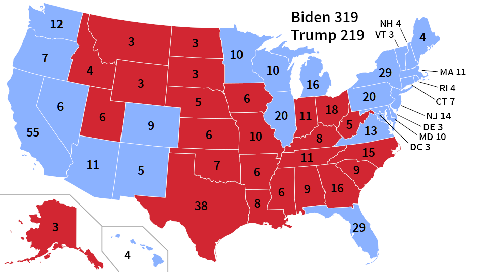
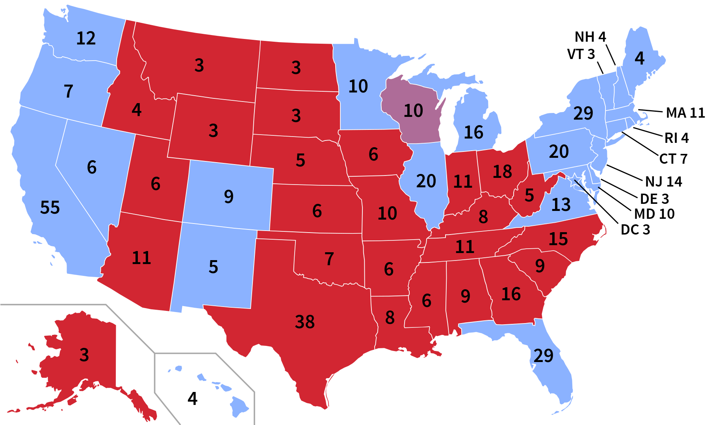
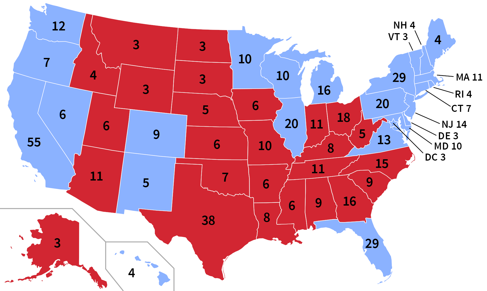
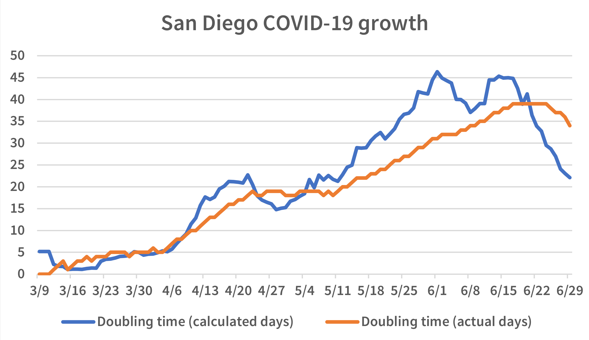
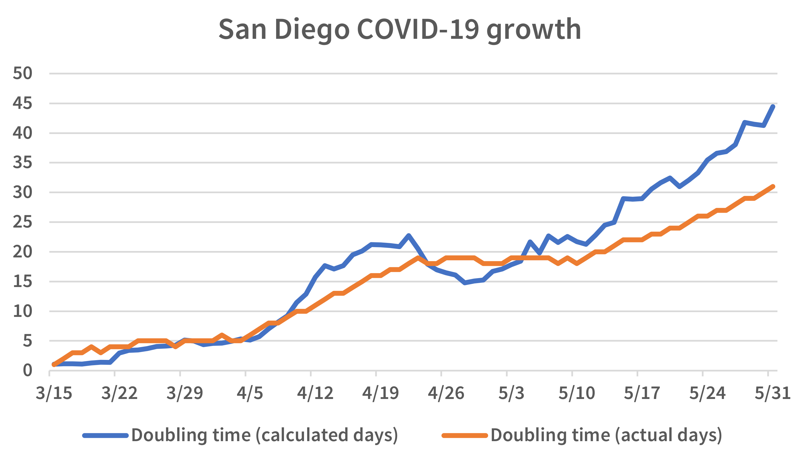
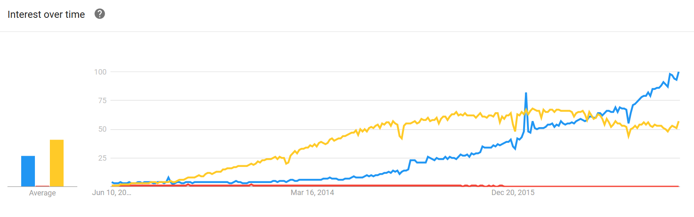

I have made a 2026-07-02 tag of MaraDNS today. I will go
over the post 3.5.0037 changes.
MaraDNS 3.5.0037
MaraDNS 3.5.0037 was a security only update; it fixed an issue with
DNS-over-TCP in Deadwood, where a trusted client authorized to perform
TCP DNS queries could disable DNS-over-TCP with a denial of service
attack. Note that DNS-over-TCP enabled is a configuration Deadwood does
not enable by default, and no example dwood3rc files
supplied with MaraDNS have DNS-over-TCP enabled.
This was the first update since MaraDNS 3.5.0036, a 2023 security
bugfix, where a remote “packet of death” could disable the MaraDNS
authoritative server.
Post 3.5.0037
The changes I have made post 3.5.0037 are changes I am making, not
because MaraDNS’s code was broken, but because GCC (and to a lesser
extent, LLVM) decided to “update” their compilers to throw errors with
C code which could previously compile.
Most of the fixes are minor fixes, such as some minor changes to how
signal handlers are written. Yes, it only took me an afternoon to
update the code, but these are updates I would not have had to make if
GCC no longer updated their code. A C compiler should not be a moving
target.
Indeed, Joerg Schilling who is no longer with us made a lot of
updates to the code which generates ISO images to burn in CD players. I
maintain a fork of that code which mainly fixes gross bugs; and I had
to do a whole bunch of hacking
to get the code to compile again in 2026,
again because of GCC’s changes to the compiler.
What I have done is comb through the code and removed all warnings in
clang 20 and clang 21, and made sure all of the code can compile in GCC
15 and GCC 16—and without warnings in GCC 16 (at least in Cygwin) to
boot. So, right now in 2026, MaraDNS compiles just fine in GCC, and
compiles with no warnings, even when -Wall is set, in
clang 20.
Compiling to the C99 standard
In addition, to minimize changes to compilers breaking code which
compiles without warning here in 2026, I have gone to the effort to
compile all of the code with -std=c99 to make sure the
compiler conforms to the 1999 C standard (i.e. the version of C which
existed when I started writing MaraDNS back in 2001).
Since some files use system calls which are not part of the C99
standard, the current workaround is to, for those files, compile it
with the incantation -std=c99 -D_POSIX_C_SOURCE -D_DEFAULT_SOURCE
. Today, I have gone through the MaraDNS and Deadwood code, and made
sure that the only programs which get the
-D_POSIX_C_SOURCE -D_DEFAULT_SOURCE incantation are programs
which otherwise do not compile if -std=c99 is set.
Everything now compiles, in Cygwin, in Ubuntu 26.04, and in a recent
release of Alpine Linux (I use Alpine because it uses a very different
userspace than Ubuntu).
Looking ahead
The next project is to minimize the number of files in the
coLunacyDNS sub-tree which are compiled with the
-D_POSIX_C_SOURCE -D_DEFAULT_SOURCE incantation.
MaraDNS is remarkably secure, as shown by the number of issues AI
assisted code reviews have found.
Overview: Mostly false alarms
I have received 12 AI assisted security advisories; of those
advisories, only one was serious enough to merit a patch being made.
Another one, which yes I patched against, was with code which hasn’t
been able to even compile since 2022.
The problem with AI-assisted reviews is that people are finding a
large number of issues which aren’t actual security issues.
With one issue, when I asked for an exploit or a patch, they ignored
me. It didn’t look like a real issue.
I got some eight different reports from another person including one
claimed “packet of death”. I spent a day investigating the “packet of death” claim,
and it was a
false alarm. The issues they found were things like “if Deadwood gets
this weird packet, it takes Deadwood a couple of seconds to release the
resource used by the recursive query being processed”. So, nothing
serious and nothing that merits a patch.
Another person sent a fairly large merge request, claiming buffer
overflows in a couple of utilities that do not even compile by default.
I looked at the issues and verified that I did proper bounds checking
except in one case there is a program—which I wrote about 20 years ago
and which hasn’t even been able to compile since 2022—with a
buffer overflow, but only if one’s $HOME (home directory)
is over 50 characters in length—a very unusual circumstance. I will
detail this fix below.
Haruki Oyama,
on the other
hand, did find a legitimate security hole which merited a new MaraDNS
release with the DNS-over-TCP code in Deadwood.
Issue #1:
DNS-over-TCP denial of service
If DNS-over-TCP was enabled (it is disabled by default), a Deadwood
client authorized to perform DNS queries could cause the DNS-over-TCP
service to not function with a denial of service attack.
This bug does not affect DNS-over-UDP operation.
If tcp_listen is not in your dwood3rc file,
this bug does not affect you. If tcp_listen is in
your dwood3rc file but has the value 0, this bug still
does not affect you. Only people who have set tcp_listen
to have a value of 1 are affected.
Note that no example dwood3rc file has tcp_listen
set to 1.
Only clients authorized to perform DNS queries can exploit this bug.
Issue #2: mqhash buffer
overflow
mqhash is a program I wrote in 2005 or 2006, and which I
stopped using once I moved from using AES for cryptographically strong
random numbers over to RadioGatún[32]. Indeed, the program stopped
being able to compile in 2022.
However, since it uses strcat(), a static code analysis
revealed that this unused code had a very hard to exploit buffer
overflow:
mqhash is not compiled by default when compiling
MaraDNS, Deadwood, and coLunacyDNS. One would have to go to the
directory mqhash is in to compile it.
mqhash had to be patched before the program would even
compile; I didn’t even realize it stopped compiling until this issue
was brought up.
Once mqhash was patched, one would need to have
$HOME (one’s home directory) be over 50 characters in length.
$HOME is normally 6 + size of username characters in
length (/home/$USERNAME), and usernames are generally 8
characters or shorter, so in the real world, $HOME should
be 14 characters or less, but needs to be 50 characters or longer for
the exploit to work.
To address this issue:
I patched against the buffer overflow.
I updated mqhash so it would compile again
I updated the relevant Makefile so mqhash
won’t compile with the default all target.
People may observe I have moved MaraDNS from my personal domain
to GitHub. While I have no plans to shut down my
personal domain at this time, having it on GitHub means that MaraDNS’s
webpage will stay online and not need to be accessed by using a web
archive when and if my personal domains ever go down.
Just as I have fixed Y2038 issues in 2022, as well as moving from
Perl to Lua 5.1 (which is included with MaraDNS as a security
hardened fork called “Lunacy”) for the scripts which make MaraDNS’s
documentation, I am now moving to a website which should stay online
for the foreseeable future.
In addition, it would seem I have lost my GPG signing key for
MaraDNS. For people who need a GPG signed copy of MaraDNS, download MaraDNS 3.5.0036
and apply any security patches
by hand.
To end 2022, I have released MaraDNS 3.5.0035. This release adds
support for large block lists which use little memory.
==Blocking hosts==
For a couple of years now, MaraDNS has had support for block lists.
For example, let us suppose we want to block some domains. We have
been able to do it like this:
ip4 = {}
ip4["evil.example.com."] = "X"
ip4["phish.foo."] = "X"
ip4["privacy-violator.example.net."] = "X"
(As an aside, this will block both the IPv4 and IPv6 forms
of these names)
Once this is set up, it will not be possible to resolve, say,
evil.example.com using Deadwood.
This works, but there’s a problem: It uses too much memory per entry.
Over at https://github.com/StevenBlack/hosts there are a number of large
block lists. One of which, the one for blocking pornographic content,
has some 207,723 entries in it. Loading this in to Deadwood using the
ip4 method uses some 237 megabytes or so of memory. In
comparison, if we use a block hash (see below), the same list only takes
up 9.5 megabytes of memory.
==Block Hash support==
In otder to be able to block a large number of hosts while using
minimal memory, MaraDNS 3.5.0035 now has block hash support.
The process for adding a block hash to Deadwood is as follows:
We use a new program, blockHashMake, to create a “block
hash file”:
We place the block hash file in the Deadwood home directory (usually,
/etc/deadwood).
We then tell Deadwood to read the block hash file. Put this in
/etc/dwood3rc:
blocked_hosts_hash_file = "badHosts.bin"
Note that, for security reasons, every time a block hash file is made,
a different file is generated. If, for some reason, it is desirable
to have a block hash file be same for a given list of hosts every time,
one can generate a block hash file as follows:
There is a security risk if we allow a blocked hosts file to have a 0
key: An attacker with access to a recursive instance of Deadwood could
have Deadwood use more resources than necessary if they know the block
hash file being used. Since the block hash file is read only, hash
flooding attacks are not possible, but an attacker could form queries
which use more resources to resolve as not being present in the block
hash.
Deadwood should never be an open recursor and this attack is limited in
scope. But be aware of the risks before setting this parameter to 1.
Comments for blog entries can be seen in the
forum.
I have been making a lot of MaraDNS updates this last week. Let’s
go over them.
==Y2038==
A couple of years ago, I removed maradns.exe from MaraDNS’s
download files because it had some Y2038 issues. maradns.exe
is back because I finally got a chance to go over the source code and
clean up a few lingering Y2038 issues.
Some features which require underlying libraries to work past Y2038,
such as localized timestamps for SOA serial numbers and timestamps,
are simply disabled on systems with a 32-bit time_t. It’s
better for stuff like that to be disabled than to have it do
something broken at Y2038. Users with a 64-bit time_t are
not affected by these changes.
I have made other code Y2038 compliant on systems which still use a 32-bit
time_t by moving the 136-year long window from 1901 to 2038 to
another range of dates. Current timestamps should be good until sometime
in 2156; timestamps for when zone files have been changed (to generate
synthetic SOA serial numbers) should be good until sometime in 2136.
While localtime functions (log timestamps, localized time SOA serial
numbers) are disabled in the 32-bit Windows maradns.exe build,
it uses Y2038 compliant native Win32 calls to find a file timestamp to
generate a synthetic SOA serial number.
There is only a 136-year long window on systems with a 32-bit
time_t; the majority of current real-world systems which
use a 64-bit time_t will not have timestamp issues comes 2136, 2156,
or whatever. There is an issue with synthetic SOA serial numbers
wrapping back to 0 come 2841, so anyone using MaraDNS in the 2800s should
be sure that replica (“slave”) DNS servers do not expect a SOA serial
to increment, only change.
I should note that synthetic SOA serial numbers are not used in zone
files with a SOA record in them—that’s another solution come
2800 or so (mid-2136 if one insists on still having a 32-bit
time_t).
These fixes are important enough that I have backported them to the
3.4 branch of MaraDNS.
==RFC8482==
While MaraDNS generally does not follow RFCs which came out after
2010, there is one very useful RFC from 2019 with security implications:
RFC8482.
DNS has supported for a long time ANY records, but they are a moderate
pain to implement. I implemented ANY records back in 2001
since an RFC-compliant DNS server needed to support them.
The only real world use case for ANY records is from Qmail
supporting them because of a bug in Bind 4.9.3, released back in 1996.
RFC8482 has been carefully
designed to handle the Qmail corner case, and there is no other
real-world use case for ANY. On the other hand, ANY has been abused by
bad actors in denial of service attacks.
While the security implications for ANY are limited with MaraDNS (which
does not have large packet support), there are security issues
so I now consider having RFC8482 support essential. Indeed, it’s
important enough I have backported RFC8482 support to the 3.4 branch
of MaraDNS.
==Updating “make install”==
The Debian
port of MaraDNS has not been maintained for a while. That in mind,
since I use MaraDNS in Ubuntu 22.04 (note: Ubuntu is derived from Debian),
and since the RFC8482 issue is serious enough to merit updating MaraDNS,
it’s time for me to maintain MaraDNS for modern Linux distributions
again.
That in mind, I spent all weekend researching systemd and have
updated MaraDNS to have a proper unit file for systemd. Systemd is a
lot better than many other init systems because, not only does
it have full daemonization support (it does what duende did
back in the sysvinit days), it also allows old sysvinit
scripts to run.
Now, when running make install in MaraDNS, it will do the
right thing in Ubuntu 22.04: It will install systemd unit files
and enable the services with systemd.
In addition, “make install” will now install coLunacyDNS (a new
Lua-based DNS server which uses Lua scripts to make custom DNS replies)
as well as Lunacy (my personal fork of Lua 5.1 which I use for MaraDNS
testing and for converting MaraDNS’s documents in to HTML pages, man
pages, and plain text files).
Since I am a Ubuntu 22.04 user, I can only guarantee that “make
install” will work with Ubuntu 22.04. People using other distributions
are on their own, but I will keep duende and the old
sysvinit init files around. I have even hacked them to work
with OpenRC—note I am not actively supporting OpenRC because I
only use Alpine Linux for MaraDNS unit/regression testing.
While discussing distributions, a shout out to Tomasz Torcz who
maintains a
current port of MaraDNS for Fedora core; this is the only
distro-specific port of MaraDNS I know of which is still actively
maintained.
This blog is about the midterms. I also have made a new MaraDNS release.
==The midterms: 2010 versus 2022==
The Republicans got their butts kicked in the 2022 midterms.
What happened?
The closest midterm to compare 2022 to is 2010. Back in 2010, we
had a Democratic president, a Democratic senate, and a Democratic house.
We also had a weak economy.
It was a very red bloodbath: Republicans gained 63 seats in the house,
and six seats in the senate. They retained control of one or more
legislative house throughout the 2010s.
Compare this to 2022: We have a Democratic president. A Democratic
senate. A Democratic house. And a weak economy. Based on just the
fundamentals, the Democrats should had lost both legislative houses.
That didn’t happen.
While votes are still being counted, it looks like the Republicans will
have only a very small majority in the house.
Democrats are most likely going to gain a seat in the senate
when all is said and done.
==What happened?==
While there are a lot of factors which affects how people will vote,
If I had to pin the results down to one issue, it would be
abortion.
In 2018 we had the blue wave giving the house back to the Democrats.
The main issue which persuaded people was healthcare.
At the time, Republicans got very close to taking away healthcare from
millions of Americans. It was only the now-deceased John McCain who
saved the Affordable Care Act (ACA).
Republicans learned their lesson in 2018. They very quickly stopped
talking about “repealing Obamacare” (their then-name for the ACA)
once the 2018 results showed it didn’t resonate with voters.
I am not seeing the same kind of self-reflection the Republican party
had after their 2018 defeat here in 2022. This may change come next
year; we will see.
I have released MaraDNS 3.5.0028
this week. The updates I have been making this month have been, by
and large, to fix up a small number of
Y2038 issues which
were present in the code. MaraDNS has been Y2038 compliant for a while,
but there were a couple of non-critical things which would had broken
come Y2038 on systems with a 32-bit time_t.
MaraDNS is becoming a mature open source project, having been around
for over 21 years, and with stable releases since mid-2002. That in
mind, I am now thinking about how I can keep MaraDNS sustainable for
as long as possible with a minimum of forced maintenance.
One moving part which can break some components of MaraDNS is any
non-standard scripting language which MaraDNS uses. For example, MaraDNS
has had a Python script for converting BIND zone files in to MaraDNS
zone files which I wrote in 2006, ran fine in 2006, and which I had no
reason to update because it was running fine. Then, in 2019, I got some
annoying
messages from the Debian team about having a Python2 script which
would break in Python3.
I had made no changes to the script. It did not have any bugs. The
only thing that changed is that the non-standard scripting language
Python decided to change their syntax and stop supporting the older
version of Python. So, much to my annoyance, I had to perform unpaid
maintenance work for MaraDNS because I chose to include a Python
script.
That in mind, I have removed bind2csv2.py from MaraDNS,
placing it in a separate repository of unsupported programs.
Likewise, I have converted the Perl scripts MaraDNS has to handle
MaraDNS’ documentation in to Lua5.1 scripts. While Lua5.1 isn’t
standard per se, there are multiple independent implementations
of it (PUC Lua, LuaJIT, etc.) including one in the MaraDNS source tree
(lunacy, a fork of PUC Lua 5.1), and Lua5.1 will never change its syntax.
I understand that, right now, there are no plans to come out with a
Python4 that breaks Python3 scripts, nor a Perl7 which breaks Perl5
scripts (there’s a reason Perl6 was renamed Raku, so that the Perl
world would not have the same issues Python had with the Python3
update), but since both scripting languages are not included with
MaraDNS and are not set in stone with a standard like POSIX, in the
interests of long-term maintainability, MaraDNS now has no Perl nor
Python scripts in it.
For people who still want the Python scripts or the outdated Perl
versions of the the MaraDNS “EJ” (Easy Journal) documentation tools,
they are available here:
MaraDNS 3.5.0025 can be built and tested using multiple implementations
for each step of the process:
It can be built on top of a Linux kernel, or in Windows 10 with cygwin.
It can use the GNU utilities for the POSIX userspace (sh,
awk, etc.), or it can use Busybox.
It can use either PUC Lua 5.1 or Lunacy, my Lua 5.1 fork, to run the
Lua parts of the tests and the document-building Lua scripts.
No less than three make implementations can now run
MaraDNS’ makefiles.
MaraDNS compiles with no less than three different C compilers:
gcc, clang, and tcc.
==Make==
Make is a standard POSIX utility to determine dependencies and compile
programs.
I have updated all of MaraDNS’ makefiles to work with
an implementation
of the “make” development utility which is mostly POSIX compliant.
For real world use, the “make” utility needs to have an extension that
POSIX permits: The ability to have the / character in makefile
targets. This is supported by any real-world “make” implementation
(GNU make, bmake, even pdpmake with non-POSIX extensions enabled) but
does deviate from a strict reading of the
POSIX
standard for “make”.
If using a strictly POSIX version of make which has the extension of
allowing / in target names, one needs to type in these commands
to compile MaraDNS:
./configure CC=cc # Change this to gcc/clang/tcc as desired export CC make
This deviates from the standard ./configure ; make build
process.
While real-world implementations of “make” set CC to the
cc command by default, the POSIX make spec actually says
this should be c99 which won’t compile MaraDNS (since MaraDNS
uses POSIX calls not part of the ISO spec).
That in mind, I have created a fork of pdpmake which is
completely POSIX compliant with two exceptions:
Angela Lansbury, after having lived a full life, has died at the age of
96. While well known for her role in Murder, She Wrote,
my favorite role and song of hers is “Tale
As Old As Time” from the 1991 animated version of Beauty and the
Beast.
Angela was able to overcome the very unfortunate stereotype of a female
performer supposedly no longer being viable once she ages. The role she
is most famous for in my daughter’s world—the teapot in the animated
Beauty and the Beast—was one that she performed when she was
60 years old.
While the song “Tale As Old As Time” was re-performed for the 2017
live action version of Beauty and the Beast, I always have
preferred Lansbury’s version.
Rest in peace, Angela, and thank you for the wonderful acting
and music.
==MaraDNS update==
There is a long standing bug where Deadwood would incorrectly resolve
CNAMES under certain limited circumstances.
Deadwood has for a long time allowed out of bailiwick answers in a CNAME
chain, since:
They are not a security threat
They sometimes allow answers to be solved more quickly
Let us suppose we have this:
blog.foo. CNAME blog.new-isp.foo.
blog.new-isp.foo. A 10.1.2.3
If the real answer is 10.1.2.3, this allows Deadwood to solve
the query as soon as it sees this CNAME chain. It’s not a security
hole because Deadwood only stores the entry as the answer for
“blog.foo.”
But if the real answer for blog.new-isp.foo were something different,
say 10.9.8.7, then Deadwood would had returned the wrong IP for the blog.
This isn’t a security problem, but it’s an issue because most DNS
servers would discard the CNAME glue while Deadwood accepted it.
This bug was filed in 2015. I said, at the time, that I could
not fix it because I was a single parent working a
full time job. Now that I am semi-retired since it’s hard to find
an employer in the tech sector willing to work around the needs of a
now full time single parent, I finally had time to fix this tonight.
I have also created a test to verify this bug is fixed. Indeed,
I followed test driven development: I made the test, then updated
the code so the test would pass.
The code can be downloaded from the Git tree for MaraDNS:
While using Deadwood as a recursive resolver is generally
deprecated—recursive DNS here in 2022 is something best left to
large organizations which can pay programmers to maintain the
DNS server full time—this is a fairly small change which will make
things more bearable for people still using Deadwood 3.4 as a recursive
resolver.
Since the 3.4 branch of MaraDNS uses a system
of shell scripts and diff patches to update the code, I have
made a
script which will update Deadwood with this change when
it is time to make the MaraDNS 3.4.04 release.
As I was working on that code, I made this discovery that, on both
64-bit ARM and 64-bit x86 architectures, int32_t and
int_fast32_t are the same datatype. Since there still exist
some expensive mainframes out there which do not support
32-bit words (Unisys still has a mainframe which uses 36-bit words instead),
C code should ideally not use int32_t, since someone may end
up trying to compile the code on some exotic computer some day. Instead,
one should use int_fast32_t, which is required to be supported
if a compiler is C99 compliant (unlike int32_t), since this
data type might be bigger than 32 bits.
I didn’t know this when I did the lion’s share of Deadwood development
between 2007 and 2010; I used int32_t where most of the time
int_fast32_t would had made more sense for integers which do
not fit in 16 bits. The thinking when developing Deadwood is that
int could be 16-bit (but is 32-bit or 64-bit on anything Deadwood
compiles on), and to use exact lengths when more bits was needed
in a number.
There are places where the integer must be precisely 32-bits
(notably, the cryptographic random number generator), and since no one
is loaning me a Unisys mainframe to develop things on something without
32-bit support, there is no way for me to meaningfully test things on
a system,
which
has not even been confirmed to exist, which has
stdint.h support but doesn’t have int32_t,
uint32_t, or even int64_t.
Since I am aware of no one who has ever had an issue with this (and
people have compiled Deadwood on lots of stuff like MIPS and what not),
I will leave this bug, such as it is, open. If you want things to work on
your Unisys mainframe, if you’re rich enough to buy a Unisys, you’re
rich enough to pay me to refactor Deadwood to not need int32_t.
Comments for blog entries can be seen in the
forum.
This blog is an example of how outspoken, confrontational people have a hard
time doing actual productive work.
==The rise and fall of djbdns==
djbdns is (was, really, here in 2022) a DNS server which was very popular
back in 2001, when I started developing MaraDNS. It has not been updated
since 2001.
One of the things I find incredibly ironic is that, here, over 20
years after DJB’s final update to djbdns, I’m the only one who is
updating its code. And, I am
no djbdns advocate: I started MaraDNS
simply because, until 2007, djbdns didn’t have an open source license,
BIND had a lot of security issues, and there plain simply wasn’t any
other DNS server out there. The djbdns crowd was not happy; one of my
first emails I got after starting MaraDNS was a flame from a djbdns
user criticizing me for making MaraDNS because djbdns was good enough,
in his point of view.
And, indeed, there was a lot of noise 10-20 years ago about how djbdns
was the one true DNS server, better than all others because it had
no security holes. They made a lot of noise online, flooding online
discussion boards whenever the subject of a DNS server came up. A few
of them are still on ycombinator, still criticizing anything that’s
not djbdns—the excellent KnotDNS got a cold reception from them there.
Despite all of the noise these loudmouths made about djbdns, very few
stepped up to plate to actually maintain djbdns’s code. You would
think, with the number of poster loudly proclaiming the virtues of
djbdns, the number of people who made entire websites shrines to djbdns
(not to mention qmail), and so on, at least one of them would still be
up to plate, maintaining djbdns.
No. That didn’t happen. The only one still here, still maintaining
djbdns is me, and I made a competitor to djbdns (which has been flamed
by multiple djbdns “advocates”). Not one person who went to so much
effort to troll and flame other DNS servers had the basic competence
and persistence to actually make and maintain code.
Years after the BIND-and-djbdns flame wars have died out everywhere
except with the aging crowd of Ycombinator desperately trying to recreate
a rose-tinted vision of the past (and even here the djbdns advocates
are slowly conceding djbdns isn’t really usable here in the 2020s),
MaraDNS is still being maintained. I have given up on making her a general
purpose recursive DNS server (use BIND, Unbound, or Knot Resolver for
that), although it will still work as a recursor with over 99% of sites,
as long as min_ttl is used so amazon.com is usable. However, MaraDNS is
still a general-purpose authoritative nameserver, and it is (via Deadwood)
a usable caching resolver (useful for pi-hole type stuff).
Point being, people who make a lot of noise and spread a lot of
negative energy online seem to not be very good at actually creating
and maintaining something tangible like a software project.
I am taking a minor break from being actively involved in the online chess
community. People should not be making unfounded negative accusations
without evidence, and the current controversy, which I have discussed
enough in the last two blog entries, has not died down in the least.
Hopefully things will get back to normal again; until then, I need
some space from that kind of online negativity.
Comments for blog entries can be seen in the
forum.
I have made a security update for a fairly minor security problem in
MaraDNS. Also, a discussion of dark mode and a chess game from the
currently running chess olympiad.
==MaraDNS security update==
Xiang Li from Network and Information Security Lab, Tsinghua University
discovered a clever way to keep names in Deadwood’s cache after a
rogue domain has been revoked. I have implemented measures to make
this attack no longer feasible. The only impact is that
sometimes a name can stay in the cache longer than desired. The issue
only affects people using Deadwood as a fully recursive DNS
server; if one uses upstream_servers and not root_servers,
one will not be affected by this bug.
This issue was fixed in Deadwood 3.5.0022 released on May 7, 2022. To
allow other DNS server developers ample time to fix and patch the issue,
I kept a 90-day embargo. I made the issue public on August 1, 2022,
after coordinating with other DNS implementors to ensure the issue has
been addressed across the board before making it public.
I have updated my web pages to have dark mode support in CSS. If
one is seeing this page with a light text on a dark background, this
means dark mode is enabled in the browser; people without dark mode
enabled will see no change to the web sites.
As an aside, for people who want to view websites without dark mode
support with light text and dark backgrounds,
Dark Reader looks to do
a really good job.
==Shirov v. Toczek 2022==
The international chess olympiad is ongoing, with well over 150 nations
playing each other chess in India every day. With over 600 games being
played every day, a number of interesting games have come up. Here’s
an interesting game between Shirov (White) and Toczek (Black) from the
second day of the olympiad.
Black resigned because he could not save his queen. For example, if
28... Qxa4 then 29.Rd8# delivers checkmate.
The code and graphics to make the chess game diagram come from a
variety of open source projects. There is a
list of contributors and copyrights for the hard working people
who made these chess diagrams possible. Also, the diagram code has a
GitHub page.
Comments for blog entries can be seen in the
forum.
I discuss the Ukraine invasion, some minor updates I have been making
for MaraDNS, why I don’t like 5G, and Will Smith’s now world-famous
slap at the Oscars last night.
==The Ukraine invasion==
Putin’s invasion of Ukraine is a brazen power grab trying to use blunt
force to conquer a sovereign nation. I agree with Biden: It is a war
crime. This inhuman invasion must stop.
I have been following World Chess Champion #13 Kasparov’s Twitter feed,
because, as a Russian who lived under Soviet oppression, Kasparov has an
excellent perspective of Putin’s actions:
I have been, based on user feedback, making some minor updates
to MaraDNS:
An incomplete last line in the dwood3rc.txt file is no longer
fatal if running Deadwood in Windows (still fatal in *NIX clones).
Document how to have CAA records in MaraDNS.
Fix a minor issue with example SPF records in MaraDNS’s documentation.
These changes are all pretty minor, and do not merit an updated release,
but I have recompiled Deadwood for Windows with the incomplete last line
change and updated the web page with MaraDNS documentation.
I consider 5G harmful. Not because of the alleged health risks of
5G radio waves which I think is a bunch of bull. But because, in
the name of upgrading to 5G, US cell carriers are in the process
of decommissioning their 3G networks. I had multiple 3G cell
phones, including one only four years old, which is now a
paperweight because the cell phone carriers have decided they
can make more profit selling the “new improved 5G experience”
while forcing those of us who still have 3G cellphones to buy
a new cellphone I didn’t want to buy just so that I can have
the same functionality my previous cell phone had.
While it makes business sense to force people to buy phones
they really do not need, it makes no sense for the environment
to have a network upgrade convert perfectly good cell phones
in to landfill.
==Will Smith at the Oscars==
For context, this is about Will Smith slapping Chris Rock last night
at the Oscars. Since everyone is talking about it, I may as well
chime in with my two cents.
I think the best moment in this entire Will Smith affair at the Oscars
is how Denzel Washington and Tyler Perry walked up to Will Smith and
defused the situation with Smith. I don’t think they were enabling bad
behavior, but reacting to a very inappropriate action with empathy
and compassion.
Then again, Tyler Perry starred in and directed my favorite movie:
“Why did I get Married”. Yes, I love romcoms, especially realistic
romcoms where the characters actually believe in God.
Comments for blog entries can be seen in the
forum.
I discuss a change in MaraDNS’s support policy in this blog. Also,
I discuss another of the top 5 1980s songs on YouTube.
==MaraDNS: Bug reports removed==
Back in the mid-2010s, GitHub bug reports were a gold mine of clueful
bug reports. The bug reports had full descriptions, sometimes
scripts to reproduce the bugs, and were very helpful with improving
MaraDNS. Something changed in 2019: Instead of getting useful bug
reports, I started getting support requests disguised as bug reports.
One user became so hostile with me after I made it clear bug reports
are not for support, I had to delete the entire support thread.
All of this, despite me telling users not to use support requests for
bug reports as a pinned bug report.
That in mind, since I haven’t gotten a useful bug report for
nearly three years, I have removed the “issue” tab from MaraDNS’s GitHub
repo. To file a bug report, go to the
bug report thread
on GitHub.
The third most popular 1980s song is Guns N’ Roses’s song
Sweet Child O’ Mine,
with 1,304,342,951 YouTube views as I type this.
Guns N’ Roses was the first really popular act in the 1980s which bucked
the trend of synth-heavy music which dominated the 1980s. The synth heavy
trend even affected traditional rock bands: As just one example, after
many years of floundering, the band Heart finally stopped making classic
rock and instead made the synth heavy album Heart in 1985, which
gave Heart their first #1 hit, “These Dreams”, and went 5x platinum.
The sound of Heart differs from their classic hits
to the point my daughter is convinced it is not the same band which
gave us both their 1975 classic rock song “Magic Man” and their mid-1980s
hits “These Dreams” and “Never”.
Guns N’ Roses, on the other hand, was convinced you could make a Rock
and Roll hit again without relying on synthesizers. And, indeed, there
is not a single synthesizer in this entire song, and yet it hit #1
back in 1988 and, to this day, is the third most popular 1980s song
on YouTube.
This song paved the way for Nirvana to start having mainstream hits,
followed by the entire 1990s “grunge” movement.
Comments for blog entries can be seen in the
forum.
In this blog, I briefly share my thoughts about Afghanistan, now that we
are leaving there after 20 years, and announce a new MaraDNS release.
==Afghanistan==
I think we made the right decision intervening in 2001 to try and get
rid of the Taliban. The Taliban has been a horrible theocratic government
which has a history of hideously oppressing women, and based on the fact
Afghanistan 25 years before our 2001 invasion was a free country adopting
western values, it was reasonable to think we could do that again.
Additionally, the government in Afghanistan was supporting
a militant group who flew planes in to buildings, causing massive destruction and the
deaths of thousands of Americans. So we needed a toe hold in Afghanistan
to ensure that those kinds of attacks would not happen again. Once we
eliminated the mastermind of that 9/11 attack, that is when we should
had left Afghanistan. Nation building works a lot better when the nation
in question has had a long history of being a free and prosperous nation
(e.g. Germany and Japan).
==MaraDNS 3.5.0021==
MaraDNS 3.5.0021 is a security update for MaraDNS.
This issue only affects the relatively new coLunacyDNS server (and
actually may not affect it); it does not affect MaraDNS and it
does not affect Deadwood. The coLunacyDNS server is a
separate server from MaraDNS that uses Lua for its configuration; the
majority of MaraDNS users are not using this relatively new program,
and there is no way to use coLunacyDNS just by using the MaraDNS
authoritative or Deadwood recursive services.
In other words, unless you know that you are using coLunacyDNS,
this security issue does not affect you.
I looked at the CVE database to see if there were any security issues with
my fork of Lua (named “Lunacy”) that I use in coLunacyDNS; after some research,
I determined that
only one issue affects the version of Luancy in question.
So, I applied a one-line patch to fix that issue, then made new releases
of Lunacy and
MaraDNS to update
the relevant code.
As it turns out, the Lunacy code is compiled such that the
exploit scripts which are supposed to crash the unpatched Lua code
actually do not crash Lunacy. So, there is a significant chance
this security issue could never be exploited. But since this issue
does have a CVE number, and since there is a patch to fix the
issue, I have made the update.
I discuss a very technical issue for users of my MaraDNS server:
How to have DKIM records in MaraDNS.
==MaraDNS and DKIM: How it is done==
DKIM is a format used to store e-mail authentication data via DNS.
I have now used DKIM keys with MaraDNS. Even with the 512-byte limit
with classic DNS packers, MaraDNS can store a 2048-bit RSA DKIM key.
A DKIM record is a long “multi chunk” TXT record; DKIM records
are stored in a special _domainkey.example.com record (in my case,
x._domainkey.samiam.org). As per
RFC6376
section 3.6.2.2, “Strings in a TXT RR MUST be concatenated together
before use with no intervening whitespace”; in the
MaraDNS
man page on TXT records, it points out that a single TXT “chunk” can
only be up to 255 bytes in length, but we need more than 255 bytes to
store a 2048 bit RSA key (6 bits per character, so we need 342 characters
to store just the key) and a little more overhead to store the other
bits in our DKIM record. But, it doesn’t matter where we split the
chunks as long as each individual chunk is under 256 bytes in size.
Here is a real-world DKIM key stored in my MaraDNS zone file:
The man page
describes this record. The backslashes are used so that a single line is
not over 80 columns in width; in the line which begins 'ZuZyQi
(about halfway down), one can see this near the end: NJ';'y1Q'\.
The ';' bit tells MaraDNS to separate the TXT record in to a
separate chunk at this point in the record.
As we can see, MaraDNS can store and distribute 2048-bit RSA keys using
the DKIM format.
Comments for blog entries can be seen in the
forum.
I review the Star Trek episode The Drumhead, and talk about why
it’s important to watch here in 2021. Also, another MaraDNS release.
==Star Trek==
I was reading
an
article claiming that The Inner Light is the best Star Trek
episode ever made. I disagree.
When my mother was still with us, one night we opened up Netflix and
she asked me to choose some episodes from Star Trek: The Next
Generation to watch together. I chose three: Remember Me, The
Inner Light, and The Drumhead.
Of the three episodes, the one which stood and which we both agreed was
the best episode was The Drumhead.
In this day and age of runaway cancel culture, The Drumhead deserves
to be looked at again.
==What’s wrong with “cancel culture”==
The problem with cancel culture is that there is no legal guard rails
controlling the process. There is nothing stopping injustice from
happening, and with little to no worker’s rights in the United States,
there is little to no protection from people having their jobs lost
when and if the “woke mob” comes after them.
Typical legal protections include:
Due process. We should make decisions of guilt based on hard facts,
not wishy washy feelings.
Presumption of innocence. We should not decide someone is guilty of
a crime without proof beyond a reasonable doubt.
Statute of limitations. We should not drag people through the mud for
things that happened years or decades ago.
No Ex Post Facto. In other words, we can not retroactively
decide someone is guilty for doing something which was reasonable and
acceptable at the time.
Adversarial system. Every story has two sides to it; we should hear
both sides before rushing to judgment.
Cancel culture has none of these protections, yet its consequences are
quite dire: Loss of job, loss of business, having a scarlet letter
affecting one’s job search for years, to name just a few.
==The Drumhead==
This review is spoiler free
That in mind, this story, from over 30 years ago, did an amazing job
of predicting today’s cancel culture. In the story, someone is falsely
accused of a crime, and the forces of justice have to fight back against
the cancel culture forces for fairness to prevail.
A number of typical cancel culture tropes come up in the story, notably
“offense archeology”, where, after our hero is accused of a crime,
Worf and his assistants look through their entire history, including
finding out who their friends and family are, to find out what other
misdeeds they can dig up, no matter how old or irrelevant they are.
As I have recently
Tweeted, anyone who goes through someone’s posting history to find
something then post it out of context to make someone look bad is someone
who is not acting in good faith. Usually, the motive is to be a bully.
I feel very strongly in human rights and constitutional protections,
and am disappointed that some proponents of today’s “cancel culture”
often times do not honor these protections. As this classic Star
Trek episode shows us, we need to be vigilant to make sure we remain
a free society that respects human rights.
==MaraDNS 3.5.0020 released==
Sometimes, it is desirable to have MaraDNS control the source IP used
when making upstream DNS queries. MaraDNS 3.5.0020 adds a new parameter,
source_ip4, which implements this feature. Downloads are
at the usual location.
Comments for blog entries can be seen in the
forum.
On April 23, Dan Kaminsky passed away. I write about how our lives
crossed paths.
==Making MaraDNS secure==
In the process of writing MaraDNS, I did a lot of online research about
DNS and how DNS worked, including reading Dan Bernstein’s then
excellent
notes about protecting DNS servers from spoofing attacks.
Indeed, I noted, back in 2001—the year I started implementing Mara—that
MaraDNS used cryptography to protect her from a “spoofing attack”.
This spoofing attack was only theoretical back in 2001. It did not
become a practical attack for over half a decade.
==Dan Kaminsky==
In 2008, Dan
Kaminsky finally found a way to implement the spoofing
attack I went to some effort to protect MaraDNS from back in 2001.
This attack got a lot of attention and press at the time. MaraDNS
was
not vulnerable to the attack, but other DNS servers were vulnerable.
This attack was very helpful in giving MaraDNS more press and attention
in an era when getting a job in the tech industry was very difficult.
Indeed, two years later, I was able to get two job offers in a very slow
economy because of my work on MaraDNS.
Writing a DNS server and making it secure is a lot of work behind the
scenes. The work I did protecting MaraDNS from the attack Kaminsky
implemented required adding an entire cryptographic library to MaraDNS’s
code so she would not be vulnerable to the attack. Since this code did not
add any shiny features to MaraDNS, it was not visible to users of the
software until Kaminsky’s attack.
I appreciate Kaminsky going to a lot of effort to make what was a
theoretical attack practical.
Rest in peace, Dan Kaminsky, and prayers for his family and friends. He
was a very good colleague and someone who I am honored to have interacted
with. It has been a very deep honor to interact with Kaminsky while he
was still with us.
==MaraDNS 3.5.0019==
Last month, I released MaraDNS 3.5.0019. This is MaraDNS 3.5.0018 with
a one line patch added
to allow the Zoneserver daemon to run better under systemd.
The picture is a self-portrait of Kaminsky that he released under
a Creative Commons
license. I have altered the work to make it a picutre I can include
in my blog.
Comments for blog entries can be seen in the
forum.
I list websites for playing Chess online. Also, MaraDNS 3.5.0018 was
released a couple of months ago.
==Online Chess==
There are a number of places where one can play free online Chess or Chess
variants. I will only list places which are free to play and support
correspondence Chess:
https://lichess.org/ Geared towards normal Chess, but it has a few 8x8
variants. The site is fully free and open source, and includes a
full featured opening explorer.
https://lidraughts.org/ While they do not support Chess, this site is
like Lichess, but for a number of Checkers variants.
https://greenchess.net/ This website is not open source,
but is free to play. It only supports variants of “normal” modern
western Chess, but it has a number of variants, including ones which
do not use a square board.
https://brainking.com/ Correspondence games; a number of Chess variants
are supported (Embassy Chess, Grand Chess, Chinese Chess, etc.). Not
open source, but free to play up to 20 games at once. Note that
the web design is dated looking, and the text includes a lot of SEO links
for online gambling sites.
http://www.gamerz.net/pbmserv/ Not open source, but a server
which has been around for a long time which supports a number of
Chess variants and other games. Games are played via email and use
ASCII graphics (I suggest owning a real board). The text, like Brainking,
has a lot of SEO links for online gaming; this might be needed to keep
the site online.
For anyone who wishes to play me online, my Lichess handle is
Goldrider. There currently
is a queue before I will start a new game; send me a message there
and I will gladly put you on my waiting list and play you once I
finish a game.
==MaraDNS 3.5.0018==
I released MaraDNS 3.5.0018 a couple of months ago. The main update
from 3.5.0017 is that this version is now using Ubuntu 20.04 instead
of CentOS 8 for testing and development.
Comments for blog entries can be seen in the
forum.
I make another prediction of how the election will go, make an
observation about Doctor Who, and mention another MaraDNS
release. 402 words
==My fourth election prediction==

My fourth prediction for the November 3 presidential election
Now that Trump looks to be better, I will revise my prediction. I
predict that Biden will get 319 electoral votes (EVs), and Trump
only will get 219 EVs. I predict that Biden will get the sun belt
(Arizona and Florida) and the rust belt (Pennsylvania, Michigan,
Wisconsin, and Minnesota).
It’s important that Biden get the sun belt because Florida will be
counting its votes more quickly than key states in the rust belt.
If Biden gets Florida, we will know who won the presidential race on
election night; otherwise, it may take up to a week to know the
winner.
We were watching this British TV series called
Doctor Who on
Netflix. First, we watched a mid-1970s story,
Pyramids of Mars,
then we watched an aughts (first 2000s decade) story,
School
Reunion. Her observation: The 1970s one did not have any Black people
in it, but the 2000s one did.
I was shocked: This was something I never noticed, even as a long term
Doctor Who fan. White privilege was invisible to me: I did not even
notice when Black people were being excluded.
I do not think the BBC producers were consciously excluding Black
people when making this episode. Pyramids of Mars was made
in an era when the BBC was still openly homophobic (Pete Shelley’s
1981 song Homosapien was banned by the BBC for making
references to homosexuality) and produced at least one show
(It Ain’t Half Hot Mum) which is
considered racist today.
Times have changed: The BBC plans on having the next incarnation of the
lead character in Doctor Who be a Black woman.
==MaraDNS 3.5.0017 released==
I released MaraDNS 3.5.0017 earlier this month. The only program to
be updated is the Lua-based coLunacyDNS server; that server now allows
the Lua script to specify some flags (RA: Recursion available and AA:
Authoritative answer) and the TTL (time to live) in the DNS response
sent to the client.
Now that I am working again, this will probably be the last MaraDNS
release for a while.
Comments for blog entries can be seen on the
forum.
I post a second prediction for the 2020 election, and mention a new
MaraDNS release.
==My second prediction==

My second prediction for the November 3 presidential election
This prediction is very similar to the prediction I made
two months ago, the only
difference being that I have some doubt that Wisconsin will flip to
Biden on November 3.
Let’s look at this prediction in more detail.
==Florida==
Without Florida, Trump will need to repeat his 2016 performance in the
Northern Rust Belt (PA/WI/MI/MN) to win, which looks unlikely.
So, let’s look at Florida’s polling. Right now, 538 claims that
Biden
has a 60% chance of getting Florida. I think they are being too
conservative; I claim Biden has about an 80% chance because:
Older voters in Florida have seen the results of Trump’s poor handling
of the Coronavirus epidemic throughout the summer, and the resulting
11,000+ deaths.
When I say “The Rust Belt”, I am talking about Pennsylvania, Michigan,
Wisconsin, and Minnesota. Biden, if he gets Florida, needs only
Pennsylvania to win the election; if he can not get Pennsylvania, he
can also win with Michigan and Minnesota.
Biden has a considerable advantage in the rust belt compared to Clinton
in 2016: He does not have the problem with losing voters who were
disappointed in Sanders’s defeat which Clinton had. 2016 Sanders
voters are behind Biden here in 2020, which is enough to win the entire
northern rust belt.
I have released MaraDNS 3.5.0016; in this release, coLunacyDNS now
has 100% test coverage.* I have fixed a couple of minor bugs; there
was some incorrect behavior if processQuery returned bad data
which I found and corrected in my testing.
I have released MaraDNS 3.5.0015, with coLunacyDNS declared stable.
523 words
==Making coLunacyDNS stable==
To declare coLunacyDNS stable, I first had to declare it feature
complete: I will add no more features to coLunacyDNS (for now).
Instead, I tested coLunacyDNS to make it stable.
So, I began testing coLunacyDNS, with a handful of informal tests
to make sure it ran correctly. It did. But, then, I asked myself
this: How can I see how many of coLunacyDNS’s lines we are running
to make sure we are testing all of the code?
==gcov==
The tool to use with C language programs to see which lines we are
testing against is gcov. There was no need for me to find
and install gcov; it was included when I installed GCC on my CentOS
8 development system.
Some points about gcov:
To run gcov, we need to add the flags -fprofile-arcs -ftest-coverage
when compiling our programs.
Only the files which we wish to measure test coverage for need to be
compiled with these special flags. gcov will still happily measure test
coverage, even if it uses libraries or routines not being measured.
We only need to run gcov once after running all of the tests,
unless we wish to see a running tally of test coverage.
If a program is terminated abnormally (yes, SIGTERM is abnormal
termination), then we will not get updated coverage results for the
program. I had to alter the coLunacyDNS program to, when compiled in
special test mode, have SIGALRM signal the coLunacyDNS service to
break its main loop and terminate normally.
The files which gcov uses to tally results have the names (in CentOS 8)
.gcda and .gcno. The process running the compiled
program needs to be able to write to those files for test coverage to
be updated.
If a line is not run, the .gcov file will have something that
looks like this:
#####: 123: foo = bar;
==coLunacyDNS’s test coverage==
As of the MaraDNS 3.5.0015 release, coLunacyDNS has 92.73% test
coverage. Some notes:
I compile coLunacyDNS in a special test mode when running the
coverage tests.
Certain sanity and security tests which should be in the production
code can not be readily run via a test (e.g. code which initializes
the random number generator if not initialized, but the C code has
already set it up), so I use #ifdef GCOV to hide those
sanity tests in test mode.
#ifdef GCOV also adds the ability to run some code which
can not be easily tested for (e.g. certain kinds of socket errors).
My goal is to get 100% test coverage, provided I #ifdef out
code which can not be readily tested.
==Getting MaraDNS==
MaraDNS is available, as always, on its download page:
I review the low-cost PNY CS900 SATA SSD. I also have a new MaraDNS
release. 452 words
==The PNY CS900: Cheap Storage==
The PNY CS900 is a low-cost SSD; the 240Gb (that’s decimal gigabytes,
as I will detail later) model was only $26 last week and is $27 this
week.
For $26, one should not expect a Samsung PRO series SSD. This particular
SSD uses a Phison PS3111
(S11) controller, and it doesn’t have any DRAM storage on
the SSD itself. This controller is the reason why the CS900 is only
available up to 1Tb in size—that’s the PS3111’s limit.
The 240Gb PNY CS900 has, as claimed, over 240Gb of storage. From the
output of fdisk -l:
Disk /dev/sda: 223.6 GiB, 240057409536 bytes, 468862128 sectors
One may observe it has a little over 240 decimal gigabytes, but
it has only 223.6 binary gigabytes. If an operating system
claims it only has 223 gigabytes of storage, this is simply because
PNY is using a different definition of “gigabyte” than the OS uses.
There are anecdotal reports that the PS3111 is prone to failing. Phison
themselves point out
the
chip has data reliability and data loss protection
features; PNY has a three-year warranty for these drives. I personally,
at $26, just got three of them for my two old laptops I wanted to
install Linux on, and have made sure any important data is on both
laptops. Should one of the drives fail, I can continue my work on the
other laptop, while using my third spare drive to reinstall Linux.
Regular backups are always a good idea, and it’s better to use
a low-cost drive and have a robust backup schedule than to use an
expensive drive and not perform any backups.
This is a budget
SSD which uses TLC NAND chips. It’s not the fastest, it’s not the
biggest, it’s not the most reliable, but it’s pretty cheap and has been
working quite nicely for me this last week.
==MaraDNS 3.5.0013 and 3.5.0014==
In MaraDNS 3.5.0013, I figured out how to have functioning IPv6 sockets
in the toolchain I use to build Windows services. So, coLunacyDNS now
can bind to IPv6 addresses; it can not contact DNS servers via IPv6,
but DNS clients can contact coLunacyDNS via IPv6, both in Windows
and Linux/*NIX.
In MaraDNS 3.5.0014, I have again updated coLunacyDNS. The example .lua
files now all correctly return “not there” over DNS when we ask
for a DNS record which does not exist; we also now handle all ANY
queries by sending an RFC8482 response.
I have released MaraDNS 3.5.0012 to address a minor security issue.
I also discuss the end of BuyVM’s OpenVZ servers. 692 words
==MaraDNS 3.5.0012==
The mmLunacyDNS program did not use a secure hash compression
scheme when hashing strings. As a result, it could had been, under
some unusual circumstances, vulnerable to denial of service attacks.
To fix this issue, I have updated Lunacy (the MaraDNS-specific fork
of Lua 5.1), mmLunacyDNS, and coLunacyDNS to use a
secure hash compression function called HalfSipHash-1-3.
The reason I am using this function is that it is secure enough for
our uses, while being rather fast with both 32-bit and 64-bit code.
One reason why MaraDNS has had, over the years, a pretty stong NIH
policy (Not invented here: Use MaraDNS with a minimum of external
third party code) is because, once I incorporate third party code
in to MaraDNS, I am responsible for any and all security issues
that code may have. So, since Lua 5.1 has a security issue with
string hash collisions, and since I use Lua 5.1 in MaraDNS, I
am now the one who has fixed this bug.
This issue does not affect MaraDNS nor Deadwood. This
issue only affects the new Lua-based nameservers, mmLunacyDNS
and coLunacyDNS, which, while included with MaraDNS releases,
are still undergoing active development and are currently not
stable.
Frantech (BuyVM) no longer sells OpenVZ plans, and their current
OpenVZ nodes will no longer be in service at the end of this year.
Back in the days of the housing mortgage crash recession of the early
2010s, FranTech revolutionized low-cost web hosting by providing OpenVZ
virtual servers with root access for only $15 a year. Sure, they only had
128 megs of memory and 15 gigs of space, and they could only run Linux,
but they could really nicely run a full web, DNS, and mail server if
one was careful about the software they used (nginx instead of Apache,
MaraDNS instead of Bind, etc.).
I was able to get one and use it for a few years as a server for my
domains; I was able to even run my MaraDNS mailing list from there, where
we had a small but vibrant community. As the years passed on, running
a mailing list on a tiny 128 megabyte virtual machine was no longer
viable—the number of spammers who send non-stop spam to any mailing
list increased to the point that it was overloading my mailing server.
Finally, in late 2019, with the end of life for CentOS 6 looming, and
with CentOS 8 being released, I looked into upgrading my BuyVM nodes
to run CentOS 8. I asked BuyVM if they would provide CentOS 8 support
for their OpenVZ nodes. They told me they didn’t think it would work;
finally, after waiting a few months, with CentOS 6’s end of life coming
closer, I gave up on BuyVM and moved my web sites over to Dreamhost,
using a low cost unlimited shared hosting plan.
My timing was good; it was just earlier this week that Frantech said
that they were ending OpenVZ hosting in December; fortunately, none
of my Frantech plans extended past this year when I canceled them
in May.
It is possible to have OpenVZ support CentOS 8, but it requires
updating the servers to use a newer version of OpenVZ to pull it off. A
step BuyVM was unwilling to do with their low cost $15/year nodes. Indeed,
RamNode offers OpenVZ with CentOS 8 support, but they do not have any
plans between a $15/year underpowered 128 megabyte plan (128 megabytes
is no longer viable, now that CentOS is 64-bit) and a $42/year high end
OpenVZ plan. So, I have moved on to shared hosting; I am at a place in
my life where it’s a lot more convenient to let someone else keep the
operating system up to date and secure, and where creating a new email
address (with webmail support) only takes a minute and about half a
dozen clicks.
Since my websites have always been static sites, moving to a new site was
a simple matter of updating my script to rsync to a different destination.
Edit: Let me make it clear that BuyVM is not deadpool; they are
still thriving, and continue to sell KVM virtual machines. But,
their lowest cost offering is now $24 instead of $15.
This blog is about my 3.5.0011 release of MaraDNS, and looks at
patching Lua to add SipHash support. 687 words
==MaraDNS 3.5.0011==
I have released MaraDNS 3.5.0011. The biggest change is that the
testing is more automated: I now have a cron tab which runs a
Podman (Docker-compatible) container every night and performs
a number of automated tests against MaraDNS and Deadwood.
Since this test battery takes nearly an hour to run, the tests
would only be run when making a new MaraDNS release. By running them
every night, this will make regressions easier to track down.
While it’s still quite unstable, I am in the process of making
a Lua-based DNS server called coLunacyDNS. This code is
an update to mmLunacyDNS; it adds IPv6 record support (IPv6
sockets aren’t present yet, but are being worked on), the ability
to read data in from a file, the ability to send out “not there”
replies, a strong random number generator, timestamp support,
and the ability to ask for either A (IPv4 IP) or AAAA (IPv6 IP)
records from other DNS servers.
I have fixed two serious bugs in coLunacyDNS over the last couple
of weeks, so this code is still unstable. The nice thing about
having a DNS server which can run Lua code while processing a
DNS query is that it allows one to implement features MaraDNS
does not have, such as split horizon DNS or the ability to
load DNS records from a file without having to restart the
server. Large block lists (lists of names we do not wish to
resolve) take up much less memory when stored using Lua tables
than as records in Deadwood’s speed optimized cache.
MaraDNS 3.5.0011 can be downloaded at the
usual place.
==Lua and SipHash==
One issue Lua has which has security implications is that Lua’s
hash compression algorithm is vulnerable to collisions, which can
result in certain kinds of denial of service attacks.
The standard way to solve these kinds of problems is to
use SipHash,
which I last looked at back in 2013. So, the first thing
I did, after realizing Lua had this issue, was to make
patches for both Lua 5.1 and Lua 5.4 which add SipHash support:
Look in the folder lua-patches/ for the SipHash
patches. Note that the patches do not attempt to seed the
key used by SipHash with random values, but do provide a Lua
script which can create random keys on any *NIX system with
/dev/urandom support. An example of seeding the SipHash
key can be seen in the file src/lua.c in Lunacy, my
personal fork of Lua 5.1:
In my benchmarks, adding SipHash support slows down 64-bit compiles
of Lua by about 3% in real world use, and by about 10-15% if using a
32-bit i386-based compile. I personally think this amount of slow down
is worth having a nice security margin, but there may be ways to
reduce this slow down without reducing security.
==SipHash 1-3==
The version of SipHash I looked at back in 2013 is called
“SipHash 2-4”: 2-4 because it applies two rounds of SipHash’s
“compression” function for every eight bytes in the input string,
and four rounds of the “compression” function after it finishes
receiving input. As it turns out, “SipHash 1-3”, while not
an officially sanctioned version of SipHash, is noticeably
faster: It only performs one round of the core compression
function for each eight bytes in the input string, and three
rounds of the compression function after the end of the string.
This is the version of SipHash used by Python, Ruby, and Rust:
Another option for 32-bit processors is HalfSipHash, which
is similar to a idea
I proposed back in 2013: Run SipHash against 32-bit, instead of
64-bit, words. The official proposal uses different rotation
constants than the ones I proposed back in 2013; like my 2013
proposal, this SipHash variant has a key which is only 64 bits
in size, which is small enough to be brute force cracked, but
that is a non-issue in the typical use case where one can not
see the numbers generated by HalfSipHash. HalfSipHash, along
with the official SipHash reference code, can be viewed here:
I have released MaraDNS 3.5.0008. This release adds a new program:
mmLunacyDNS. 767 words
==MaraDNS now includes Lua support==
Recently, someone expressed interest in having me compile microdns,
a simple DNS server which always returns the same IP, regardless of
the query sent to it, for Windows. While I did not do that—microdns
does not run as a Windows service, and it handles EDNS packets
poorly—I have been thinking about how to offer “always give out
the same IP” for Windows users.
As part of my work becoming familiar with Lua, after making a Lua
library which can be called from C, I thought of this request when
thinking of a C program which I could interface with Lua. And
that is how mmLunacyDNS was born.
The name is “mm” for “micro”; “Lunacy” is the name of my branch
of Lua 5.1 used, and “DNS” is “domain name system”, the network
protocol this program implements.
Fans of the Lua language are well aware that Lua 5.4 has recently
come out, so why are we using an eight-year-old version of Lua?
Lua 5.1 is the lingua franca of Lua versions; by forcing
Lua 5.1 syntax in the scripts used, this gives me more flexibility
to use other implementations of Lua.
Gopher Lua
for the Go programming language implements Lua 5.1.
Moonsharp, a C#
implementation of Lua, implements Lua 5.2. So, sticking with an older
Lua release allows one to implement this server in Go or C# without the
scripts the server uses having to be rewritten.
More to the point, enterprise users who may find Lua too slow can
use LuaJIT, which is almost as
fast as native C code while allowing one to quickly implement features
with Lua 5.1 code. If I were to move to LuaJIT, there would still be
no need for users to rewrite their scripts.
==What mmLunacyDNS can do==
mmLunacyDNS is an IPv4 only DNS server which, after reading its
Lua configuration file (the only configuration file it uses) to
determine its IP to bind to, listens for DNS requests. Once
mmLunacyDNS gets a DNS request, it calls a Lua function in the
configuration file, giving the function the name requested (with
hex escaping as needed to avoid injection type attacks), the IP
the request came from, and what type of DNS request it is (IPv4 IP,
email server, reverse DNS lookup request, IPv6 IP, etc.).
With this information, the Lua script can either tell mmLunacyDNS
to ignore the request, or to return an IP specified by the Lua
script.
To protect against malicious configuration files, Lua is sandboxed.
While the math, string, and bit32 libraries
are available, all other libraries and top level functions are not
available to the script. To make up for print being gone,
the Lua environment has mmDNS.log for logging information.
The Windows version of mmLunacyDNS can be started and stopped
as a service. The Linux/UNIX/BSD version of mmLunacyDNS does
not have daemonization support, but I have set up its interface
to allow one to be implemented in the future.
And, that’s all mmLunacyDNS can do. It has no IPv6 support.
It can only return a single IP per query. It can not set the
TTL of replies (they always have a 0 TTL). It will not do your
dishes for you either.
==Other changes==
The other change I have made is that Deadwood’s configuration
file can now accept multiline comments:
_rem={} _rem={ #_rem --[=[ """ We are now in a multi-line comment. This allows a long explanation to be in a Deadwood configuration file """ # ]=] }
The actual format is _rem={ at the start of a line,
which begins a multi-line comment. The comment continues
until a } is seen. The reason for this unusual format
is that it allows a Deadwood configuration file to have multi-line
comments in a form which are compatible with both Lua and Python,
as can be seen in the above example.
If one is getting the impression that I’m thinking about maybe adding
Lua support to Deadwood, there may be some truth to that. I will not
promise anything I do not deliver, but there is a possibility that Lua
would help with some use cases. For example, large block lists would
take up less memory if implemented in Lua instead of the current method
of placing them in Deadwood’s fast but memory inefficient DNS cache.
And, Lua would solve the request I sometimes get to allow DNS names
to match against regular expressions: Lua includes an entire regex
library.
This blog is about how someone in Chicago may see the police very
differently than how I do, and also has a MaraDNS update.
429 words
==Why someone in Chicago may see police differently==
I posted this comment over at The New York Times today,
in an article about
out
of control violence in Chicago. I am very honored it became a
New York Times pick:
In the wake of the George Floyd protests, because of my spiritual and
yes religious beliefs, I have been thinking a lot about what
progressives refer to as my “white privilege” and how being born and
raised white has resulted in my having a lot of implicit biases.
The world I live in and grew up in is one that the police are the good
guys who are there to protect me and keep my neighborhood safe. I am
coming to understand that many Black people see it differently, and feel
that not only do the police harass them and are very confrontational
with them, but also that the police fail to keep the streets safe in
many Black neighborhoods, as illustrated in a recent article at The
New York Times about Chicago’s violence.1
Based on my experiences with police, when someone says “defund the
police”, I think they’re being preposterous. However, I can also
empathize that someone from a world where the police are not keeping
neighborhoods safe and where interactions with police can be dangerous
would entertain that notion.
I don’t think we should defund the police, and I also believe we should
increase funding for Chicago’s “Project Safe Neighborhoods” program.
Studies show it is quite effective at reducing this kind of violence.
Being in a safe neighborhood where the police are the good guys and
where I can walk by myself at night is something I take for granted; I
want more Black people to be able to have the same experience.
==MaraDNS update: ip_blocklist==
I have added a new parameter to Deadwood, MaraDNS’s recursive component:
ip_blocklist. This parameter acts the same as
ip_blacklist, but does not have the
possible
negative connotations “blacklist” can have.
I have no plans to break the older ip_blacklist name in
existing dwood3rc files; while the newer ip_blocklist name
is preferable, both names continue to work.
A look through my blog makes it clear
I am
no fan
of what is called
“cancel culture”.
This is in no way an endorsement of cancel culture nor of out
of control “political correctness”. This is about having compassion
and empathy for people who have been born and raised in a very
different world than the world I was born in to.
July 7 2020 update: I have now released
MaraDNS 3.5.0007 with
this change.
I make my first prediction for the presidential election this November.
Also, a MaraDNS release. 314 words
==My prediction==

My first prediction for the November 3 presidential election
In this prediction, which I made over at
270towin.com, I predict that
Biden will beat Trump with 308 electoral votes (270 electoral votes are
needed to win). I predict that Wisconsin, Michigan, Pennsylvania, and
Florida will flip blue this year. This map is very similar to my
2016 prediction, the only
difference being that I (correctly) predicted that Wisconsin would
go to Trump.
Comparing things to 2016, when Trump did briefly out-poll Hillary at
the national level in late May of 2016,1 Biden has been
consistently out polling Trump.2
Looking at just Florida, a key battleground state, Hillary was 3.7 points
ahead of Trump in polling four years ago today. Trump ultimately won
the state by 1.2 points, because of voters who made up their mind in
the final days before the election.3 Right now, Biden is
6.4 points ahead of Trump in Florida,4 a lead Clinton only
had briefly in April of 2016.
As it turns out, Biden is polling even better in Pennsylvania, Michigan, and
Wisconsin right now. For Trump to win come November, someone would need
to come up with a COVID-19 vaccine within the next three months—a very
long shot.5
This release mainly makes the Deadwood parser less strict with whitespace.
This is one more step in my process of making MaraDNS a little easier to use
with each release.
COVID-19 is undergoing exponential growth again. 362 words
==COVID-19’s growth is going up==

COVID-19’s doubling time in San Diego. Lower numbers mean faster growth.
The number of COVID-19 cases in San Diego is surging. More worrying,
the growth rate is surging, decreasing the doubling time.
At the current growth rate, we will have COVID-19 herd immunity (i.e.
pretty much everyone will be exposed to COVID-19) by mid-October.
It does not appear to be the George Floyd protests which have caused
growth to go up again; it looks like our re-opening of the economy is
causing growth to go up.
Bars are already starting to close in other parts of California.
The county with the most COVID-19 growth right now is Marin county,
just north of San Francisco; my data shows that they are projected
to have herd immunity in a month.
I am doing my best to stay at home, only leaving for a socially
distanced walk, to buy groceries, or to take my daughter to and
from school. I wear a mask if in an indoor public space; I maintain
a distance of six feet from other people when going on my daily walks.
I have decided that it’s worth the increased possible
exposure to the COVID-19 virus for my daughter to be back in
school and able to socialize with her peers. They are taking
a lot of measures to reduce spread at the school.
The New York Times recently published an opinion piece
on why it is important for kids to go back to school.1
==MaraDNS update==
I am in the process of getting MaraDNS 3.5.0006 out the door. I
have updated the Deadwood parser to no longer always be Python 2
compatible; leading whitespace is now allowed in Deadwood configuration
files. The reason for this change is because Python 2 is no longer
supported by the Python Software Foundation. Since Deadwood’s
configuration files are not always Python 3 compatible, I no
longer see a need for its configuration file be a full subset of
Python 2 syntax.
I should have the 3.5.0006 release out later this week.
I discuss masculinity in light of Tom Cotton’s recent op-ed, announce
a new MaraDNS release, and now have “free beer” eBook versions of all
of my blog entries available to download.
One thing above all else will restore order to our streets: an
overwhelming show of force to disperse, detain and ultimately
deter lawbreakers.
This is toxic masculinity at its worst. The idea of using an
“overwhelming show of force” to handle “lawbreakers” is the language
used by despots to silence opposition.
This kind of toxic masculinity is not limited to Tom Cotton; a similar kind
of toxic masculinity can be seen with the
harmful “Red Pill” movement,
which sought to exploit women for men’s selfish sexual satisfaction.
This movement was very popular in the mid-2010s, but is fortunately waning
here in the 2020s.
76 years ago today, our brave troops landed at Normandy on D-Day to counter
the inevitable results of the out of control toxic masculine thinking which
dominated the Nazi movement. To not let that kind of fascist “masculine”
thinking take control of our society requires constant vigilance.
Healthy masculinity, as practiced by
the likes of Arnold Schwarzenegger and others,
is about compassion and care, about empathy. It is not about using force
to oppress and silence voices nor is it about exploiting others for our
selfish desires.
==MaraDNS 3.5.0005 released==
I have released MaraDNS 3.5.0005:
MaraDNS is now fully supported in Cygwin
Windows port of MaraDNS no longer includes maradns.exe; we instead
tell people how to compile MaraDNS in Cygwin. Note: We continue
to fully support Deadwood for Windows, which is a proper Windows
service (unlike the old maradns.exe).
Dockerfile now creates Docker image with working instance of
MaraDNS. This is still a work in progress; one currently needs to enter
the Docker container to change MaraDNS configuration files.
Version number fixed when compiling a MaraDNS release.
My plan now for MaraDNS 3.5.0006 is to flush out the Docker
support.
==My blog is now available as a free eBook==
It is now possible to download all of my blog entries as a free eBook,
either in Kindle (mobi) or ePub format. I have an automated process for
updating the eBook with the new entry every time I publish to my blog,
so this eBook will remain up to date.
For June, I post an update on the COVID-19 virus, discuss CentOS 8 support
for OpenVZ, touch on the protests we are having, and have a minor
MaraDNS update.
==COVID-19 update==

COVID-19’s doubling time in San Diego
We have finally stopped having exponential growth with COVID-19
cases in San Diego. Indeed, society is starting to open up again; I can
get my hair cut again (as long as I wear a mask and observe social
distancing) and childcare at my daughter’s school is scheduled to open
up again in a little over two weeks.
While there are still some shortages at stores, essential items are
readily available again. I may have to buy a different brand of toilet
paper, for example, but I can buy it again.
The important thing is to maintain social distance to keep the spread
of the virus down, as well as keeping one’s hands clean and wearing
a mask when shopping or otherwise interacting closely with strangers.
Large public gatherings should still be avoided. Which leads me to
the next topic.
When I think to myself “who are the most macho people out there”,
I think of Arnold Schwarzenegger and
Bill Phillips.
So, I made a point to read closely what they have to write, because they,
to me, define what it means to be a real man.
There is a notion out there that being “Macho” means oppressing the
weak. Which is why reading
this article from Arnie was so enjoyable;
it is the peak of masculinity: Having compassion for the oppressed
and desiring to overcome oppression.
I do not feel comfortable going in to the streets to protest because of
the COVID-19 crisis, but I do feel comfortable lifting some dumbbells
I am blessed to have at home as a sign of solidarity of those who have
been oppressed by our country’s prejudices and petty hatreds.
==OpenVZ: Yes, there is CentOS 8 support==
The OpenVZ nodes available at
RamNode, as it turns out, fully support CentOS 8.
However, since CentOS 8 is 64-bit, it requires more memory to run processes
than 32-bit CentOS 6, which means it really needs a larger node than a
128 megabyte one. While RamNode still offers $15/year 128 megabyte nodes,
their next step up is a $42/year 1 gigabyte node. It would be nice if
they offered something in between for $25 a year, such as a 256mb or 512mb
node.
Since I have already moved everything over to Dreamhost, I will
leave it to Dreamhost to make sure the underlying operating system is
up to date with security patches, and that things run smoothly.
==MaraDNS: Mailing list archive update==
As I was moving files to the new node, I was able to find the archives
for the third and final iteration of the MaraDNS mailing list. They
are available here:
The mailing list is down, and it’s more bother than it’s worth to bring
it up again one last time to send a “goodbye mailing list” message
to its subscribers.
I continue to work on MaraDNS; my current project is to make MaraDNS
supported in Cygwin so that Windows users without access to Hyper-V can
run both the authoritative and recursive parts of MaraDNS (not to mention
MicroDNS).
OpenVZ is the technology I have been using to host my websites starting
in 2011. It allowed me to be root in my own virtual container running
a full version of CentOS Linux for only $15 a year. At that price, I
got three of them.
While the technology has worked fairly well over the years, for me to
update to a new technology requires my hosting provider to have a
“template” for the OS in question. My hosting provider did not have
a template for CentOS 8, even though
one appears to exist.
When I asked them for CentOS 8 support, they said there might be
issues with the template. They never added CentOS 8 support.
For me to continue using OpenVZ, I need to use an OS which will continue
to be updated with security updates for the foreseeable future.
Since my OpenVZ providers are not adding CentOS 8 support, that meant
I needed to look elsewhere for hosting.
I decided to get Dreamhost, simply because a family member chose Dreamhost
for their hosting and it looked to be compatible with my workflow
(UNIX-compatible shell, rsync for file transfer). That in mind, I finally
pulled the trigger and ordered Dreamhost yesterday, and spent a couple of
hours moving everything over to my new hosting provider.
While Dreamhost is perceived as a “Wordpress” site, they work fine for
hosting (mostly) static files which are copied from a local Linux
“master” server via rsync.
The transition was very smooth, with very few issues. I started off
moving over a small domain, then moved over the rest of my domains.
Dreamhost has been around
since the dot-com boom of the 1990s
and are still around today; it looks like I will be able to use them
for hosting for the foreseeable future.
==Minor MaraDNS update==
I have discovered that Docker is not a real viable solution for telling
Windows uses “just run Docker” when they ask they I expand the Windows
port:
Docker requires a high end version of Windows 10 to run, since
it uses Hyper-V for the virtualization.
Docker and VMware do not play together very well on Windows 10,
unless one has both the latest version of Windows 10 and
the latest version of VMware player.
This in mind, I plan to add “star record” support for Deadwood’s
bogus IPs.
Note that the Windows port of the MaraDNS authoritative server is
being deprecated (it was never a real Windows port: it does not run as
a standalone service and has Y2038 issues); I will no longer update the
Windows 32-bit binary of the authoritative half of MaraDNS for Windows
(unless a security issue with a CVE number is discovered). The recursive
server (Deadwood) is still fully supported as a Windows service and I
have not plans to change that at this time.
In San Diego, the lockdown has been fairly effective: We have decreased
the doubling time (the number of days it takes for the number of COVID-19
cases to double) from four days to 20 days. However, we still
have exponential growth in San Diego: The virus is still spreading,
and current growth figures means it will take between three to five
months for pretty much everyone in San Diego to be exposed to the
virus.
In the above chart, blue is calculated doubling time, based on the
average growth over the previous seven days (since there are weekly
fluctuations in growth, we need a seven-day average to show accurate
growth). Orange is the actual doubling time, based on how many days
ago we had half the current number of cases.
As we can see, the calculated and actual doubling time agree that
we’re seeing the number of cases double in just under 20 days.
Since we still don’t really know how many people actually have
COVID-19, we don’t know how long it will take for the number
of cases to saturate. We know, based on entire populations
which have been tested (the crew of the USS Theodore Roosevelt and
what not), that there is a high number of asymptomatic cases:
Cases where someone does not develop any symptoms at all, and is not
even aware they have the virus which cases COVID-19.
I estimate, based on antibody studies, that about 1.5% of the population
of San Diego already have the COVID-19 virus, so we will have full
exposure after six doublings, or in four months. I estimate that about
10,000 people will end up dying from COVID-19 in San Diego.
What the social isolation has given us is a little time to prepare
hospitals for the coming storm. A cure will take over a year; this
just lets us reduce fatalities by not overwhelming our medical
facilities.
Since COVID-19 is such a new disease, the amount of scientific
information we have about it is small, so these figures are very rough
guesses, and are probably quite inaccurate.
Speaking of the virus, toilet paper has finally come back to
store shelves down here in San Diego last weekend. Life is nowhere
near back to normal—there are still lines to enter stores, wearing a mask
is mandatory, and other social distancing measures are in place—but
almost all essential supplies are available again. And, yes, since I
buy TP in bulk at CostCo when it’s on sale, I was never close to
running out.
==Nexuiz Tiny updated==
I have been working on
Nexuiz Tiny. This is a small
version of an open source Unreal Tournament / Quake III Areana clone.
In this game, one is in an arena (there are thousands of different arenas
of various sizes out there that are compatible with or can be converted
in to an arena for this game), fighting one or more opponents to the
death with various weapons. Every time an opponent is killed, the
killer scores a “frag” and the vanquished player is resurrected.
After a few minutes (traditionally, 10 minutes, but I prefer a quick
3-minute match), the player with the most “frags” wins.
The game can be played over the network with other people, but the
game also includes bots which make for a satisfying single player
game.
This game is a minimalist version of an old open source game called
“Nexuiz”; this version only includes seven small arena maps which
run well on pretty much anything. The seven maps have even been tested
on a 2007 business laptop with very basic Intel graphics acceleration.
Nexuiz is no longer developed, but its direct successor,
Xonotic, is still actively
updated.
Indeed, my fork of Nexuiz includes a conversion of a popular third party
map made for Xonotic, as well as the corresponding textures and music.
Right now, I am working on making a proper Docker container for
MaraDNS,
so people can download and use MaraDNS without needing to set up
an operating system that can support it. While I have no plans to stop
making my Windows binary of MaraDNS, this will allow people to more
easily download and use this program.
2020-05-13 update: I have made an
ASCII version
of this graph for Lynx users
I am going over some recent MaraDNS releases in this blog.
==MaraDNS 3.5.0002==
In this release, I finally added a feature someone wanted a number of
years ago: The Windows port of MaraDNS no longer needs a “secret.txt”
file to start up. Instead, the Windows service directly calls
“CryptGenRandom()” to get entropy. This makes the Windows port
of Deadwood easier to install and use.
This release was made on February 3, 2020.
==MaraDNS 3.5.0003==
In this release, I added support for large blacklists (up to 500,000
entries). While I went to some effort to reduce memory usage of
large blacklists, in order to keep the code simple and fast, each
black list entry takes about a kilobyte of memory. Typical “Pi
Hole” anti spam blacklists have about 60,000 entries, so we need
about 60 megabytes of memory to run a blacklist of this size.
I personally find the black lists useful for keeping me away from
“time sink” websites like Twitter.
This release was made on April 16, 2020.
==MaraDNS 3.5.0004==
In this release, I made MaraDNS easier to use by no longer forcing
the use to change the value of “maximum_cache_elements”, and have made
some progress updating the documentation.
This release was made on April 18, 2020.
Comments for blog entries can be seen in the
forum.
I have released MaraDNS 3.5.0001. This is a stable update to MaraDNS.
==One Source of Truth==
For a few years, we had multiple “sources of truth” for MaraDNS’s
files:
The Deadwood source code tarball
The Deadwood Windows zipfile
The MaraDNS source code tarball
The MaraDNS Windows zipfile
The Git tree of MaraDNS
It used to be, when I made a new release of MaraDNS, I had to change one
of the sources of truth (make a Git check in, or make a patch by hand)
the apply the change to the other sources of truth. There was also a
disconnect between the files in the Windows zipfiles and the same files
in the tarballs and Git tree.
That came from the fact that the MaraDNS code base was over 13 years old
before I added it to GitHub, and I used to use both Git and the pre-Git
way of updating files with MaraDNS’s releases.
This release has a more “continuous integration” approach to MaraDNS.
All of the files now come directly from the Git tree.
I have made three scripts to convert a given version of the Git tree
in to a release of MaraDNS:
I have one script which pulls MaraDNS from GitHub and runs a large
number of automated tests to reduce the chance a new release has
introduced a new bug.
I have another script which pulls MaraDNS from GitHub, allows me to
compile the code for Windows, then uploads to GitHub the updated
Windows binaries.
I have a third script which pulls MaraDNS from GitHub and makes both
the source code tarball (which now has the entire Git history going
back to 2014) and the Windows zipfile.
This process automates most of the process of making a new release of
MaraDNS, allowing me to more quickly test and release new MaraDNS versions.
MaraDNS 3.4.02 is a stable update. No security updates have been done
in this release; the last security issue was fixed in MaraDNS 2.0.16
from August of 2018.
The following updates have been done:
Tests updated to run and pass in CentOS 7
Fix typo in asktest.c
Deadwood: Issue building Deadwood from the GitHub tree in CentOS8 fixed
Deadwood: Issue building Deadwood from the GitHub tree in CentOS8 fixed
My plan now is to update MaraDNS’s build process for the 2020s.
Instead of using the old first-2000s-decade process of using a shell
script which applies all patches and updates, I plan on applying
continuous integration to MaraDNS’s build process. I plan to have the
Git version of MaraDNS be the
“one source of truth” for MaraDNS’s source code, and have scripts
which convert a Git checkout in to release tarballs and zipfiles (we
use zipfiles for the Windows binary release).
The version number will be determined from the most recent tag in
the master branch.
Since MaraDNS is open source and I am not getting paid for this work,
I have no timeline for when this update will be done.
I discuss my MaraDNS plans, getting good service at the local DMV,
politics, and debunk some “facts” about female sexuality making the
rounds in some places on the Internet.
==MaraDNS plans==
I have released MaraDNS 3.4.01. This is my planned final release for the
2010s; I plan on releasing MaraDNS 3.4.02 in early 2020:
Update Windows documentation in Deadwood source tarball.
Add Russian translation to MaraDNS tarball release.
Fix regression tests in MaraDNS 3.4.02. Some tests failed; I released
MaraDNS 3.4.01 after confirming the issues were with the tests and
not MaraDNS’s code.
Fix the unused asktest.c file so that it correctly closes the
comment on line 63.
After that, I will consider MaraDNS 3.5.01. I am thinking I may have
time to make a proper Docker container for MaraDNS, have it so
there is only one source of truth for MaraDNS’s files, and make the officially supported platforms
for MaraDNS Windows 10 and a CentOS 8 Docker container.
==California DMV: Good service==
Last night, I was telling a friend that I need to get my driver’s license
updated with one of the new “Real ID” licenses which can be used to board
airplanes. She told me she had to wait six hours at the local
DMV to get her Real ID license.
Last night I carefully prepared all of my paperwork as directed on
California’s Real ID web page, and made
sure to bring my computer with an extra battery as well as a lunch
to eat while waiting to be serviced. I arrived as early as I could in
the morning, getting there just before 8am.
As it turned out, I only had to wait about 10 minutes, and was out of
the DMV within 30 minutes of coming in the office with all of the
paperwork done.
I was so pleased with the service, I even gave the DMV a tip.
Personally, I support Warren and I support her policies. Income inequality
has been going up, and the moderate policies of Clinton and Obama have
not stopped that increasing disparity. But I would rather have Biden than
Trump in the White House, so would vote for him in the primary if I am
convinced he has a better shot at the White House than Warren.
While I think Nate Cohn does pretty good surveys for The New York Times,
he also felt Trump only had a 16% chance of winning. I want to see what
Nate Silver thinks of Biden’s chances vs.
Warren’s chances before making a decision.
Speaking of politics, I have recently been in touch with a couple of
college buddies from three decades ago. I was pretty fanatical about
Jesus at the time, and these people were believers. However, their
conversations were about who were “real” Christians and who were
members of “cults” (Read: Any other religion or belief system).
When I mentioned I was interested in the Catholic church, one of them
gave me a pamphlet about how Catholics commit idolatry by “worshiping
Mary”.
I found out that they are, in this day and age, Trump supporters. I was
not surprised, but I also unfriended them.
==The “hypergamy” lie==
“Hypergamy” has a special meaning among the misogynistic manosphere
part of the
Internet. It’s this belief that women don’t want long term commitment;
instead women want to only have sex with the most “Alpha” man they
can find, and don’t care if they have to share that man with other
women. If a woman marries a “beta” (a man who is not “alpha” and
not desirable to women)—keep in mind, in the delusions of the “red
pill” guys, women only marry “beta”s once they are in their 30s
and are losing their beauty—she really only wants to have sex with
“alpha” men, especially when she is fertile.
The manosphere even had a little bit of science to back this up: There
was a paper published a while ago showing that women preferred to have sex
with “alpha” men instead of their “beta” husbands when they were
ovulating. The misogynists took this one study and instantly concluded all
married women are secretly sleeping with “alpha” men on the side (even
though the study said no such thing). However,
the science was tenuous and was just refuted last year (they couldn’t replicate the results).
Another data point is a
New York Times article from 2016, which shows that women cheating on their
husbands and making the raise another father’s kids is essentially a
fiction. However, it’s interesting, looking at the comments of that
NYT story, the number of men who want to believe this lie.
It comes down to this: It is a common sexual fantasy among men to have
a large number of women at their sexual beck and call. Because of this
fantasy, men have created an imaginary world where this is what women
want, forget about facts.
I have released MaraDNS 3.4.01, discuss the updated search boxes, remember
Flash websites not-so-fondly, and go over issues with buying some
products on Amazon.
==MaraDNS 3.4.01 released==
I have released MaraDNS 3.4.01. This is just
MaraDNS 3.3.03 declared
“stable”. Compared to the last stable release of MaraDNS, I have
added the ability to specify which IP a given host name has to Deadwood,
MaraDNS’s recursive nameserver, and have updated the recursive nameserver
to use, by default, the
Quad9 recursive nameservers.
Using Quad9 is me throwing in the towel with trying to get Deadwood
to resolve every single misconfigured domain on the Internet bug-for-bug
the same way Bind does. While Deadwood resolves a correctly configured
RFC-1034/1035 compliant domain name without problem (probably about 99.9%
of the names out there), there are a
number of corner cases which
Deadwood resolves slowly or not at all (Amazon is a big offender here).
There was a time when even the smallest office connected to the Internet
had their own recursive DNS server. Those days are over; recursive DNS is
now handled by big companies with deep pockets who can afford expensive
servers and server space in highly connected Internet hubs. While
it still is possible to do recursive DNS from a computer on a home Internet
connection, and indeed still possible to use Deadwood as a fully recursive
DNS server, it’s sometimes slow and doesn’t always work.
==Google: Do lots of evil==
About a decade ago, I added some Google search boxes to help people
find content on my web pages. Those search boxes stopped working a
couple of years ago, and I have finally gotten around to updating
the HTML/Javascript to work with Google’s current search boxes.
The old search boxes were a lot better: They just added HTML where
I put the search box. The new search boxes overlay the entire page,
and the ads often time hide all of the legitimate search results: One
needs to scroll down to see the search results.
It amazes me the number of people
who actually miss Flash.
Flash was a one-vendor proprietary solution with questionable Linux
support and countless serious security holes. Back in the first 2000s
decade, a site which needed Flash for basic navigation was the sign of
a site of a small company or a company which did not care too much about
its web presence. Flash was used by obnoxious websites with poor user
design and obnoxious ads. Its only reasonable use was by sites for things
the cross browser HTML of the time could not handle: Web fonts, in-browser
games, and video.
I was, at the time, able to block all obnoxious ads by simply disabling
looping animated GIFs and use a “click to Flash” plugin in Firefox.
==Beware of grey market cameras on Amazon==
Grey market cameras are cameras that are from outside the United States
for foreign markets being sold in the United States. They are somewhat
cheaper, but do not have a warranty in the US. The buyer usually knows
this: Somewhere in the copy the words “import model” or words to that
effect appear.
The price for the USA version of cameras is fixed by the manufacturer, and
if a camera is significantly cheaper, make sure it is not a grey market
model. This information is usually available if one carefully checks
the product description; with Amazon, if one wants to avoid a grey market
(or even counterfeit) item, buy only products being sold directly by Amazon
or a reputable seller like Adorama.
==I do not buy food online==
When I want to get food, I go to the local grocery store.
I discuss a new MaraDNS release, RMS being fired, and installing CentOS 8
inside a VMware virtual machine.
==MaraDNS 3.3.03 released==
I have released MaraDNS 3.3.03. This is an unstable beta release of MaraDNS;
compared to MaraDNS 2.0.17:
Updated numbering system to give MaraDNS the same version number as Deadwood.
Deadwood updated to 3.3.03. Deadwood 3.3 adds “ip4” and “ip6”: The
ability to specify an IP for a given name (both IPv4 and IPv6).
Deadwood 3.3 now uses the Quad9 upstream DNS servers. Deadwood 3.3 has
a compile time flag to use RadioGatún[64] instead of RadioGatún[32].
The thing that upsets me about RMS’s forced resignation is that the
#MeToo witch hunt, which started off as something noble, is expanding
its reach to attacking people who have unusual opinions.
Note this: RMS has
not been credibly accused of sexually harassing anyone since 1985,
when he told a woman that he would kill himself if she didn’t go out
with him. The issue is not his behavior, but his opinions, which are
being quoted out of context by people who appear to have more interest
in destroying a good person than in a rational objective look at facts.
Note also that RMS does
not have racist or bigoted opinions. He does not
believe in marginalizing someone because of the race, sexual orientation,
nor gender.
He is quite left wing, from a culture a lot of young people these days
have never seen and can not understand.
He has some opinions about sexuality which seem shocking to young people,
but which were within the realm of acceptable among geeks in
the 1970s or 1980s. I emphatically do
not agree with all of his opinions (I, for the record, believe sex should
only be done inside of a lifetime monogamous commitment, but that’s
neither here nor there). But I don’t think having had those opinions
many years ago (the postings from his blog which everyone is up in arms
about are from at least a decade ago) is grounds for termination either.
RMS is the father of Linux and open source software which keeps the
internet (and, yes, this web site) running. It’s very ironic that the
very technology he made widely available is being used to ruin him with
accusations which are, at best, exaggerated.
See this: https://sterling-archermedes.github.io/ No, I did not write
that page, but I agree with its content. Clickbait journalists more
interested in generating outrage than in looking at objective facts have
ruined a good man.
I should also mention
https://twitter.com/thomas_lord/status/1174433656024092672 where Thomas
Lord, who worked very closely with RMS, says that RMS was always seeking
to be inclusive of women in technology, long before it became socially
acceptable to do so.
Deadwood default changed to use quad9.net upstream servers instead of
ICANN root servers.
Compile-time option to use RadioGatun[64] instead of RadioGatun[32] added
Tests for the ip4 and ip6 parameters added
Valgrind-found issues fixed
The biggest change is that Deadwood 3.3.03 is updated to use the
https://quad9.net upstream DNS servers as the default. If the old
behavior of using the ICANN name servers as root servers is desired,
add the following lines to one's dwoodrc file:
In this blog, I discuss DNS security and my open source work this month (both
with MaraDNS and with my Prosperity 7 Puzzles).
==DNS security thoughts==
There have been a few high-profile attacks which have been somewhat incorrectly called “DNS” attacks. The problem is not with DNS; the problem is with how some organizations handle their DNS.
The majority of attacks are
not a weakness with DNS
per se
as much as they are an attack against whatever web control panel controls DNS records. For institutions that still know how to edit a zone file [1] by hand, and who run their DNS from their own well protected servers (ideally, only port 53—that’s the DNS port—visible to the internet, and only port 22—that’s the SSH port—available behind the firewall), this is not a problem.
As long as companies do not use GoDaddy or some other web control panel to manage their DNS, they should be fine.
Now, in terms of the DNS server to use, if security is important, I would use either Knot DNS or NlLab’s NSD server.[2] They both support DNSsec and they both have good security histories.[3] While the majority of these “DNS” attacks would not had been helped by DNSsec, it does protect against the unusual case of a rogue router rewriting DNS answers for people not using HTTPS to connect to a web page.[4]
If a big institution has to use a web control panel for DNS record handling, please use non-SMS two factor authentication.[5]
Footnotes
[1] “zone file” is the file used by DNS servers to determine which IPs are associated with names. Here’s how one looks when using my particular DNS server: https://github.com/samboy/MaraDNS/issues/55 )
[2] Note that I did not list my own MaraDNS here; MaraDNS does not have DNSsec. Nor does DjbDNS, although there are
patches which add DNSsec support. Personally, instead of using patches from multiple third parties, it makes more sense to just use a DNS server with built-in DNSsec support.
[3] There is not a single DNS server out there without at least one security hole which has needed to be patched, but these two do not require constant updates.
[4] HTTPS, which the majority of internet traffic uses, has the same protections which DNSsec offers.
[5] SMS based two-factor authentication can be defeated with forged documents and a visit to one’s cell phone provider.
==My open source work this month==
I have made an update to MaraDNS’s documentation based on a
support request which I couldn’t answer with a simple “RTFM; here’s the relevant documentation”.
I am also updating how I number MaraDNS. Back in the 1990s, software
companies would update the version number of their program to look as
mature and stable as competitors. Microsoft Word for Windows jumped from
version 2.0 to version 6.0; Slackware Linux
jumped from version 4 to version 7.
This is not why I am jumping MaraDNS’s version number. MaraDNS has
two components, MaraDNS and Deadwood, with different version numbers.
MaraDNS is currently at 2.0.17; Deadwood is at 3.3.02. I will make the
next MaraDNS 3.3.03 so that both MaraDNS and Deadwood have the same version
number.
In addition to MaraDNS, I have gone back to my
Prosperity 7 Puzzles which I have not looked at since 2011. I have taken
the code I used to make these puzzles (both the original 2007 GPL Java
applet and my HTML and CSS to display the puzzle on a web page) and updated
it to include scripts for automatically generating puzzles (requiring me to
modify the old 2007 Java to be able to run in batch mode) and making PDFs
from those generated puzzles. The code is available on
GitHub as well
as
locally.
I have released Deadwood 3.3.02, a new development unstable update
to MaraDNS’s recursive resolver.
==Bogus IPv6 addresses==
Just as
Deadwood 3.3.01 added ip4,
Deadwood 3.3.01 adds ip6: The ability to set the IPv6 IPs for
a given domain name.
We don't use standard notation for IPv6 addresses. Instead, we
we use 32-character hex addresses (case insensitive); to make
it easier to count long strings of "0"s, the "_" acts like a 0:
With these lines, whenever we ask Deadwood for the IP for “maradns.foo”,
we get the ipv6 answer fd4d:6172:6144:4e53::1234, regardless of the IP
this domain may actually have. Likewise, when we ask for “kabah.foo”, we
get the ipv6 answer fd4d:6172:6144:4e53::2345.
==Limitations==
There are a number of limitations with this feature:
A given hostname can only have a single IP.
Since Deadwood uses a fairly large amount of memory to store these
entries, we can only store 20,000 entries.
The feature is currently unstable: I have not thoroughly tested this
code.
==Getting Deadwood 3.3.02==
Both the source code and Windows binaries of Deadwood 3.3.02 are available:
I have released Deadwood 3.3.01, which implements a feature users
have wanted for years.
==In more detail==
Deadwood 3.3.01 adds a new feature: The ability to set the IPs for
a given domain name. For example, let’s add these lines to a
dwood3rc Deadwood configuration file:
With these lines, whenever we ask Deadwood for the IP for “maradns.foo”,
we get the ip 10.10.10.10, regardless of the IP this domain may actually
have. Likewise, when we ask for “kabah.foo”, we get the IP 10.11.11.11.
==Limitations==
There are a number of limitations with this feature:
Only IPv4, not IPv6 is currently supported.
A given hostname can only have a single IP.
Since Deadwood uses a fairly large amount of memory to store these
entries, we can only store 20,000 entries. This is not enough to
use this feature for DNS blacklists.
The feature is currently unstable: I have not thoroughly tested this
code.
==Getting Deadwood 3.3.01==
Both the source code and Windows binaries of Deadwood 3.3.01 are available:
I have released Deadwood 3.2.14, discuss working on MaraDNS again, and
explain why Lenovo is not releasing a Thinkpad T490 laptop right now.
==I’m working on MaraDNS again==
There have been been some changes in my personal life which make it
possible for me to work on MaraDNS and Deadwood again for a couple of
hours each week.
I have released Deadwood 3.2.14. This is a five-line patch which took
about four hours of work to release: I have an extensive set of “smoke
tests” to make sure any change to the Deadwood code base does not
introduce regressions. In addition, I need to both prepare the
Deadwood source code release tarball and the Deadwood Windows binary
zipfile.
In Deadwood 3.2.14, I have fixed a bug where, in the Windows version of
Deadwood, it would sometimes not read all of the bytes in the binary
“secret.txt” file. The issue is that the Windows open() system call is
not 100% compatible with UNIX API; It needs to have non-UNIX O_BINARY
flag set to act the same way.
My plans for MaraDNS in 2019 is to fix at least one other open bug,
and to add at least one new feature to MaraDNS. While I now have a
little more time to look at non-critical bugs and to add small features,
I do not have enough free time for MaraDNS to do significant overhauls
(e.g. DNSSEC).
==Why the Thinkpad T490 is delayed==
The reason why Lenovo is not releasing a Thinkpad T490 laptop right now
is because there isn’t anything really new Lenovo can put in this
computer. The cycle has been, so far:
In the fall, Intel announces some new update to their mobile x86 chips
In the spring, Lenovo announces a new T4X0 computer using that new Intel
chipset
However, this year, Ice Lake has been delayed, so there is nothing new
Lenovo can put in the T490 to distinguish it from the T480—so we will
get another few months of the T480 until Intel has their Ice Lake chips
ready for Lenovo to put in the T490.
I have released Deadwood 3.2.13. Nothing in the server has changed; only
the testing framework has been updated
==Deadwood 3.2.13==
In Deadwood 3.2.13, I have updated the SQA suite to run again. The main
issue is that Dig, when used to run DNS-over-TCP has changed and no longer
works with Deadwood; that in mind, I have updated the tests to no longer
use Dig, but use a tool I wrote myself instead for the DNS-over-TCP tests.
Only the SQA tests have been updated; no code changes to the
Deadwood daemon have been made.
That in mind, I am only releasing the source code to Deadwood 3.2.13,
and will not update MaraDNS to use the new version of Deadwood. The
Windows binaries will remain at 3.2.12.
==MaraDNS: Now under the Contributor Covenant Code of Conduct==
For too long, I have been a grousy old-school *NIX graybeard. I
strive to improve myself as a person; that means the days of replying
to support requests with dismissive RTFMs are over. In more detail,
I now strive to have all of my public interactions, especially with
regards to my open source development, follow the
Contributor Covenant Code of Conduct.
It’s pretty simple: I will respect others as human beings. I will be
kind and considerate. I will be empathetic towards others.
I think this change will make me a more happy person, and make my
online interactions more pleasant.
Yesterday’s election firmly establishes that politicians can no longer
try to take away health care in the USA.
==Obamacare will stay the law of the land==
This election is the final nail in the coffin of the 2010s mantra to
“Repeal Obamacare!” Democrats campaigned strongly on “the Republicans
tried to take you health care away in 2017”, and even Republicans
campaigned on “We never meant to take away insurance from people with
pre-existing conditions.”
It means that, as a contractor paying for insurance out of pocket, even
if my boss can’t get my contractor position converted in to a full hire
with benefits, I can still pay out of pocket for comprehensive health
insurance after my Cobra runs out next year. I don’t have to worry
about the company I get Cobra from going under. If the economy were to
go south and I were to lose my job, and was (heaven forbid) unable to
get a new one, because of the ACA (the proper name for “Obamacare”), I
would still be eligible for health insurance through Medicaid.
Even in deep red Utah (not to mention Idaho and Nebraska), voters
overwhelmingly voted to expand Medicaid health insurance for the poor
and unemployed.
There are only 14 states without the Medicaid expansion. That number
was 18 this spring, and it keeps going down. The days of “I have to
hold on to this job to have healthcare” is quickly becoming a thing of
the past.
It means that my daughter will never have to worry about becoming sick
and having her health insurance taken away from her. And that is a very
good thing.
==Minor MaraDNS update==
For some reason, I have been unable to recently run the automated
regression tests for MaraDNS and Deadwood. Hopefully I will have time
to get a setup to automatically test things again.
I have released MaraDNS 2.0.16. This is a very minor security update.
==The issue==
Security fix: There was a theoretical issue with the cryptographic
code in Deadwood, where a standards-compliant compiler might not
generate correct secure random numbers (used for the query ID and
query source port). I can not find a compiler which actually
generates insecure code (I tested against gcc 3.2.3, gcc 4.8.5, gcc
7.3.0, clang 3.4.2, and clang 5.0.1), but in the interest of caution,
I am making a security update, and have added tests to make sure this
bug does not manifest itself when run against multiple compilers and
compile flags (it's only an issue with -O2 and -O3 in clang using a
different implementation of RadioGatún[32]).
I have a new job. I also look at how my old MaraDNS code is still
notable.
==My new job==
While I have been very happy at Midigator, and have indeed not been
looking for a job, another company contacted me and gave me an offer
I could not refuse. While Midigator required two phone screenings
and a in-person interview (albeit, the second to easiest in person
interview I have ever done), this job required only a single video
conference screening before they extended an offer to me, where I
mainly talked about my need for work-life balance because I am
a single parent.
Because of the amount of toxic hatred on the Internet,
I am keeping my current employer secret; just like I did with Midigator,
I will make this employer known once I am no longer working for them.
If some nutcase were to call up Midigator and tell them I should be
fired because, say, I no longer think Linux is a viable end-user desktop,
they will politely explain to them that I am already leaving and that
Friday is my last day there (yes, for the record, I gave them a full two
week notice).
==MaraDNS: Still notable after all these years==
MaraDNS is still getting mentioned in notable scholarly journals.
Point being: While I have not actively added new features to MaraDNS
since 2010, and while I now only fix security and other critical bugs
(including, yes, root server changes, though I will probably stop doing
those in a few years), MaraDNS is still considered a viable DNS server
and is still getting notable coverage.
As a family man, every time I take my daughter to Chuck E Cheese,
I remind her that it was Nolan Bushnell who created that restaurant
where she has so much fun. Being very young, my daughter can not say
Bushnell’s name correctly yet, but her heart is in the right place.
The fact that Bushnell create Chuck E Cheese is evidence he is a family
man with strong morals. Even better evidence is the fact that he, just
last year, celebrated 40 years of marriage:
I do not see in Bushnell a man who objectified women nor a man who would
encourage a culture where women were objectified. It is telling that no
one has been able to find a woman who worked in Atari while Bushnell
was president who said it was a hostile workplace. Keep in mind, what
people consider disrespectful of women in 2018 is not what women thought
was disrespectful in 1978. The closest is an interview with Dona Bailey
(MOS 6502 programmer for the classic “Centipede”), who says she felt
the culture was “rough” and that she “grew a thicker skin”,
but until she comes forward to clarify, we don’t know if that was
because of sexual harassment or because guys burped and farted more
than she would have liked. Note that this is not Bushnell’s Atari:
Dona Bailey joined Atari two years after he left.
For the record, I would be offended if a company did a hot tub party
and made a secretary deliver documents in a bikini here in 2018; but
it was a different culture in 1975. My issues with this witch hunt is
that I see a lack of cultural sensitivity among people who are more
interested in generating outrage than in respecting other people’s
cultures and traditions. Liberalism is supposed to be about respecting
people’s differences; I’m not seeing that among people trying to
demonize Nolan Bushnell.
On October 24, 2017, the IPv4 IP for b.root-servers.net was changed.
I have updated Deadwood with the new IP. In addition, for anyone using
a dwood3rc file with the root servers set in it, the IP 192.228.79.201
needs to be replaced with 199.9.14.201.
A dwood3rc file for Deadwood sometimes has a section looking like this:
If so, make sure the out of date 192.228.79.201 IP is replaced, like it
is above.
The deadwood configuration file is usually located at /etc/dwood3rc
I have updated the Deadwood source to use the updated IP, and have
updated the list of root servers everywhere the out of date IP was
in the documentation.
Now that
The Washington Post has brought to light multiple verified allegations of child molestation against Alabama Senator candidate Ray Moore
(to be technical, the youngest one was 14 at the time of the
allegations, but that’s child molestation in my book, since Moore was
in his 30s at the time), it remains an open question whether Alabama
voters would rather elect a child molester or a Democrat to the US Senate
come December 12. It’s a lose-lose for the Republicans either way;
they either lose one critical seat in a very closely held Senate, or
they have to deal with the political fallout of one of their own being
a child molester.
MaraDNS 2.0.14 has been released today. This is a non-security bugfix
release.
==What changed==
The only thing I have changed in the maradns binary is to update its
version number to 2.0.14. However, I have updated Deadwood, the recursive
server, to version 3.2.10, and that has a few updates:
h.root-servers.net IP updated
Slow down issue with mixed case queries fixed
We allow names to start with an underscore
Documentation updates
I have also verified that MaraDNS and Deadwood run in Windows 10.
Google Trends shows that the React Javascript framework is gaining in
popularity. Not only are there a lot of excellent articles about React at
Medium, but also it is gaining in popularity according to Google trends:

In this image, the blue line is React JS, which is very popular and
gaining. The yellow line is AngularJS, which is still quite popular
but starting to wane. The red line barely visible at the bottom of
the graph is Ember.js, a Javascript framework
which never caught on; what little popularity it had is declining.
I believe the reason why Ember never caught on is because:
It has too steep of a learning curve. Many shops can not afford a month
of downtime while their development team learns Ember’s quirks.
It never had a stable API, but constantly changed. You had to either
constantly update your code or use an outdated version of Ember.
Likewise, since the API was not stable, people looking for answers to
Ember problems on Stack Overflow would find outdated answers.
React, on the other hand, looks to be easier to learn and more flexible
to boot. I am going through
Facebook’s excellent React tutorial and am pleased React can work
with non-Javascript sites (think accessibility for visually disabled people)
using the Gatsby framework.
The screenshot from Google Trends is provided here for commentary;
While Google may be the copyright owner of this screenshot, its use
falls under fair use.
I review my new Pioneer DEH-X1900UB car stereo, and give a 2017
roadmap for MaraDNS.
==The Pioneer DEH-X1900UB==
When I originally bought my new Prius, they had replaced whatever radio/CD
player Toyota puts in their models with a cheap Myron and Davis NV7PR1
navigator/DVD player/MP3 player thingy. To say this device was cheap
is an understatement. The navigator always had problems finding the GPS
satellites; I would often have to wait 10 or 20 minutes after starting
to drive before it would figure out where the car was; sometimes it
would just not work at all.
Within a year, its volume knob had stopped working, forcing me to use
the steering wheel controls. I took it to the dealership to have it fixed
or replaced; even though my car was still under warranty, they told me,
since it was a third party unit, it was not covered and would not be
replaced (it remains an open question whether the dealer I bought the
Prius from would have given me better service, since I moved out of
state after buying my car).
That unit degenerated more and more as the years passed. The touch screen
stopped working, making the unit worthless for GPS use, and forcing
me to use the push buttons to change songs. It was still a usable MP3
player, albeit one that didn’t remember where it was in the song when I
turned off the car, and albeit one which did not have shuffle or repeat,
until it recently start developing an issue where it would randomly skip
backward or forwards.
I finally had enough, so I went to Crutchfield to look for the cheapest
new car stereo with a CD player, a front panel AUX, and USB input that
would fit my car. That stereo was the Pioneer DEH-X1900UB: 50 watts per
channel, five band EQ, both a CD and USB player with RedBook, WAV, MP3,
plus limited WMA support (no support for WMA lossless), an AM/FM radio,
and an aux input on the front panel for easily connecting other devices.
Crutchfield makes it as easy as they can for someone to install their
own stereo. They have a tech support line, and suggest all of the things
you need to buy to install the stereo while you shop there. In fact,
they gave me all of the things needed to mount the stereo in my car for
free, even though the stereo was only $70, and then sold me about $30
worth of tools to install the stereo (wire stripper, wire crimps, etc.).
The only tool Crutchfield did not provide was a 10mm hex wrench; however
they made it clear it had to be a hex wrench 10mm in size. I was able
to find a wrench set at the local Home Depot for $20.
As I started pulling out the old broken stereo, I realized the extender
on my wrench was not long enough; returning to Home Depot, a helpful
employee showed me where the extenders were, which cost another $15. With
the longest extender, I was able to take the old stereo out.
One annoying thing about car stereos is that they don’t have standard
connectors on the back. The connector on the back of my stereo had bare
wires; I had to strip the wires, connect them to the corresponding wires
on the adapter, and use these wire crimps Crutchfield helpfully provided
to keep the wires connected without soldering.
Once I did that, installation was straightforward; most everything,
nicely enough, worked on the first try. In terms of sound, its default
settings hypes the bass a bit, which is great for dance or classical
music but a little off sounding if playing relaxing music. Fortunately,
I was able to make an EQ preset to give it a more clear sound without
the bass over emphasized. This stereo has a noticeably nicer sound
than my old broken stereo; classical music sounds a lot clearer — I
can hear instruments in Tchaikovsky’s Swan Lake that I did not hear
with my older stereo; the bass does not distort and everything can be
clearly heard, albeit with a slight digital sheen. The stereo can play
high energy dance music quite loudly. Changing EQ presets is done with
a handy dedicated button on the front panel.
Navigating files and folders is straightforward, as long as a CD or USB
doesn’t have too many. There are two buttons for selecting the folder;
the selected folder name appears and one simply hits a folder select
button until the desired folder is active. The player has shuffle and
repeat; one can repeat a single song, all the songs in a folder, or all
of the songs on the CD/USB drive. It’s possible to pause a song with
another button on the front panel.
In terms of look, this has a very Darth Vader look to it, with the
majority of the front panel in a deep red, and the display showing the
folder name or song title in white. If nothing else, the color scheme
is easy on the eyes — I much prefer having red on black than blue on
black, which would have been harder on my eyes. More expensive stereos allow
custom colors. While there is a brightness setting, the default setting
(brightest) is both readable in daylight and not too bright at night.
The stereo only has two preamp outputs — this is not a stereo for
people who want to attach multiple external amplifiers. With 50 watts
per channel, it can get loud enough to cause hearing damage, so I see
no need for extra amplification.
One weakness with the DEH-X1900UB is its radio. Compared to my older
unit, reception is poorer, especially on the AM band. I was only able
to get a handful of AM stations, and the signal was weak enough that
I had to tune the radio by hand to find most of them instead of using
the auto seek feature; talk was understandable, albeit with a lot of
static, as long as I was not driving under a bridge. On the FM band,
reception was better but still a bit weaker than with my previous radio;
I am able to listen to the local NPR station most of the time without
problem. The unit does have the ability to put the six strongest stations
in the memory buttons, but doing so requires menu diving and selecting
the cryptic “BSM” item. The DEH-X7800BHS, which costs nearly twice
as much, has an improved tuner (as well as bluetooth, better iDevice
connectivity, and custom colors).
In terms of interface, I find the interface intuitive, but some
reviewers feel it can be a bit complicated. The volume knob, when
pushed in, activates various menu options; hitting the volume knob
again selects a menu item; hitting the “band select” button (which nicely
looks like an arrow going in a U-turn) returns to the previous menu.
This stereo does not have bluetooth for connecting a phone; to get that,
I would have needed to get the $90 DEH-X3910BT, or the $100 DEH-X4900BT
(the $10 gives you lights that can change color). Instead, I got a $3
app to tell people I’m driving if they call or text me while I’m
behind the wheel.
For people who want to use their iPhones with a Pioneer stereo,
the DEH-X2900UI is available for $15 more with better Apple phone
connectivity.
While a very inexpensive unit, this stereo covers all of the basics
that a stereo in the 2010s needs. It’s amazing how good even the most
inexpensive stereos are these days.
Back in 2012, I promised to update MaraDNS to be compatible with
a newer version of Linux in 2017, but now that five years have passed,
I have decided to not do that. MaraDNS is, first and foremost, a DNS
server for 32-bit systems; while it can run on 64-bit systems, it is
optimized to be a lightweight 32-bit server.
Since CentOS7 is not available as a 32-bit system (unless you use an
unofficial port, which OpenVZ does not support), it makes little sense
for me to update MaraDNS to be fully supported on this 64-bit system.
My plan, instead, is to make CentOS6 be the supported Linux distribution
until 2019 or so, at which point I will say that MaraDNS does not have
distribution-specific support.
Comments for blog entries can be seen in the
forum.
I have released my “Ocean Path” CD on Bandcamp and as a physical
replicated CD. Also, some minor MaraDNS updates.
==“Ocean Path”==
Ocean Path is the name of the CD of music I have released this year.
This album is nearly two years in the making; I started it near the
beginning of 2015 and uploaded the master CD to Bandcamp a couple of
weeks ago. It has over 50 minutes of music in nine different songs and
is available to listen to or purchase here:
Last month, a security bug in MaraDNS was supposedly found. After
investigating the issue, I discovered that the issue actually isn’t
a security issue in MaraDNS:
What is an issue, however, is that h.root-servers.net moved last year.
I have finally updated the development snapshot of Deadwood, as well
as the MaraDNS Git repo, with the new root server IP:
I have released a new single this month. Also, some thoughts on current
events and MaraDNS.
==New single released==
I have released another single from my slowly developing album (as a
single parent with a full time job, it’s going to take time to finish
the album). It’s called “Foggy Beach Party” and it’s available to listen
to or buy on my Bandcamp page:
The A-side of this single, “Foggy Beach Party”, is a mid-tempo dance
number which also has a nice ambient feel to it. The B-side, “Clouds”,
is a purely ambient song.
==Race doesn’t matter to kids==
This month, the week after the Dallas shootings, and just before the
Baton Rogue shootings, my daughter — white
latina — had a positive experience playing in the park with some
black and Asian children. Indeed, I was the only non-latino white at
the park’s playground. Was there any conflict or name calling? No,
just some kids sharing the park in a friendly, civilized manner.
It’s a shame that multiple races of kids playing in the park together
are more mature than the click bait articles and hideous comment sections
which constitute modern journalism. The forces which want a race war
are not winning here — Martin Luther King’s dream of little black
kids and little white kids being together is very much a reality.
Then again, I live in a state where the Republican party pulled out the
racism card two decades ago in an attempt to energize their base. It
didn’t work — and now they have no power at all in state level
politics.
==MaraDNS: Not chasing moving goalposts==
MaraDNS is an open-source project I did in the first 2000s decade to keep my skills current while I lived in Mexico.
Summary: Some domains don’t resolve when using Deadwood as a fully
recursive resolver, and I don’t have time to fix the issue.
When I originally wrote MaraDNS, in 2001, I went to a lot of effort to
have it handle CNAME glue the same way legacy versions of BIND handled
it, without the resulting security problems BIND had.
When I rewrote that code for Deadwood in 2010, I used the same algorithm.
Let’s look at a real world example, cdn.kraftmusic.com:
kraftmusic.kraftmusic.netdna-cdn.com. A 141.8.225.31
MaraDNS looks at this, and stores, in the slot for “cdn.kraftmusic.com”,
the IP 141.8.225.31. However, the people serving DNS records for
Kraftmusic.com have an out of date IP for their CNAME glue. Here’s
the real IP from one of the nameservers for netdna-cdn.com:
kraftmusic.kraftmusic.netdna-cdn.com. A 94.46.159.2
Like the issue of CNAMEs being combined with other records,
I have no plans to fix this issue, for pretty much the same reasons. I might change my
stance in five years when my child is a little older, but, ever since
I became a single parent, I have not had time to play the “let’s
update Deadwood to resolve every single corner case bug-for-bug the way
BIND does” game without getting paid for my work.
I encourage aspiring programmers to fork MaraDNS and fix this issue
themselves. Use The Source Luke (UTSL). However, please don’t call
your forks “MaraDNS.”
2022 update: I finally fixed this bug in MaraDNS-3.5.0023
Comments for blog entries can be seen in the
forum.
This blog is about why I removed the ads from samiam.org and
maradns.samiam.org, and an issue I had restoring Windows 7
on my Lenovo Thinkpad.
==Removing the ads==
When I originally put the ads on maradns.samiam.org and samiam.org,
I promised that the ads would always be
unobtrusive and text-only.
Well, Google changed the ads they give their subscribers; what were once
text-only ads now have images in them, making them obtrusive and gaudy.
So I have pulled all ads from my websites. Yes, this is going to cost
me real money. But I made a promise to the MaraDNS community, and I
can no longer be a client of Google ad words and keep that promise.
So the ads go.
I have replaced the obtrusive text + image ads with a single unobtrusive
one-line ad at the top of the MaraDNS webpages: “Support MaraDNS or listen
to my music” “Support MaraDNS” takes users to a page where they can
make a PayPal donation. “Listen to my music” takes users to my page where
they can listen to for free and optionally buy the music I am composing.
I keep the promises I have made to the MaraDNS community. That is why
I released Deadwood and MaraDNS 2.0 after I realized I no longer wanted
to define myself as “The MaraDNS guy.” That is why I still fix security
problems in MaraDNS 2, even though, as a single parent, it’s hard to
find time to do so. And that is why I spent a lot of time this last
weekend scrubbing all of the ads from my web sites.
==Reinstalling Windows 7 on my Thinkpad==
Lenovo Thinkpads come with an tool which supposedly makes DVDs of
all of the files needed to reinstall windows from scratch on a
Thinkpad. Only one problem: When I needed to reinstall Windows
on my Thinkpad, the image discs did not work. I had to take a
fresh install of Windows 7, on my Thinkpad’s identical twin sister
which I keep in a closet and sometimes run Windows Update on, make
a sector-by-sector disk image of the hard disk, and copy that
image to my current Thinkpad.
This process took 12 hours but gave me a working system again.
Lesson learned: The only way to ensure I can recover a Windows image
so I can reinstall it without purchasing another Windows license is
by spending the six hours or so making a sector-by-sector copy of the
hard disk when I first buy the system.
In this blog, I discuss making music again and a MaraDNS update.
==Making music again==
Since the beginning of this year, I have started to make some music
again and am slowly but surely writing an album of music. Right now,
four songs are mostly finished, and I will make the music public once I
have at least eight songs and 30 minutes of music.
In the meantime, I have set up a domain (and Facebook and Twitter and
Bandcamp and Soundcloud and even a Reddit sub) for promoting the
music:
I hope, once this is released, people enjoy listening to the music as much
I have enjoyed making the music.
==MaraDNS update==
There is a buffer overflow (actually, underflow) in Deadwood which allows an out of bounds memory location to be overwritten with the output of malloc().
It is unknown whether this buffer underflow is remotely exploitable; it has only been seen on systems where there is no default gateway route.
Unlike other recent bugs which have popped up, this is not something from the 2001-2002 codebase; this is from the 2009 codebase when I added code to merge multiple inflight connections, to protect against attacks like https://cve.mitre.org/cgi-bin/cvename.cgi?name=CVE-2008-4392 (Yeah, spoofing is much more dangerous than being able to possibly remotely crash Deadwood, so I made the right call)
I have verified that the 2.3 branch of Deadwood doesn’t have inflight merging, so it doesn’t have this bug.
In addition, there are two buffer overflows (actually, one buffer overflow and one buffer underflow) in ParseMaraRc.c. One of the buffer overruns can not be exploited, the other is a difficult to exploit buffer overflow (actually, underflow) in the mararc parser. The workaround is to not let random people edit the mararc file (which is usually in /etc and owned by root); the fix is in MaraDNS 2.0.13.
The MaraDNS exploit is very limited. It’s not possible to write to any memory with this bug; it only allows MaraDNS to read from a memory location she should not read from.
Deadwood 3.2.09 and MaraDNS 2.0.13 fix these bugs, and are available for download here:
Welcome to September of 2015, everyone. I discuss gay marriage,
keeping my camera with a phone secure, the Sad Puppes Hugo fiasco,
and a very minor MaraDNS security bug.
==Gay marriage==
The fundamentalists continue to make a stink about marrying
people who are gay.
Kim Davis in Kentucky still refuses to
issue marriage certificates, even though it’s now the law of the
land that she
must
issue those certificates (the Supreme Court refused to hear her
appeal). I told her legal counsel that her open defiance of the
law is not Biblical on their Facebook page:
Romans 13:1 “Let every soul be subject to the authorities, for
there is no authority except from God, and those who are authorities are
ordained by God” It’s OK to think gay marriage is a sin, just as it’s
OK to think marrying someone previously divorced is a sin, but it now
is the law that they be given a secular marriage license. Luke 20:25
“Give to Caesar the things that are Caesar’s, and to God the things
that are God’s”
After writing that, I found out that Kim Davis has been divorced
at least three times. Pot, kettle, black.
Should I mention that the group giving Davis legal counsel believes that
“Those who are not saved will be forever separated from God in hell?”
==My camera got a security update==
I was very pleasantly surprised to get a message from AT&T that they
had an update for my older cell phone,
a Galaxy S4 Zoom (which is more a camera with a phone than a phone with
a camera). While AT&T does not list the security bugs patched, it presumably
patches the
Stagefright bug
and hopefully patches the
keyboard update security bug.
==Sad Puppies==
A few thoughts about the sad puppy nonsense, which caused the 2015
Hugos (one of the most prestigious awards in Science Fiction; you could,
for a long time, get Asimov’s “The Hugo Winners” collection of
stories and be guaranteed a great read) to have far fewer meaningful
winners.
It started when the social justice warriors (SJWs — yes, you heard
me say “SJW”, and I’m talking about the really
resentful hate-filled extreme left, not just anyone left-of-center) were
very inappropriate to Larry Correia at Worldcon 2011 because they disagreed
with his politics.
In retaliation, a large number of right-wing people, calling themselves
“Sad Puppes” (or “Rabid Puppies”) have been voting for the same
stories in all categories. In 2015, this resulted in entire categories
(best short story, etc.) having only candidates the “Puppies”
voted for.
GRRM (George Martin), who wrote a lot about the sad puppies, just could
not understand how Correia could have had such a negative experience,
because he experienced the Worldcon of the 1970s. He wrote that “I have
read Correia’s blog, and I know he says that he was treated very badly
at the Reno worldcon, attacked for his views, denounced as a racist
and homophobe. I was at Reno myself, but I don’t recall meeting him,
so I don’t know the details of any of that. It shocks me to hear it,
because the fandom I know has always been warm and welcoming to people
of all political views.”
Vox Day, who started the “Rabid Puppies” list, is a radical extremist
who attracts the resentful hate-filled far right. He gave people a list
of sci-fi works to vote for, including his own works, and the extreme
right voted for the items on his list without reading them or otherwise
making an attempt to appreciate great Sci-Fi. So, you got a lot of people
who didn’t really care for SF stacking the vote by all voting for the
same five items (called “slate voting”).
Because a number of categories (including “Best Short Story”) only
had the five works Vox Day chose as 2015 nominees, a lot of categories
at this year’s Hugo just didn’t get winners. The Hugos big time lost.
There is a proposal to make it not feasible for a
minority to stuff the Hugo nominee ballot box via slate voting
called SDV-LPE. It’s fairly simple, and explained fully
elsewhere.
SDV-LPE is a fair system which favors people choosing the works they
genuinely liked the most while making mindless slate votes less able to
dominate who gets nominated.
It’s unfortunate that the radical right destroyed the 2015 Hugos,
but it’s also unfortunate that the radical left was so hateful towards
Larry Correia in Worldcon 2011. The Sad/Rabid Puppies happened because
the Twitter and click-bait internet we have encourages tribal thinking
and mob mentality over logical, reasoned critical thinking.
==Minor MaraDNS security update==
Another bug from MaraDNS’ original 2001 codebase has been found.
There’s a
difficult to exploit buffer overflow
(actually, underflow)
in the mararc parser. The workaround is to not let random people
edit your mararc file (which is usually in /etc and owned by root);
the fix is
available on GitHub,
as a development snapshot,
not to mention a patch,
and will be made part of MaraDNS proper when I release 2.0.13 next year.
I checked, and, yes, MaraDNS 1.0.00 from 2002 had this particular bug.
Most of the things like this come from the 2001-2002 codebase; I wrote
too much code too quickly because there was a hurry to have an open-source
DNS server that wasn’t BIND at the time.
The exploit is very limited. It’s not possible to write to any memory
with this bug; it only allows MaraDNS to read from a memory location
she should not read from.
I have released MaraDNS 2.0.12 to fix a security bug in the zoneserver
daemon. All users are encouraged to update to this version of MaraDNS.
==The bug==
I got a
GitHub bug report
about MaraDNS’ zoneserver program getting a segmentation fault. In
the stack trace, free() was being called against a memory location whose
value was uninitialized (and therefore random).
This bug allows a denial of service attack; by making the zoneserver
daemon free an invalid memory location, it was possible to terminate
the zoneserver process. I do not know whether or not this bug
is remotely exploitable.
==The fix==
I now
always
initialize the memory location in question.
Because of the nature of this bug, I have made a MaraDNS 2.0.12
release to fix this bug. It can be downloaded here:
As I have promised
before,
I am no longer updating the Sourceforge version of MaraDNS. People
may download MaraDNS from the MaraDNS web site, or from GitHub:
This bug impacts MaraDNS 1. I will not fix this bug in older
versions of MaraDNS; I have given users a three-year warning that
MaraDNS 1 is no longer supported.
All MaraDNS 1 users need to upgrade to MaraDNS 2.
==Other changes in MaraDNS 2.0.12==
In addition to fixing this bug, MaraDNS 2.0.12 updates Deadwood
(documentation updates and increased maxprocs values), fixes
zoneserver to work with newer versions of dig, and has a number
of documentation updates.
==Future MaraDNS plans==
When and if letsencrypt.org becomes live and offers free HTTPS
certificates, I will get a free wildcard cert for samiam.org and
start serving MaraDNS over SSL (TLS).
Unless another security bug comes up, my next MaraDNS and Deadwood
release will be in the late summer of 2016.
I explain why I am going to keep a MaraDNS 1 download on MaraDNS’s
webpage after its end of life. And, oh, I have made a minor
ObHack update.
==Sourceforge: Betrayed trust==
For years, I knew I could download something from Sourceforge knowing
that I didn’t need to worry about Sourceforge adding adware or other
unwanted programs to the download.
Sourceforce, alas
has started bundling adware with their downloads.
Not only does this break the trust Sourceforge had with users
downloading software from their site, but also it was an attempt to
cash in on other people’s hard work.
That in mind, I will no longer upload MaraDNS updates to Sourceforge.
MaraDNS 2.0.11 will be the last version of MaraDNS uploaded there. The
Sourceforge MaraDNS page from now on is merely an archive of old
MaraDNS releases.
I suggest for anyone who downloads and old MaraDNS release from Sourceforge to
check the GPG signature
to make sure Sourceforge has not altered it.
2019 update I have forgiven Sourceforge because they have been under new
management for three years, and
have stopped making trojan binaries.
==MaraDNS 1 will remain available on my page==
While I normally remove older MaraDNS releases from my page, I will keep
a copy of the final release of
MaraDNS 1.4
up to stop people from going to Sourceforge or other shady download
sites to get MaraDNS 1. I have also updated the Windows MaraDNS 1.4
binary to use the latest version of Deadwood (the only change to
non-Deadwood MaraDNS 1.4 since 1.4.12 is to decrease max_glueless_level).
Come father’s day (June 21), I will add a note that this version of
MaraDNS is not supported
at all, including no support for any critical security bugs found.
I will now need to ask anyone requesting MaraDNS support which version
of MaraDNS they are using, but it’s important that a trustable download
of MaraDNS 1 remains available.
==ObHack update==
When I made my final version of ObHack, I also made a version of FreeDoom
with the levels replaced by ObHack-generated levels, so people could
get a feel of what the randomly generated levels were like without needing
to run the program.
Unfortunately, I subsequently learned that
some of the music in FreeDoom was plagiarized. In addition, the ugly Zomebieman and Shotgun Guy sprites have
finally been updated to look really nice, and I have modified the
title screen to make it clear this is an unofficial version using random
maps.
In today’s blog, I remind people to stop using MaraDNS 1, and discuss how to
use GnuPG to verify that releases of MaraDNS are legitimate.
==MaraDNS 1: Stop using it!==
As I
announced three years ago, MaraDNS
1 support stops on June 21, 2015. That is within one month. If anyone
still wishes to use MaraDNS 1 after that date, they are on their own:
No support nor updates (not even security updates, no matter how critical
the security bug) will be provided.
I know some people are still using MaraDNS 1; I got a support request for
MaraDNS 1 as recently as last December:
Since there has been a report of a
trojanized version of a popular program out there, I will detail how MaraDNS users can trust
the GPG key MaraDNS has, and use this GPG key to verify a given release of
MaraDNS.
There has been, ever since the 1.0 release of MaraDNS in 2002, two different
GPG keys used:
A 1024-bit DSA key used from 2001 until 2012
A 2048-bit RSA key in use since 2012
The 2012 key has been signed with the 2001 key. The 2001 key can be trusted
because it has been in use for a long time. Not only is it still included
in every single MaraDNS release, it has been included in releases since
2001. It’s pretty easy to verify that, say, a 2002 release of MaraDNS
was using the same 1024-bit key new releases are included with:
This blog discusses a possible issue with how Deadwood (MaraDNS)
resolves a corner case which violates the Internet standards.
==The problem==
In DNS, a CNAME record is a record which points to another record. It
is roughly the equivalent of a of a shortcut in Windows, a symbolic
link in Mac OS, or a forwarding address with the postal service. For
example:
www.example.com CNAME www.example.net
In English, this means “www.example.com will have whatever IP
www.example.net has”.
This allows someone to change www.example.net’s IP address without
changing www.example.com’s IP address; any change to the
www.example.net IP automatically changes www.example.com’s IP.
However, what happens if we have these DNS records:
www.example.com CNAME www.example.net www.example.com A 10.2.3.4 www.example.net A 192.168.1.1
(In the actual packets which I saw last night, the www.example.com answer
with the CNAME was in one DNS packet and the www.example.net answer was in
another)
Well, now, whether www.example.com has the IP address 10.2.3.4 or the
IP address 192.168.1.1 is ambiguous. The official Internet specs — called
RFCs — have no way to resolve this ambiguity; they merely tell people
“Don't do that!”
==Quoting the RFCs==
Let me quote chapter and verse of the RFCs which say “Don't do that!”
RFC1034 section 3.6.2: “If a CNAME RR is present at a node, no other data
should be present; this ensures that the data for a canonical name and its
aliases cannot be different.”
RFC1912 section 2.4: “A CNAME record is not allowed to coexist with any other
data.”
==How to handle this kind of DNS information==
Since these packets are not permitted in the RFCs, the way DNS servers
will handle these packets is undefined. Some DNS servers accept the
CNAME record and ignore the non-CNAME answer to the original question.
Deadwood, on the other hand, considers the question solved: It stops
solving the query as soon as it gets the answer to the original
question, even if there is also a CNAME in the packet.
==I have no plans to modify Deadwood==
While, yes, I could come up with some heuristics to handle this kind
of RFC violating DNS packet the same way some other DNS servers do,
now that I am a single parent working a full time job, and since my DNS
server is a free open-source project I am not getting paid to work on,
I am not going to change things on my side.
The fact that BIND or whatever handles a particular RFC violating DNS
packet a particular way does not compel me to have Deadwood handle that
corner case the same way. Not unless there is significant money on
the table.
Over the years, I have added countless fuzzy heuristics to Deadwood
so that it can resolve as many names as possible. For years, I have
said “If BIND or Unbound can resolve a given name, but Deadwood
can not, that is a bug.”
But, my life has changed, and I need to put the foot down: For something
this badly RFC violating, the solution is
not
to make Deadwood act, bug for bug, exactly like BIND. The solution is
to tell people to fix their zone files.
To be fair to the owner of the actual domain with this problem, they
promptly fixed things on their end.
I have made three MaraDNS and Deadwood releases with an important security
update.
The issue is CERT VU#264212. I have also incorporated other bug fixes.
==Deadwood 3.2.06 released==
Security update: Better protection against malicious NS tarpits
Removed two warnings generated by GCC 4.8.2
Return the correct ID in SERVER FAIL errors
Log a message when a RFC1918 IP is blocked from resolving
Deadwood now ignores the CD and AD bits as defined in RFC2535 section 6.1
SERVER FAILs no longer incorrectly sent when Deadwood gets a glueless NS referral
The MacOS and Linux Makefiles now should make version.h correctly
==MaraDNS 2.0.10 released==
Deadwood updated to 3.2.06 (security fix)
Zoneserver now compiles and runs in Cygwin
==MaraDNS 1.4.15 released==
This is the legacy branch of MaraDNS. Please upgrade to MaraDNS 2.
This will probably be the final MaraDNS 1 release; all MaraDNS
1 support ends on June 21, 2015.
Deadwood updated to 3.2.06
Security update: max_glueless_level now defaults to 4 instead of 10
I have fixed two bugs in Deadwood, and am making a statement about
CERT vulnerability VU#264212 (Summary: MaraDNS might be vulnerable;
updated download available)
==Two bugs in Deadwood fixed==
Sten Kultakangas pointed out that MaraDNS sends the wrong ID when
sending a SERVER FAIL message. After working with him to recreate the
bug, and an hour of hunting, I have determined this is not a security
bug.
Deadwood takes the DNS packet it gets, performs some sanity checks on
it, changes its ID and RD bit, and then sends it to the upstream
server. This is fine in normal usage.
However, in the unusual case of giving a SERVER FAIL back to the
calling DNS thingy (because of high load, etc.), it sends back the
packet it sent upstream instead of sending back the packet the DNS
thingy sent Deadwood, causing the query ID mismatch.
When looking over this bug, I found another bug: If there is a
glueless NS record, Deadwood starts processing the NS referral, but
sends a server fail to the DNS thingy (instead of sending nothing
until the NS record is worked out).
I have also fixed this bug.
==Statement on CERT VU#264212==
Deadwood (MaraDNS 2.0) might be vulnerable. That in mind, I have made
a new MaraDNS snapshot release with some code added to harden Deadwood
against CERT VU#264212.
The early 2015 MaraDNS release will have this hardening code in it.
I do not feel this issue is critical enough to make an out-of-band new
MaraDNS release, nor is it critical enough for me to muck around in
the 1.4 codebase with. The attack requires the attacker to devote a
lot of resources generating the “tarpit” DNS packets, and, since
MaraDNS does not support Edns, amplification should be fairly minimal.
As an aside, this hardening code has finally made Deadwood too big to
fit in 64kib, so I will no longer compile it with “-Os”, but have
started compiling it will “-O3”; the -O3 binary is 150,671 bytes in
size, which is still tiny, and it’s probably faster than the -Os
binary.
Why I have stopped using MyBB, and how to now get MaraDNS support.
==Goodbye MyBB==
Now that I am a family man, I do not have time to be on the constant
upgrade treadmill. MyBB 1.6.4 (which required a lot of core files to be
replaced to update from the previous 1.6 release) was released three
years ago, and they now have released 1.8 which requires a lot of
changes which I would have had to do my hand to update.
Since
MyBB does not have a great security record (with some 114 CVE results), the
only way I can keep MyBB reasonably secure is to constantly update it.
Since they no longer are updating the 1.6 branch, it’s just too much
bother for me to still use this program.
That in mind, http://forum.samiam.org is now a static archive of posts
made there; MyBB has been completely removed. I have added a note at the
top of every page there on how to get MaraDNS support.
==Getting MaraDNS support==
The way to now get MaraDNS support is to file an issue in GitHub:
Last November, an anonymous user
requested to have DNS-over-TCP
in the Windows MaraDNS port. Nearly six months later, I finally got
this to work.
==MaraDNS timeline==
Unless a security hole is found, updates to MaraDNS are pretty slow. Since
I have a six-month-old daughter, and since I am not getting paid to write
this code, I have to put MaraDNS on the back burner.
My rough roadmap is to update the random prime generator in Windows.
There currently exists a
patch
by Tobias Frost to give Deadwood a random prime number for its hash
compression code. I will probably eventually update this code so that,
in Windows, it will use CryptGenRandom() instead of random(), which will give
the random prime number guaranteed strong entropy.
There has been some talk about setting up a repository for MaraDNS. I
have now made it so: MaraDNS is available on GitHub.
For people who wish to make their own fork of MaraDNS, or who prefer
to download with git instead of downloading a tarball, one can now
grab MaraDNS thusly:
The above link can also be opened in a browser; I have gone to some
effort to ensure MaraDNS compiles when downloaded via git or if
GitHub's zip file of MaraDNS (on the linked webpage) is downloaded.
Feel free to fork this repo, but please do not name your fork
"MaraDNS" or "Deadwood"; some names that can be used are "MaraDNS-ng",
"N-MaraDNS", or any other name besides "MaraDNS" and "Deadwood".
Note that having MaraDNS in git does not affect future tarball/zipfile
releases of MaraDNS; those continue to be built and released
separately from git.
The problem with today’s web is that the underlying code for web pages has become a mutant monster.
Back in 1994, one could make a compelling web page with just <h1>, <h2>, <b>, <i>, <p>, a couple of <a href=../whereever.html>s, possibly even an <img src=whatever.gif>. Then the dot-com party started and it quickly became much more complicated: Plugins, CSS (with a completely different syntax than HTML), using <table> for layout, proprietary HTML tags, Java applets (which started slowly dying because of the browser wars), SSL, Javascript (unrelated to Java), Flash (which is finally slowly dying), IE6 hacks, HTML5, web fonts, and so on.
Somewhere along the way, the web became far too complicated for anything less than a multi-million dollar company to make something to render it (as observed by Opera
throwing in the towel and no longer making their own web rendering engine), much less something possible to implement by a hobbyist programmers in their spare time (try browsing the modern web in
Dillo).
It has also gotten worse for webmasters: Back in the early oughts, it took me at most a week to design my
then-webpage. In the mid-oughts, it took me a couple of weeks to design
the webpage I had, the lion’s share of the work being getting the page to look decent in Internet Explorer 6. The current design took about two months of work to make (over nearly two years, off an on), the lion’s share of the work “under the hood” (getting it to look decent in various Internet Explorer versions out there, working around other various browser bugs, editing its webfont in Fontforge so it would render decently with multiple font rendering technologies, having it be readable on small screen mobile devices—which required redoing some of the Internet Explorer hacks, etc.)
There is a lot of appeal with not having to target the web. An app only has to run on iThings and Android devices (with possibly a Windows and Mac port if the app is a runaway success), cutting down on development expense. I can see why many developers want to avoid putting something on the web.
Posted Jan 14 2014
==MaraDNS and clang==
The
only
warning clang emits when compiling MaraDNS is a bunch of warnings where the code does a comparison like this:
if(some_unsigned_var > max || some_unsigned_var < 0)
I don't see the point in removing all those sanity checks (I would rather have a sanity check like that with an unsigned variable than
not
have the sanity check with a signed variable)
Posted Jan 12 2014
==MaraDNS/Deadwood and Cppcheck==
I just learned about
Cppcheck, which, like Valgrind, is a useful tool for finding errors in C programs. I ran Cppcheck against Deadwood and MaraDNS and have made a few updates:
MaraDNS came out remarkably clean; while there were a couple of memory leaks in Deadwood,
none of the leaks are a security concern (the issues are along the lines of “memory leak if malloc() fails here”, “null pointer dereference if malloc() fails”, or even one case of “memory leak if a string over 16 megabytes in size is requested”).
The Cppcheck updates for authoritative MaraDNS will be part of the 2.0.08 release later this month, and the Cppcheck updates for Deadwood will be part of Deadwood 3.2.05 released near the end of this year (barring a CVE-worthy security hole).
Posted Jan 09 2014
==2013-2014 archive==
I have archived the microblogs posted between mid-2013 and January 8, 2014:
The sense I get is that the Pimsleur approach
is
effective for people serious about learning a foreign language, but the lessons can be dry and tedious. And, yes, $450 for the full lesson set for a given language is not chump change, but mastering a foreign language is expensive.
For people who are serious about learning Spanish, the best way to learn it is to go to a school in a Spanish speaking country. I learned Spanish at the Spanish Institute of Puebla with very good results:
Puebla is one of the safest areas of Mexico (well, except possibly for the nearby Popocatepetl volcano which acted up some last fall) and a very good city for learning Spanish.
(Full disclosure: The school’s owner was the best man at my wedding)
Posted Jan 04 2014
==Minor MaraDNS/Deadwood update==
I have updated both MaraDNS and Deadwood to use YYYY-MM-DD instead of YYYYMMDD timestamps for snapshot tarballs. I have also fixed the compile warning discussed at https://forum.samiam.org/thread-39.html
He refers to article comments as “the bottom half of the Internet”, and I agree. It would sure be nice if Discus and Livefyre allowed me to killfile idiots.
Posted Jan 02 2014
==Death of Facebook? Hardly==
Teenagers don’t like Facebook for no particular reason except that their parents are using it:
I do not see this as the death of Facebook; the apps teens are using instead (Twitter, Instagram, etc.) have only a subset of Facebook’s functionality. They’ll probably be happily using Facebook as soon as they get over their “teen rebellion” stage sometime in college. If teens were using Google+, Livejournal, or one of the open source alternatives (Diaspora, etc.), Zuckerberg should start worrying, but not until then.
Posted Dec 29 2013
==The Christmas story in Luke==
Reading Luke chapter 2 -- the Christmas story with Jesus in the manger as well as the shepherds -- I observe one detail missed by those who only know the retail-induced Christmas of buying things is this: the point of the story is that God listens to the poor as much as if not more than those who own too many materialistic things.
Look at what Jesus was in -- a manger. A manger is a place where animal food is stored. By putting Jesus in a manger, Luke is emphasizing the poverty God was born in, and how being poor is, if anything, better in God’s eyes than being rich.
As I am reading CERN’s webpage explaining the Higgs Boson, I realize the reason
the entire web was invented (at CERN, to boot)
was to share information about theoretical physics.
I have been having a debate about the value of unions in decreasing income inequality. After giving me the classic conservative “the only reason the us did so well in the mid-20-century was because we won the war” chestnut, my debater claimed that Japan beat us in the 1970s and 1980s because we had unions and they did not.
Well, it’s a little more complicated than that. Comparing Japan and US when talking about the importance of unions here is like comparing apples to oranges. Japan doesn’t really have unions, true, but, then again, they come from a culture where workers really
don’t
need unions either.
In traditional Japanese culture, employees are treated well, expected to work for a single company for their entire lifetime; traditionally companies even hooked workers up with women so they could get married.
Compare that to the US, where, unless the workers and their unions fight tooth and nail for worker’s rights, company owners get richer while workers get poorer.
There are a number of reasons Japan beat the US in the late 20th century, but it was
not
an issue of whether or not workers were treated well.
Posted Dec 23 2013
==Holy Mass in Spanish==
You know, I think my favorite Spanish is the order of Holy Mass. It sounds very
nice, a lot better than mass in English (since Spanish is a lot closer to Latin).
I can see why the Holy Mother Church did mass only in Latin for so many years.
Posted Dec 22 2013
==Increasing inequality can be solved==
From a comment I made in Facebook:
Technological development is not the sole reason for the increasing inequality.
The technology of the late 1800s was a lot more primitive, yet the monopolists and
CEOs of that era were able to become obscenely wealthy while the workers who made
their products lived in squalor. The inequality is, front and center, a societal
and a social problem, and the ways to solve it have been known throughout the 20th
century (stronger unions, stronger government).
We know exactly how to solve these problems; it’s just a matter of getting the
political will to do so.
I didn’t think AWK would be able to support JSON (no non-associative array type, no multidimensional associative arrays) but someone has pulled it off:
If the Chromebook really made Microsoft nervous, they could bring back the netbook by making a Windows 8 Starter. I discuss why a Chromebook is
not
a netbook replacement here:
In early 2012, the TV series ¡Rob! ran for only eight weeks as a mid-season replacement. It was the story of a Caucasian man married to a Mexican woman -- and all her family. While the show got good ratings, it was canceled very quickly (CBS felt Rob's ratings were not good enough for something that came immediately after their smash comedy
The Big Bang Theory).
The series is available on Netflix and my wife and I finally finished watching the final episode.
It was a very enjoyable comedy with a very enjoyable premise. Then again, I am married to a Mexican, so my opinion is biased.
Here is my favorite episode of this short-lived comedy:
To translate the Spanish at the beginning: "I accept my wife is hairy, but
don't throw peanuts at her"
Cariño means "darling"
"How is it possible that Rob doesn't understand any Spanish at all?"
"The problem is that Rob can speak at all" (literally, "in any language")
"The worst thing about Rob is that he buys his clothing at the Baby Gap"
"Well, for me I find that .... " and then the conversation becomes a bunch of quacks, followed by "I want more coffee, please".
I think the actress who plays "Juana" (one Jennifer Delaeo) at 12:56 is very pretty...too bad they didn't do more with her (but, then again, too bad this comedy didn't last more than eight episodes).
Posted Nov 24 2013
==Chrome in CentOS 6==
The disadvantage of running Linux on the desktop is that I am using an operating system that only 1% of desktop users use. That 1% is fragmented across dozens of different distributions, each of which has its own application binary interface (ABI).
There is no practical way for Google to have their Chrome browser support all of the different flavors of Linux out there. To wit, they no longer support CentOS 6/RHEL 6. Fortunately, for now, there is a workaround to get Chrome to run with all the relevant Fedora system libraries in a separate directory:
Slashdot
had a story on this lack of support and I think Google made the wrong decision cutting off Chrome CentOS/RHEL/Scientific/Oracle 6 support, but it's their browser and their decision [1].
Google, after all, already did give me a 100% refund. They have paid back all of the money I paid for Chrome ($0.00) as then some (they pay me a modest amount of money every month since I use their network to run ads).
P.S. Another solution is to use the open-source Chromium with Chrome's Flash player:
[1] To be fair, the Googletalk plugin for Firefox still works really nicely in CentOS 6
Posted Nov 23 2013
==Filtering white noise==
I just posted how to generate a white noise .wav file in Linux. Here's how to take a file with random bytes and make a interesting ocean-like sound from it:
Any web site that posts a video without summarizing said video is a waste of time (I never bother watching videos at a site like that). Upworthy is the biggest offender of this. To quote this guy: “Their headlines are the purest, crack-cocaine of clickbait. And when you do click, the content they've dredged up from YouTube never, ever pays off.”
We add the “gain -6” so that the file does not distort.
Posted Nov 21 2013
==Kids have it so easy these days==
I remember wanting to look at and drool over beautiful Stevie Nicks sitting in a luxury chair inexplicably in the middle of a desert and watching MTV nonstop for two or three days until they finally showed this video (Let me tell you, I got really familiar with Duran Duran’s music). And then, since we didn’t have a VCR, I had to content myself with memorizing every curve on her face to play over and over in my mind.
These days, since Stevie has kindly uploaded said video to YouTube, all I have to do is click on this link and pause at 1:51 to marvel at her beauty:
Kids have it so easy these days. I also had to walk uphill in the snow to go to school, both ways (since the path from home to school went both up and down). Well, actually, when the snow got too bad, they just closed the schools.
Posted Nov 18 2013
==The destruction of America’s middle class==
A good article on the destruction of America’s working class:
With the miracle of the Internet, I can be on a Mexican radio from anywhere in the world.
(Sorry about the delay posting a new microblog; the CPU fan in my main computer died and I have been madly setting things up to work on my older computers)
Summary: Democrats in heavily red congressional districts should register as Republicans to make sure Tea Party extremists do not win primaries.
Then again, if everyone with left-of-center tendencies actually bothered to go to the polls and vote every two years, the Republicans would never be able to shut down the government again after the 2014 midterms.
Posted Oct 22 2013
==Another reason to closely control comments==
Unfiltered comments on the mostly anonymous Internet just do not work. They killed Usenet and can cause problems when not carefully managed. Spammers, trolls, and sock puppets will infest boards and comment sections like maggots unless carefully monitored.
Even though this song was called the worst song ever by now-defunct Blender magazine (the male lead singer replied by saying “Blender's folded, and we're still here”) as well as the #1 worst song of the 1980s in a 2011 Rolling Stone poll, I have no shame saying I enjoy this song.
I would rather listen to this song 10 times in a row than anything by The Smiths (then again, “How Soon is Now” is pretty good)
It’s 1980s super-slick electronica from a once-classic rock band. It probably gets a lot more heat than other electronica-pop from that era since it gets more airplay on classic rock stations than, say, The Art of Noise or Stacey Q (who actually likes classic rock more than the 80s electronica that made her famous)
After nearly two decades, this song gave finally gave this classic rock band a #1 hit (after countless changes to their line up and two name changes), but as the Rolling Stone pointed out, “To the Woodstock generation, [this band’s] success in the 1980s just seemed like the final nail in the coffin of their youth”
Without further ado...“We Built This City” by Starship.
I feel a little hope for the Republican party. 87, count then 87 Republicans stood up to the Tea Party extremists in their party and voted to keep our government running. The debt ceiling has been lifted and the shutdown is no more.
For the Republican party to survive, they
must
eschew their Tea Party extremists and move closer to the center.
“There is perhaps no phenomenon which contains so much destructive feeling as ‘moral indignation,’ which permits envy or hate to be acted out under the guise of virtue.” -Erich Fromm, in the book
Man for Himself: An Inquiry Into the Psychology of Ethics
Ever since last year’s presidential election, I have not much posted my political opinion here, but since the political state of affairs has resulted in most of the US Federal Government put to a screeching halt, I am going to make precisely one political comment.
This shutdown is only going to speed up the destruction of the Republican party as it exists today. Here in California, I can already see the future of what the political climate will be like across all of the USA within a couple of decades: The Republican party has no political power to speak of in state-level politics; it may as well be a one-party state here.
There is a lot I don’t agree with Bill Maher on, but his recent comments about California politics are spot-on:
There are a lot of disadvantages to having a one-party system of politics. There is a lot I don’t like about conservative politics, but there also is a lot I do not like about liberal politics either. It is unfortunate the Republican party is not updating their message so we have a real choice in elections again.
The lesson to be learned is to not blindly trust what a GPS says. Then again, when I lived in Georgia, the roads were so confusing, I often times would be completely lost without a GPS helping me along the way.
Posted Sep 26 2013
==The most interesting legacy of the Righthaven lawsuits==
The most interesting legacy of the Righthaven lawsuits is probably
Righthaven LLC v. Center For Intercultural Organizing, the lawsuit where judge James Mahan stated that it was fair use to copy an entire newspaper article.
Righthaven tried to appeal the case; EFF filed an
amicus curiae supporting that this usage
was
fair use.
The docket ends in January of 2012, right around the time Righthaven was dissolved and its domain name was sold. Since Righthaven no longer existed at that point, the case ended and Mahan’s decision is precedent that can be used in future cases (not binding precedent, since this notion of quoting an entire article being fair use never went before an appellate court)
The Alexa top four sites (Google, Facebook, YouTube, and Yahoo) all have IPv6 addresses. Number five (Baidu, mainly popular in China) doesn’t (but, then again, large numbers of web surfers still use Internet Explorer 6 there), number six (Wikipedia) does use IPv6. QQ, another popular Chinese site, doesn’t, and LinkedIn has the dubious honor of being the most popular English-language website
without IPv6. Microsoft’s live.com website also doesn’t have IPv6, nor does Twitter or Amazon. Blogspot.com, Google’s blogging platform, on the other hand, does have IPv6.
So, seven of the top twelve sites use IPv6. IPv6 is slowly replacing IPv4; it’s like the battle for standard compliant web browsers in the oughts (first 2000s decade); we need to have an IPv6 version of the
Acid2 test to get ISPs and major websites off their butt and make IPv6 more universal.
Posted Sep 18 2013
==Thoughts on the Miss USA offensive tweets==
As someone in an interracial marriage, an as someone who was born and has lived in the South, I am both offended and unsurprised by the offensive and possibly racist tweets made in the wake of an Indian-American winning the Miss America pageant.
These tweets are a natural consequence of the fact that
everyone has a soapbox
on the Internet. What was once merely whispered between two rednecks in a backwater bar in the deep South is now being proclaimed from the rooftops thanks to the miracle of the Internet.
Making a big deal about a handful of otherwise unknown people on Twitter saying inappropriate things because they do not like the race of the Miss America winner seems to be the ultimate tempest in a teapot. It offends me a lot more when someone with real power, such as the congressman Steve King (not to be confused with the author
Steven King) says
things that appear to be racist.
The important thing is to make sure people with real political power do not pander to racists; recent elections show that is exactly what is happening.
Right now, the Republican party has no power to speak of in California. One of the big reasons for this is because, two decades ago, they made a metaphorical pact with the Devil and got an upswing in popularity pandering to racists (namely, Proposition 187). This was, however, only a brief surge; the damage is long-term and the Republican party is still perceived as the party of bigots by many in the expanding base of Latino and young voters in California.
It’s brilliant marketing on the part of Apple and the cell phone carriers that the cheapest iPhone 5c is a $550 phone masquerading as a $100 phone.
I’ll stick to my Nokia X2-00 phone. Mobile web sucks (especially for posting), the old-school Nokias can survive more drops than any smartphone, and it’s only a $100 replacement (unlocked) if anything happens to the phone.
Posted Sep 10 2013
==It’s possible to use Dillo to post in my forum==
One of the nice things about the back-end forum software I am using is that it is possible to post here using
Dillo. Indeed, I have decided to turn off reCAPTCHA because:
It does not work. Stopforumspam works a lot better.
It makes it more difficult for visually impaired people and people using older or non-mainstream browsers (such as Dillo) to register here.
People who type in reCAPTCHAs are providing data that benefits only Google without getting paid for their work (micro-“digital sharecropping”)
If I start seeing a lot more successful spam registrations, I will turn it on again, but, until then, I think the common sense questions are just as effective at slowing down dumb robots.
Posted Sep 08 2013
==“Liberal” and “Conservative” are just labels==
I think there is something really cool about a classically really “liberal” group, ACLU, joining forces with a classically really “conservative” group, the NRA:
The reason I like to post here on my microblog instead of some big corporate website (Facebook, Twitter, etc.) or online community is became I’m the one who gets the ad revenue should something here go viral:
I don’t mind my occasional contribution to Wikipedia since they are strictly ad-free, and since anything there is released under an open license.
I also don’t mind using Facebook to share a photo with old acquaintances or using Twitter to have some level of contact with actors in the Mexican
telenovelas
that I watch. But anything substantial is here on my own webpage.
The reason I no longer get too involved with online communities is because it’s just too much work for what amounts to nothing more than a virtual pat on the back, and because web-1.0 style online communities get really angry really quickly at any attempt to make money from one’s hard work.
“Digital sharecropping” can also refer to programmers whose revenue stream is tightly controlled by another company, such as the companies making games for Facebook or people whose income comes from selling iPhone apps.
Here, at least, unlike the Panix attack, nytimes.com and the relevant Twitter domains appear to have already been using Melbourne IT as their upstream registrar, and unlike last time, Melbourne IT
immediately fixed the hijack.
Posted Aug 28 2013
==Chess Variants with real-world tournament play==
Thousands upon thousands of Chess variants have been proposed. Most have never been played. Of the relatively few played, only a small handful have had real-world face-to-face tournaments. Namely:
Grand Chess (Possibly the best Chess Variant out there. This was once a sideshow tournament at the 1996 Chess Olympiad in Armenia; a couple of those games were mentioned in a 1997 Chess Life article by Burt Hochberg) http://www.mindsports.nl/index.php/arena/grand-chess/
Mongredien chess (swap the Queen’s knight with the King’s bishop so the Queenside flank has two bishops and the Kingside flank has two knights) had a tournament back in 1868. http://en.wikipedia.org/wiki/Displacement_chess This is also Chess960 opening setup #692.
The national variants almost certainly have had tournaments:
Shogi (mainly in Japan; possibly the best Chess Variant out there)
Shogi has a number of variants. Both Tori Shogi and 5x5 Mini Shogi have been played in the Royston Shogi Club by a handful of players: http://www.shogi.net/shogi-l/Archive/1995/Nsep29-03.txt (this is only one of many Royston Shogi face-to-face tournaments with Tori and/or Mini Shogi)
So, of all of the possible Chess variants out there, only 16 have been notable enough to have a real tournament, or be an integral part of a culture.
This is what usually happens with a Chess variant: Someone comes up with some interesting rule changes to Chess. The game is usually not playable (greatly favors White, drawish, etc.) Even if the game is playable, it’s nay to impossible to drum up interest in the variant. It only takes a minute to come up with new rules for Chess, but it takes months, if not years to get familiar with the new rules to see if the game is balanced and not drawish.
For example, I once had a Chess variant invention called
Schoolbook Chess. It looked pretty good (I did some computer testing with it and what not before making it public in 2006), and it took three years and extensive computer testing to show that White has a very strong, possibly winning game by playing 1. c4.
Drumming up support to get a face-to-face tournament going? Good luck! There are thousands of proposed Chess Variants over at my
Zillions Museum. There have only been, at most, a couple of dozen Chess Variants with real face-to-face tournament play, even counting things like Tori Shogi, which was a sideshow with only four participants at an already small Shogi tournament in England. (To be fair, there probably have been Tori Shogi tournaments in Japan, but my Japanese is not strong enough to look them up online).
I have released Deadwood 3.2.04. This has, compared to Deadwood 3.2.03
(released a year ago), a number of bug fixes and one security update.
Users of Deadwood 3.2.03d do not need to update to this release to stay
current with regards to security; however, there are a number of bug
fixes for 3.2.03d users and it is worthwhile to update. More
information is in the CHANGELOG:
Users of older Deadwood releases who set root_servers in their Deadwood
configuration file need to change the IP for one of the root servers from
128.8.10.90 to 199.7.91.13.
There is one bug fix which could cause issues with certain, probably
hypothetical, DNS setups on the Internet:
AR ns1.example.org A 172.31.254.1 ns2.example.org A 172.31.254.2
Now, with versions of Deadwood before the oncetv-ipn.net update, we would
now go to one of the example.org name servers before getting our final
answer; the oncetv-ipn.net update saves us a single DNS query by resolving
the glueless record when querying the .org name servers.
In most cases, when resolving glueless name server records, this saves us
one DNS lookup.
One minor disadvantage is that if we want to find another record in
example.org, Deadwood and have cached all the records needed to solve
name.example.net, Deadwood will now have to do two instead
of one lookup (since earlier versions of Deadwood would cache the
nameservers for example.org, but current Deadwood will instead cache
the IP for either ns1.example.org or ns2.example.org).
==A new corner case==
Let us suppose we are looking for ns01.example.org and the upstream
DNS server gives us this record:
AN <blank>
NS example.org NS ns1.example.org
AR ns1.example.org A 172.31.254.1 ns1.example.org A 172.31.254.2
The updated Deadwood, when getting this packet, will assume ns1.example.org
only has one IP, 172.31.254.1 in this case since that was the first IP in
the packet Deadwood got. Should 172.31.254.2 be the only server that can
resolve example.net (and lists ns1.example.org as its glueless name server),
Deadwood would now be unable to resolve example.net.
Should I see a real-world case where this particular corner case causes a
domain to be unable to resolve, I will update Deadwood to handle it.
At this point I only update Deadwood to solve real-world domain
resolution issues (as well as security issues); theoretical problems
are put on the back burner.
==Deadwood roadmap==
I plan on releasing Deadwood 3.2.04 soon; at this point, 3.2.03e would only
be released should I discover another security issue. 3.2.04 will first
be a testing release; I will mark it as being a stable release after seeing
no problems caused by it for a couple of months.
I have updated Deadwood to resolve yet another corner case and updated
TinyOVZ to have Deadwood 3.2.03d.
==Deadwood update==
Because
Canal Once has misconfigured DNS servers
and the .tv root servers do not return answers in the AN section, I have
had to apply a
non-trivial patch
to get oncetv-ipn.net to resolve in Deadwood.
Since this patch is non-trivial, and since I have just updated Deadwood
with a security patch, I will not make a Deadwood 3.2.03e release. Instead,
I will release Deadwood 3.2.04 fairly soon.
Not only have I renamed my Tiny OpenVZ template TinyOVZ (instead of its old
name TinyVZ), I have also updated it to have Deadwood 3.2.03d. In addition,
I am beginning to add other services to TinyOVZ; right now it has a web
server suitable for static files (sthttpd).
The release is TinyOVZ-0.7.04, and it’s available here:
While looking over the source code to Deadwood, I discovered that
Deadwood 3 releases before Deadwood-3.2.03d have a security
issue caused by a programming error I made.
Under certain exceptional circumstances, it may have been possible to
perform a blind spoofing attack against unpatched releases of Deadwood.
The IP performing the blind spoofing attack needs to appear to have
permission to perform full recursion with Deadwood in order to carry
out the attack.
Upgrading will fix the bug. Then again, administrators who already
perform good practices, making sure that only authorized IPs can use
Deadwood recursively (pretty much mandatory in light of DNS amplification
attacks) will only be affected by this bug if either a machine with an
authorized IP is compromised, or if it is possible for the attacker to
send the Deadwood server a packet with a spoofed IP.
This update was released today. MaraDNS 2.0.07d,
Deadwood 3.2.03d, and MaraDNS 1.4.13 are patched against this bug.
Deadwood 2.3.08 is not affected by this bug.
I have made CentOS-6 compatible RPM files for MaraDNS 2.0.07c.
The spec file has been updated to integrate Deadwood; the default
mararc file no longer uses recursion.
Note that the default configuration has MaraDNS listen on 127.0.0.1 and
Deadwood listen on 127.0.0.2; /etc/mararc and /etc/dwood3rc should be
updated by hand after installing the RPM.
I have disabled the compile-time option to have RadioGatún[64].
This code is not needed. Even though RG64 is faster,
even on 32-bit systems, it uses more code on 32-bit systems (breaking
Deadwood's ability to fit in 65,536 bytes on Windows).
In addition, this code does not have a test for it. RG32 is good enough; if
I'm going to update Deadwood's crypto, do it right: add SipHash, add Keccak,
add maybe another stream cipher. But, quite frankly, that probably will
not happen unless some academic paper comes out questioning either
Panama's or RadioGatún[32]'s security as a stream cipher.
The fact of the matter is this: While it is a lot of fun to play around
with cryptographic primitives, the choice of cryptographic primitive is
usually not the cause of security or performance problems. Yes, Keccak
fixes some theoretical issues with RadioGatún's security when used as
a cryptographic hash -- but those issues are nowhere near a practical
weakness in RadioGatún right now, and probably will never result in
a real-world attack. More to the point, Deadwood doesn't use RadioGatún
as a cryptographic hash, but as a stream cipher, and there is no known
attack against either Panama (RadioGatún's predecessor) or RadioGatún used
in this manner.
While RadioGatún[64] is faster than RadioGatún[32], this is not Deadwood's
bottleneck. Deadwood's main performance bottleneck is waiting for an
upstream DNS server to reply to a query, or moving on to the next DNS
server if there is a query timeout.
Last January, for the first time in over five years, the IPv4 address
of one of the DNS root servers changed.
As per
their announcement,
d.root-servers.org is moving from 128.8.10.90 to 199.7.91.13.
While 128.8.10.90 still works as a root server, this machine will
eventually be taken offline.
This in mind, I have updated Deadwood’s default root server list as
well as all references in the Deadwood’s documentation to use this
new IP. Deadwood is MaraDNS 2’s recursive resolver.
Anyone with a Deadwood configuration file which has the old
128.8.10.90 IP should update that file.
Note that MaraDNS 1 will
not
be updated, since this isn’t a security hole with a CVE number. Users of
MaraDNS 1 need to transition to MaraDNS 2; MaraDNS 1 will no longer be
supported at all on June 21, 2015.
In this blog, I discuss Deadwood’s RadioGatún[64] support,
MaraDNS’s cost, and getting Unicode characters in Xterm when using
CentOS 6.
==Deadwood now can use RadioGatún[64]==
I have updated Deadwood to optionally use RadioGatún[64]; the default
is still to use
RadioGatún[32].
On 64-bit systems, not surprisingly, the 64-bit version of RadioGatún
is about 45% faster than the 32-bit version. What did surprise me is
that, on 32-bit systems, the 64-bit version is about 5% faster than
the 32-bit version. While the 64-bit version needs more operations on
a 32-bit CPU, these operations are done only half the time; one gets an
overall performance boost.
One advantage the 32-bit version does have is that its code is about 33%
smaller (600-700 bytes smaller) than the 64-bit code on 32-bit systems.
RadioGatún, unlike ARX (add-rotate-exclusive or) ciphers, only performs
bitwise rotations, exclusive or, and bitwise or operations, so it does not
have the performance penalty running the 64-bit version on a 32-bit system
that ARX ciphers have.
Using the
COCOMO II - Constructive Cost Model
and my take-home pay at the time
I started developing MaraDNS (which is less than what I actually cost my
then-employer), MaraDNS is worth about two million dollars (US currency). I
have freely donated all this effort to the Internet for anyone to download and
use.
I devoted a decade of my life and $2 million worth of software development
time making MaraDNS.
==Xterm 7x14 Unicode font==
If I do the following in CentOS 6:
xterm -fn 7x14
I get almost no Unicode characters, but if I do this incantation:
Since this has come up twice this last week: DNS-over-TCP is optional
as per section 6.1.3.2 of RFC1123. Any program or web service that
considers no DNS-over-TCP an error is not RFC-compliant.
Not having DNS-over-TCP is more secure, because it gives attackers a
smaller surface to attack. While I do allow MaraDNS users to have
DNS-over-TCP via the zoneserver program (Windows users will just have
to modify and compile the source, or use Cygwin if they want zoneserver),
it is not necessary or even that good of an idea.
Edit The move has been completed and forum.samaim.org is up again on
both IPv4 and IPv6.
Because the ISP for
forum.samiam.org is moving servers this
weekend to a new datacenter, the
MaraDNS support forum will be
down for much of the weekend.
The forum should be back up again by Sunday or Monday.
The MaraDNS website and blog will be functioning normally during this
move.
The good news is that the new datacenter will be much better. Among other
things, this node will finally have native (as opposed to tunneled) IPv6
connectivity.
The reason DNS was used is because it is fairly easy to use DNS to make
a fairly small packet a really large packet to send to the victim. This
is especially true when using a technology called EDNS which MaraDNS
does not support.
==The solution==
When this attack was big news, I mentioned that
I do not have time to implement rate limiting.
However, CentOS 6 does support rate limiting at the firewall level.
While
some of the incantations on the Internet
do not work in CentOS, the following iptables commands allow a given IP to
only send MaraDNS/Deadwood 20 DNS queries every four seconds:
iptables -A INPUT -p udp --dport 53 -m state --state NEW -m recent --set --name DDOS --rsource
iptables -A INPUT -p udp --dport 53 -m state --state NEW -m recent --update --seconds 4 --hitcount 20 --name DDOS --rsource -j DROP
To verify they are applied:
iptables --list
To save these commands in CentOS so they are applied at system boot time:
iptables-save > /etc/sysconfig/iptables
==Disclaimer==
These incantations work in CentOS 6 but may or may not work in other
versions of Linux. I do not support non-CentOS Linux installs of MaraDNS.
I mentioned
last month I was working on
making MaraDNS more IPv6 compatible. I have finished that work.
In the snap branch, if MaraDNS is compiled with
IPv6 enabled, IPv6 glue records are now shown to the user. This makes
it possible to, in theory, resolve DNS names using entirely IPv6
packets.
Note that Deadwood, MaraDNS’ recursor, still can not handle a
glueless NS referral with only AAAA (IPv6) records. But, since most
registrars have issues with IPv6 glue in their referrals, IPv4 is
still needed to resolve DNS names.
Last year, Tomasz Torcz
provided a patch
for running MaraDNS with systemd. Just a couple of weeks ago, he updated
this patch. While
I no longer accept third party patches,
I have made a copy of his updated patch, which can be looked at here:
While I really can’t provide hand-holding support, I have been helping
Vlodko Petrov on the
MaraDNS support forum. By making
this help public, Google and other spiders are indexing this information,
allowing the help and answers I provide to be readily available in search
engines.
==SipHash for Deadwood?==
While SipHash would
make Deadwood a little more secure,
this security improvement would be strictly academic. I have to balance
making an academic security update against Deadwood’s code against the need
to keep Deadwood small and fast.
That in mind, I have no plans to make my implementation of SipHash to
Deadwood’s hash compression function at this time. However, the code
has already been written should I wish to do this in the future.
If SipHash existed in 2001 when I implemented MaraDNS’ random number
generator or in 2010 when I was still actively developing Deadwood and
last updated its hash compression function, I probably would have had
the code use a
32-bit SipHash variant.
This blog is about the
SipHash cryptographic primitive. In summary,
SipHash would have made MaraDNS a little more secure if it existed in 2001
(when I developed MaraDNS’ authoritative code) or 2007 (when I developed
Deadwood, MaraDNS’ recursive code).
==What is SipHash==
SipHash is a cryptographic primitive that solves the following problem:
One needs to make a small random-looking number from a longer string.
The random number needs to be generated very quickly
The random number has to be difficult to guess unless you know the
secret key
It is the first cryptographic primitive I know of fast enough to be
used as a hashing compression function.
Without something like SipHash, the following attack is possible:
An attacker comes up with a large number of different strings which
make the same random number (“hash value”).
The underlying data structures which allow one to quickly look up
a piece of data assume that there will not be a lot of different
strings with the same hash value.
If that assumption is broken by an attacker, the code will run more
slowly and use more resources.
This is a type of denial of service attack.
==Protecting against this attack==
I was not aware of this attack when I wrote MaraDNS in 2001; I finally
patched against this attack in late 2011 and early 2012 (resulting in
three CVE reports: 2011-5055, 2011-5056, and 2012-0024).
When I started Deadwood in 2007, however, I was aware of the attack, so
I always made Deadwood use a randomized hash compression function. In
2007, the hash used a secret number which only changed whenever Deadwood
was compiled. This was an issue with precompiled binaries (such as
the Windows binary); in 2010 I revised it to use a second secret number that
changes every time Deadwood is started.
The algorithm is quick and simple, and assumes that, not only does the
attacker not know one or both of the secret numbers Deadwood uses for
its hash compression function, but also that the attacker does not know
the compressed hash values.
==SipHash: Even more secure==
SipHash takes it to the next level. Not only is SipHash secure against
hash collision attacks when the attacker doesn’t know the compressed
hash, SipHash is
also
secure against attacks where an attacker would know the compressed hash
output. With SipHash, the only thing that should be kept secret is its
128-bit key.
==Possible variants==
SipHash has a 128-bit key and performs add, rotate, and exclusive or (XOR)
operations on 64-bit words. Its output is a 64-bit number. It would
be possible to come up with a 32-bit SipHash variant with a 64-bit
key; only the rotation constants have to be changed. This would
run more quickly on 32-bit computers but its security margin would be
a little low.
While it would be best to use rotation constants carefully tuned to
maximize diffusion, a 32-bit version of SipHash where the rotation
constants are divided by two (rounded up) should be pretty good.
It might be possible to have v0, v1, v2, and v3 have separate values
in SipHash; this would result in the 64-bit word size version of this
SipHash variant having a 256-bit key; a 32-bit word size variant would
have a 128-bit key. The security impact of using a larger key is unknown;
provided the key is well-chosen, such as one randomly generated or generated
by another secure pseudo random number generator (PRNG), I can not see
how a larger key would worsen security.
Another way to add some more entropy to SipHash is to change the XOR
constant added to v2 after the message to have a value besides 0xff.
This would, coupled with the v2/v3 change in the previous paragraph,
give 64-bit SipHash a 320 bit key and a 32-bit SipHash variant a 160
bit key. Again, this works best if all subkeys are generated by a good
PRNG.
==Using SipHash in MaraDNS==
While SipHash would increase MaraDNS’ security from an academic standpoint,
as a practical matter the hash compression used by MaraDNS and Deadwood
should be secure since the attacker can not readily determine what
compression values are generated.
If SipHash had existed when I was fully developing MaraDNS or Deadwood,
I would have used it. Even though the project is finished, I
may update Deadwood (and maybe even MaraDNS’ authoritative server) to
optionally use SipHash (or a 32-bit variant as described above) instead
of its own home-grown hash compression function.
I have just declared MaraDNS 2.0.07c stable. MaraDNS (authoritative)
is unchanged; Deadwood has (compared to 2.0.07a/b) a 7-line patch to
fix an obscure name resolution problem:
I also have improved MaraDNS' authoritative handling of IPv6 (we now
link to IPv6 glue) and hope to have time today to prepare and upload a
tarball. (Edit: Done)
As a reminder, the mailing list is now only for MaraDNS announcements
and support concerns sent to the list will not be posted.
MaraDNS support is available at http://forum.samiam.org
I am changing how MaraDNS support is handled. The mailing list is no
longer for MaraDNS support.
Whenever a lot of support emails are posted to the mailing list, a
couple of members always end up unsubscribing. The majority of people
on the list are lurkers who just want to receive occasional
updates about new MaraDNS versions and security patches.
That in mind, I have finally gotten around to setting up a forum for
MaraDNS support. This way, people on the mailing list will only read
about updates to MaraDNS, while people who need support can use the
forum. This is a win-win for everyone.
Accounts need to be activated by me before they are allowed to post.
To speed up activation, please send me a private email with your real
name. I strongly discourage anonymous posting in this forum; your
real name will be visible in all of your posts unless you have a
compelling reason to stay anonymous.
The mailing list is now moderated and, from now on, I will redirect
people wanting support to the support forum.
I would like to thank all of my users and hope this new forum makes
support more accessible for all.
I plan to work on MaraDNS/Deadwood again one day in a couple of months
unless a critical security bug with a CVE number is found.
I now have a forum for discussing my web page, MaraDNS support concerns,
or anything else set up at https://forum.samiam.org (self-signed
certificate).
==About the forum==
This forum will allow me to:
Give users of my free software better support than a mailing list.
Allow blog entries to have comments without me needing to filter them by
hand.
Allow people to provide feedback about my web page in an open forum.
Not clog up the MaraDNS list with support email back-and-forth exchanges.
I have given the forum a look that goes fairly well with the look of
my web pages. While the underlying template code is very flexible,
the forum’s default look has a very gaudy late 1990s dot-com-era look
to it as well as the first 2000s decade’s look of having very small
fonts, which I have somewhat fixed.
To give credit where credit is due, the forum software is
MyBB and the forum
buttons are made by
Justin S.
Accounts have to be activated by hand (register an account, and I will then
email you to activate it so it can post there), and I do not think this forum
will ever become big enough for me to change that. This is a small forum for a
few small discussions.
Now that I moved MaraDNS’ webpage to
maradns.samiam.org, I have given the design
a facelift to look more like the the web design for the main samiam.org
site.
Navigation and usage is identical to the old maradns.org web site.
The web page is compatible with Internet Explorer 6-10 and any modern
CSS browser (Firefox 3.5+, Safari 5, Opera 12, Chrome 29, etc.).
It gracefully degrades in Internet Explorer 5, Netscape 4, and browsers
without CSS and Javascript.
Like yesterday’s move of maradns.org to maradns.samiam.org, I made this
change to more closely associate MaraDNS with my personal web page.
To post a comment about an entry, send
me an email and I may or may not post your comment (with or without
editing)
Just a quick heads-up that I have moved the maradns.org webpage to
maradns.samiam.org. maradns.org is still up and redirects all maradns.org
links to their corresponding maradns.samiam.org locations. maradns.org
is still used to host MaraDNS’s mailing list. I have no plans to bring
the maradns.org domain down.
The reason I have done this is to connect MaraDNS more closely to myself;
so that people are less likely to see MaraDNS as an anonymous free program
and more likely to see it as my project.
I plan to work on MaraDNS/Deadwood again one day in late September
unless a critical security bug with a CVE number is found.
To post a comment about an entry, send
me an email and I may or may not post your comment (with or without
editing)
I have been using MaraDNS-2.0.07c (Deadwood 3.2.03c) for a month now
and it is working really nicely; I haven't found a single DNS name out
there which this release can’t solve after a month of “dogfood”
testing.
My plan is to make MaraDNS-2.0.07c the stable release in another month
if I continue to not encounter problems. I encourage users to use this
release and report on the mailing list any DNS names which resolve with
another DNS server but not with Deadwood 3.2.03c.
In this blog entry, I discuss the RSS feed I have added to this blog (as
well as an RSS feed for just MaraDNS blog entries), as well as take a
brief look at Reza Aslan’s book
Zealot.
==RSS Feed==
While
RSS isslowlydying,
I have added an RSS feed for my personal blog:
Unlike the obsolete Gopher service
which I shut down, the RSS feed
generator is completely automated. Now that I have written the script to
update it, it will always be current whenever I add a new blog entry.
Note that only the first paragraph of a given blog entry is available via RSS;
people who want to read more will have to click on the link and go to my
webpage, where I have unobtrusive text ads on the right which help defray the
costs of hosting my web pages. Also note that RSS entries are not available
for the microblog (too much trouble for what is a dying service).
That said, I think there’s something a bit dishonest about
a book that claims that, not only were the Gospel writers lying through
their teeth, but also that
Jesus was a militant, especially in light of the fact that Muhammad (the
founder of Islam) was, in fact, the militant leader of Medina which was
at war with then-pagan Mecca.
The fact of the matter is that the only records we have of Jesus’ life
come from Christian sources. If we can’t trust those sources, reconstructing
Jesus’ life is little more than guesswork.
To post a comment about an entry, send
me an email and I may or may not post your comment (with or without
editing)
This will probably become the stable MaraDNS/Deadwood release in September
or October.
While not a critical security bug, I consider name resolution bugs
in Deadwood important, and may do out-of-band updates to fix them.
Otherwise, I plan to work on MaraDNS/Deadwood again one day in a couple
of months unless a critical security bug with a CVE number is found.
To post a comment about an entry, send
me an email and I may or may not post your comment (with or without
editing)
UltraDNS sometimes adds upper-case letters to their replies.
These host names were unable to resolve in Deadwood;
I have updated Deadwood to have these names resolve.
==Deadwood update==
www.getcafecup.com did not resolve in Deadwood because UltraDNS, in
their custom DNS server, decided to add upper-case in a reply from
their server:
Observe how the “www” becomes “WWW”. This is, as pointed out in the
0x20 hack document,
unusual behavior. Not only does this break resolution in Deadwood (until
today, anyway), it also results in bigger DNS packets (they do not compress
quite as well).
To work around this behavior, I have had to
patch Deadwood
to ignore case when deciding whether a DNS label is the same.
This is another out-of-band update. When Deadwood doesn’t resolve a domain
on the Internet that other DNS servers can resolve, I usually patch
Deadwood until it can resolve the name in question.
To post a comment about an entry, send
me an email and I may or may not post your comment (with or without
editing)
I have updated Deadwood; Deadwood has always had a limit of 20,000
fixed upstream servers. While this does not affect normal usage of
Deadwood, people trying to have a huge blacklist in Deadwood would
be unable to resolve any domains.
The workaround is to make this silent limit more visible; Deadwood will
now complain with a fatal error if there are more than about 20,000
upstream/blacklist entries in one’s dwood3rc file.
Note that this does not affect the total number of NS referral cache entries
that Deadwood can handle, only the user-defined upstream servers.
This is an out of band update; while I do not actively work on new features
I still fix serious bugs (or, in this case, what
looked
like a serious bug at first glance) when I become aware of them.
To post a comment about an entry, send
me an email and I may or may not post your comment (with or without
editing)
I have updated MaraDNS to incorporate a one-line bugfix with Deadwood
(MaraDNS’s recursive resolver) in to the codebase. The name of
this release is MaraDNS 2.0.07b (for more details on the
unusual naming patterns,
read the May 23 blog entry)
While not a hard-and-fast rule, my plan is to work on MaraDNS or Deadwood
again one day in a couple of months unless a critical security bug with
a CVE number is found.
To post a comment about an entry, send
me an email and I may or may not post your comment (with or without
editing)
I have dropped most support for the older, more compact Deadwood 2.0
release. The only thing I update in this branch of Deadwood is
security holes
with
CVE numbers.
The last update to Deadwood 2.0 was Deadwood 2.3.08, which
addressed CVE-2012-1570.
I am now placing an end of life on Deadwood 2.0: June 21, 2016. This
gives users three years to update to Deadwood 3. With Deadwood 3 out
for over two years, it’s time to upgrade.
==MaraDNS 1 end-of-life==
Please remember that all MaraDNS 1 releases are only supported for
CVE security holes, and that this branch of MaraDNS will no longer
be supported two years from today (June 21, 2015):
Unless a CVE security hole comes up, my present plan is to release
Deadwood 3.2.04 and MaraDNS 2.0.08 sometime around the end of the year.
While not a hard-and-fast rule (for example, I answered a lot of email
on the list this month), my plan is to work on MaraDNS or Deadwood again
one day in a couple of months unless a critical security bug with a CVE
number is found.
To post a comment about an entry, send
me an email and I may or may not post your comment (with or without
editing)
I have updated both MaraDNS and Deadwood. Mainly Deadwood.
==SQA tests==
As I mentioned in
a previous blog entry,
I will, once every few months do nothing more than make sure all of the
tests run fine. That is what I did this month; both MaraDNS and
Deadwood pass all tests.
==A new Deadwood release==
I have been silently updating the version of Deadwood available at
http://maradns.org/deadwood as well as the version bundled with
MaraDNS. Deadwood 3.2.03a is simply Deadwood 3.2.03 with a
one-line bugfix patch
which I have been testing for the last three months; no problems have
arisen so I am declaring this patch stable.
Currently the numbering is a little strange:
MaraDNS 2.0.07a is MaraDNS 2.0.07 with the one-line Deadwood patch applied.
MaraDNS 2.0.07b is MaraDNS 2.0.07 with the one-line Deadwood patch, as well
as having the Windows Deadwood binary stripped (to keep it under 65,536
bytes—64k—in size)
Deadwood 3.2.03a is Deadwood 3.2.03 with the one-line patch
MaraDNS-20130523 is the latest release: It’s MaraDNS 2.0.07 with the
one-line patch in Deadwood, as well as a copy of the actual patch
in deadwood-3.2.03a/update. This is the version which passed all SQA
tests this morning.
If nothing else, in early 2014 I will release MaraDNS 2.0.08 and Deadwood
3.2.04 with this patch.
I did not get a chance to update MaraDNS this month. The reason is
because I already have devoted a few hours to MaraDNS, fighting an
incorrectly proposed request for deletion.
==Attempts to remove MaraDNS from the Wikipedia==
I always feel hurt and upset whenever some “deletionist” at the
Wikipedia tries to delete my MaraDNS article. A
now-banned Wiki editor
tried to delete the article over three years ago and another editor
put it on the
Wikipedia deletion page
just a couple of weeks ago.
==MaraDNS will stay on the Wikipedia==
I am pleased that the MaraDNS article was able to survive this “Articles
for deletion” nomination with a strong “Keep” consensus because
of the significant coverage in third party sources establishing
notability. Because of how Wikipedia works, now that the MaraDNS
article has clearly been shown to be notable enough to keep on the
Wikipedia in this deletion discussion, it is very difficult for another
editor to try and delete it in the future. Indeed, Wikipedia has a
policy called “Notability is not temporary”
which means MaraDNS is now permanently notable enough to stay on the
Wiki for the foreseeable future.
While I have finished up actively developing MaraDNS in 2010, and
am slowly winding the project down, MaraDNS will always be something
important to me. Indeed, MaraDNS may very well become be my legacy,
the thing I will show my grandkids when they ask me what I accomplished
in my life, and it’s good to know it will have a Wikipedia article.
==Down the Wikipedia rabbit-hole==
Wikipedia, being a large community, has created their own terms for
describing Wikipedia-related things.
In Wikipedia-speak, for an article to remain on the Wikipedia, it needs
to be “notable”. Notability has a
very specific meaning
in the Wikipedia world: It means that the subject in question has
“received significant coverage in reliable sources that are independent of
the subject”.
“Significant coverage” also has a specific meaning: It means that the
subject in question has more than a vaguely-defined “trivial mention”.
For the purposes of this blog posting, I will consider “significant coverage”
more than 100 words discussing MaraDNS.
“Reliable” additionally has a specific meaning: It generally means something
published by an established journalistic entity and/or publishing company,
or a peer-reviewed academic paper.
==How MaraDNS is notable==
Here are three sources which are both reliable and devote well over 100
words to discussing MaraDNS:
Jan-Piet Mars, in 2008, wrote
Alternative DNS Servers: Choice and Deployment, and Optional SQL/LDAP Back-Ends,
a book published by UIT Cambridge Ltd. and now available as a
free PDF download.
In this book, there are over 7,000 words (an entire chapter and mentions
elsewhere in the book) that discuss MaraDNS.
A peer-reviewed article by Sooel Son and Vitaly Shmatikov,
The Hitchhiker’s Guide to DNS cache poisoning
(PDF download) devotes well over 300 words discussing MaraDNS’ recursive
resolution algorithm. This article was published in the book “Security and
Privacy in Communication Networks: 6th International ICST Conference,
SecureComm 2010.” (edited by Sushil Jajodia, Jianying Zhou) printed by
Springer.
There are a number of other mentions in other sources; click “show” on the
green box in the
MaraDNS deletion article for them.
==Why did they try to delete the MaraDNS article?==
Considering that MaraDNS easily meets even the most strict Wikipedia
definition of “notable”, how did the article get nominated for deletion?
While I can not enter the mind of another person and determine what exact
feelings they had when adding the deletion discussion for MaraDNS, we
can make some reasonable speculations.
Wikipedia is a crowd-sourced web site; like open-source software, the
majority of contributors are volunteers. Since no one is getting paid,
it is hard to motivate people to do the tedious work which an
encyclopedia sometimes needs.
The request for deletion appeared about a week after
I put up a request
for a neutral third-party editor to update the MaraDNS article. That
request was ignored for over a week; nine days after my request,
MaraDNS was nominated for deletion.
It took me, on the other hand, about three hours to look through all of
the links provided by the relevant Google searches, find notable mentions
of MaraDNS, and catalog them (who wrote it, when did they write it, who
published it) to add them to the deletion discussion. It probably took
me another hour or two to write my own version of the MaraDNS article,
to help the Wikipedia no longer have an outdated article about MaraDNS.
In summary: Seven minutes work to say “let’s delete MaraDNS”.
Five hours work to establish MaraDNS’ notability and update the article.
I don’t blame unpaid editors for sometimes taking the easy way out; with
the number of editors per reader
decreasing, and with Wikipedia’s increasing popularity to the point
it’s an Alexa top 10 site and almost always one of the first hits when
one does an Internet search, I am sure a lot of editors have become
very jaded with the number of “POV-pushers” (people who edit the Wiki
not to make it a better encyclopedia, but to have it promote their
company or product) out there.
==The history of MaraDNS’ Wikipedia article==
MaraDNS’ Wikipedia article is almost as old as the Wikipedia itself; it was
created in December of 2001, before even the stable MaraDNS 1.0
release came out (that happened in June of 2002).
All of this was done during the “growth” period of the early Wikipedia,
when the priority was to grow the Wikipedia and get as many articles
as possible written. Sometime between 2005, when I was able to
edit the MaraDNS article without controversy, and 2007, things changed.
The Wikipedia had become more popular; as a result, a number of parties
otherwise uninterested in the Wikipedia started coming to the Wikipedia
to promote their products and services.
This kind of editing violates a guideline called “Conflict of Interest”
(COI in Wikipedia-speak). With many Wiki newcomers attempting to
use the Wikipedia as a promotion vehicle, the consensus changed from
one where people could edit an article they were personally involved
in as long as they tried to stay neutral to one where it was strongly
discouraged to edit an article one was personally involved with.
The only “controversial” edit I made has been an edit where, after having
the MaraDNS release number on the Wikipedia page be a year out-of-date (it
claimed that 2.0.04 was the current version even though 2.0.05 was released
a year before my edit), I finally took it upon myself to
update the MaraDNS version number to 2.0.07.
(It’s an open question whether I would have gotten consensus to
edit the MaraDNS article in 2005 if more editors had been part of the
discussion back then. I think I would have; the change in Wikipedia’s
culture towards editors with a conflict of interest [COI] happened between
2005 and 2007. To wit, a COI notice on another article
was added in October of 2006.)
==How the Wikipedia has changed==
Back in 2001, when the MaraDNS article was first created, MaraDNS was a
computer program which would not pass today’s arbitrary “notability”
guidelines. It’s an open question whether MaraDNS ended up getting
enough attention from journalists and academic researchers to become
a subject that passes Wikipedia’s “notability” tests because it
has had a Wikipedia article which the press and academia noticed.
I think it is very unfortunate that it’s a lot harder for a new open
source project to get a Wikipedia article than it used to be. Open
source developers are people who work very hard but usually do not get
financially compensated for their effort. It’s very important that
today’s hard-working open source developers get compensated in other
ways; letting even new open-source projects have a Wikipedia article
would be one way for the Internet to show appreciation for their hard
work. I really wish that Wikipedia’s current crop of admins did
set the bar for new articles to be so high.
Indeed, while I used to be a regular Wikipedia editor—I contributed a
lot more to the Wikipedia than editing the MaraDNS article, back in
the day—I have mostly stopped editing the Wikipedia after seeing
a number of useful open source projects get deleted from the Wiki.
My Wiki user page used to have this on it:
I find the deletionist movement here very disturbing and very much against
this hacker ethic. I think there is something fundamentally broken with
the way the Wikipedia allows articles to be deleted because the subject
they cover is not “notable” enough; to me the deliberate destruction
of information goes against the hacker ethic of making information freely
available. It’s sad that the Wikipedia allows a single person using TW
[Note for blog: TW is a tool used by some editors to help automate the
editing of Wikipedia articles] to mark dozens of useful articles to be
deleted in just a few minutes, and has a culture that encourages this
what I see as destructive behavior.
Then again, I should really just let go of the Wikipedia and let the
deletionists go on their rampage here; if they continue unabated,
Wikipedia will ultimately become a less useful place for readers, but
that’s Wikipedia’s problem, not my problem.
I can not speculate why other editors have quit editing, but undoubtedly
many of them also quit because they did not like how deletionists became
so powerful.
==Back to MaraDNS==
Since I devoted so much time dealing with Wikipedia’s MaraDNS article,
I did not get a chance to do any actual MaraDNS development this month.
Maybe next month, but, then again, I am in the process of transitioning
from working on MaraDNS once a month to once every other month.
I probably will not devote time to MaraDNS again until June, unless a
critical security bug with a CVE number is found.
To post a comment about an entry, send
me an email and I may or may not post your comment (with or without
editing)
I have updated Deadwood to fix a long-standing bug resolving host names
that only pops up once in a blue moon.
I discovered that the host name “whatever.scalzi.com” was not resolving with
Deadwood. After spending an hour or so looking at the issue, I discovered
an off-by-one bug.
One of the sanity tests performed when making
an incomplete CNAME chain has a subtle bug.
The sanity test in question makes sure a CNAME referral has records in the
AN section of the reply before gluing together incomplete CNAME referrals
with the records the CNAMEs point to.
The bug only manifested itself when an incomplete
CNAME chain has its last DNS record start 256 (or 512, or 768—at this point
in the code, we’re looking at the uncompressed form of the packet) bytes in
to the packet, and would cause the sanity test to incorrectly fail.
Since this test otherwise incorrectly passed, it remains an open question
whether this bug fix will cause other hostnames to not correctly resolve.
I will continue to perform dogfood testing with Deadwood to see if any
other problems pop up.
Note that I found and fixed this bug before the 20th; while I normally
do not work on MaraDNS or Deadwood before the 20th, this particular bug
was annoying me enough that I fixed it right away.
I plan to work on MaraDNS/Deadwood again one day next month, after the 20th,
unless a critical security bug with a CVE number is found.
In today’s blog, I discuss today’s Deadwood update.
The problem
When I updated Deadwood to no longer read the cache if the dwood3rc file
is newer, there was still a problem when:
Deadwood is started
The dwood3rc file is modified
Deadwood is stopped, writing a new cache file
When this happens with Deadwood 3.2.03, the cache file (which is a stale
cache) is newer than the dwood3rc file.
The solution
In order to solve this problem, Deadwood needs to have this workflow:
Make a note of the timestamp for the dwood3rc file when Deadwood
is started
The dwood3rc file is replaced with a new file
The cache is written, including a note of when the dwood3rc was modified
when Deadwood was started
Deadwood is started again. It sees that, while dwood3rc is older than
the cache, the dwood3rc timestamp is not the same as the older one, so
it doesn't load the cache.
The cache is no longer stale.
I spent today adding the ability to write metadata to a cache file in a
format that allows the cache to be read by older Deadwood releases. Now,
I need to add the code to make sure the dwood3rc file hasn't changed since
the last cache read before reading the cache. I will do that in March.
I have released MaraDNS 2.0.07. This release updates Deadwood to 3.2.03
and MaraDNS to run in any RedHat Enterprise Linux 6 clone. The supported
OSes for MaraDNS are now any RHEL6 clone and Windows 7.
One of my providers, BuyVM, is moving its servers to Vegas right now.
Because of this, I will not be able to update this node until it is
online again. There is a small chance that people going to the MaraDNS
web page will only see the outdated 2.0.06 download between the time
the node goes online again and I update said node.
I understand BuyVM wants to get better download speeds from Fiberhub, but
the move is a little annoying for me because I already have an AlienVPS
node in Fiberhub. The issue is that entire colos can and do go down:
The New York colo with one of my nodes went down when Hurricane Sandy
hit the east coast.
Evening update: The BuyVM node is back up again and all files have been
synchronized
To post a comment about an entry, send
me an email and I may or may not post your comment (with or without
editing)
It may not be the end of the world today, but it is the end of MaraDNS 1.3.
Ever since 2009, when I released MaraDNS 1.4, I set the end of life day
for MaraDNS 1.3 to be December 21, 2012. I have removed all downloads of
MaraDNS 1.3 and no longer support this code branch. There is documentation available that
tells people how to update from 1.3 to 1.4.
Keep in mind that MaraDNS 1.4 also has an end of life: June 21, 2015.
The only 1.4 updates are security patches for bugs with a CVE number. I
have no plans to stop supporting MaraDNS 2 at this time.
Also: I have closed comments on older blog entries; blog comments
are a spam magnet if they stay open for too long.
In order to reduce spam, comments for this entry are now closed
Deadwood has been updated. This is a bugfix-only release relative to
Deadwood 3.2.02. The main change that will affect end-users is that
Deadwood no longer uses the cache file if it's older than the dwood3rc
file.
There is now a compile-time flag (-DSHOWPACKET) to see every single
packet Deadwood receives (for debugging)
If /etc/deadwood is missing, we now tell them what the missing directory
is
Made the underlying RNG a little faster and about 50 bytes smaller (I
like keeping the Windows binary under 65,536 bytes in size)
Documented the difference between a string, numeric, and dictionary
parameter
If the Deadwood cache file is older than the dwood3rc file, do not load
the cache
SQA update: Netstat changed, breaking one of the SQA tests. These SQA
tests have been updated to pass again (and should work when run
against an older netstat)
SQA update: Sometimes the ttl ages one second, which made one of the
tests sometimes fail.
OS Update: The supported OSes for Deadwood are now CentOS/RedHat 6 and
Windows 7
Since it took a while to update things to get all of the SQA tests
to pass, I am going to implement a policy to, every fourth month, not
fix bugs or update documentation in Deadwood, but make sure that none
of CentOS/RedHat 6's security updates have broken any of Deadwood's
SQA tests. It would be nice if a routine security update did not say,
as happened this time, change netstat's output, but it's very hard to
force core system tools or the kernel not to change their behavior at
all when the code is entirely open-source. Sometimes, you do get what
you paid nothing for.
Speaking of open-source economics, I will not work on MaraDNS/Deadwood again
until one day next month, after the 20th, unless a critical security bug
with a CVE number is found.
In order to reduce spam, comments for this entry are now closed
After adding a domain to blacklist to my Deadwood server and restarting
the process, I discovered that Deadwood had a bug where it would sometimes
give out a confusing error message if the cache file was older than the
dwood3rc (configuration) file.
I fixed this problem by having Deadwood compare the timestamp for the
dwood3rc file and the cache file; if the cache file is older than the
dwood3rc file, Deadwood will now refuse to load the cache.
As it turns out, the interface for stat() that I use is identical in
Windows and *NIX. Another thing: I now understand why *NIX fanatics
hate it when you say that st_ctime is the creation time of the file:
In Windows, st_ctime is, indeed, the file's creation time. However,
in *NIX, it's the last time the inode (meta-information) for the file
was changed.
Here's an interesting question: Does the file's st_ctime change if the files
contents are changed, but no inode information is changed? Of course,
since the file's size and atime is in the inode, then I would say st_ctime
changes every time the file is changed. Indeed, since inode information
is changed every time the file is accessed, I think it would make sense
to change the st_ctime every time we change st_atime (the last time a file
was accessed).
st_ctime really should have been the file creation time if you ask me.
Windows, not *NIX, gets this right.
All of this, of course, is academic; Deadwood looks at st_mtime to
verify the cache is newer than the dwood3rc file.
In today's blog, I discuss the possibility of updating Deadwood's underlying
cryptographic primitive, as well as post an updated election prediction.
What I chose
Back in 2007, when I began working on Deadwood, the only real
interesting algorithm for me was an oddball cryptographic primitive
called "Radio Gatun" (RadioGatun[32], which I also call RG32, to be exact).
This primitive not only generates a secure stream
of pseudo-random numbers, but also "compresses" entropy from a variety
of sources. All in under two kilobytes of code.
In 2007, RG32 was the best cryptographic primitive to use
for Deadwood's random number generator. But things started changing
in 2008.
SHA-3
My favorite SHA-3 candidate has always been Radio Gatun's direct
successor, Keccak. Back in 2008, I wrote that "Keccak looks promising":
If I were to use one of the SHA-3 submissions for Deadwood’s
PRNG, I would use Keccak. Like Skein, it can output a stream of
infinite length from any input of any length. Unlike Skein, it
is more 32-bit compatible; not only is there a 32-bit “reduced
word length” variant officially blessed by the algorithm’s
creators, but also 64-bit Keccak more easily scales down to
32-bits than Skein, since the only operations done are permutes,
rotates, and exclusive ORs.
Now that Keccak has won and is now SHA-3, it's time to seriously consider
upgrading. The main advantage of Keccak over RG32 is that, now that
it is the new hashing standard, cryptographic researchers will concentrate
on finding weaknesses in it. In addition, it is more flexible in a lot of
ways than RG32--it is possible, for example, to simply increase
the rounds (or, likewise, increase its "capacity") should any weakness be
found in it.
Making the transition
Since I only actively develop MaraDNS and/or Deadwood one day each month,
it is going to take me a while to get around to updating Deadwood's
cryptographic primitive. Since RG32 is the direct
ancestor to SHA-3, it should be a secure stream cipher (and probably a
secure hash [1]) for the foreseeable future.
In addition to the time needed to implement SHA-3 as Deadwood's random
number generator, another factor is an ascetic one: Right now, Deadwood's
Windows binary is 65,024 bytes in size. I want to keep it under 65,536
bytes in size for as long as I can. Since Keccak is somewhat more
complicated than RG32, changing the cryptographic primitive will
probably finally make Deadwood over 65,536 bytes in size once and for
all.
Like making sure Deadwood works in IPv6, this is a low-priority "wish list"
feature, but one I hope to have time to eventually implement.
Updated election prediction
With only four days to go until my birthday and the presidental election,
here is my updated prediction, again based on Nate Silver's model:
Overall
Romney 3.72%
Tie 0.27%
Obama 96.01%
Obama gets OH
Romney 1.11%
Tie 0.13%
Obama 98.76%
Romney gets OH
Romney 14.28%
Tie 0.86%
Obama 84.86%
Obama gets FL
Romney 0.05%
Tie 0.00%
Obama 99.94%
Romney gets FL
Romney 6.67%
Tie 0.49%
Obama 92.84%
Obama gets VA
Romney 1.42%
Tie 0.24%
Obama 98.35%
Romney gets VA
Romney 8.21%
Tie 0.34%
Obama 91.45%
Romney gets FL and VA
Romney 14.75%
Tie 0.62%
Obama 84.63%
Obama gets FL and/or VA
Romney 1.18%
Tie 0.19%
Obama 98.63%
Obama EVs
240-249 0.2%
250-259 0.9%
260-269 2.9%
270-279 7.6%
280-289 13.6%
290-299 19.8%
300-309 16.9%
310-319 15.8%
320-329 11.0%
330-339 8.4%
340-349 2.7%
350-359 0.1%
Footnote
[1] RadioGatun's predecessor, Panama, has been around for over a decade
and, while broken as a hash function, is still a secure stream cipher.
While there have been some cryptographic analysis of RadioGatun, and
while one of RadioGatun's designer admits that "experiments did not
inspire confidence in RadioGatun", resulting in fairly significant tweaks
between RG32 and SHA-3, there is no attack, theoretical or
otherwise, against unmodified RG32 better than 2 ^ 352.
It is my personal opinion that RG32 will probably always be secure enough
to make a 512-bit hash (2 ^ 256 collision, 2 ^ 512 preimage), and will
almost certainly always be secure enough for a 256-bit hash (2 ^ 128
collision, 2 ^ 256 preimage). I also
understand that its low algebraic degree puts "hairline cracks" in its
design; its direct successor SHA-3 is probably better for new
deployments of a secure cryptographic hash and/or stream cipher.
If anyone knows of an attack against RG32 better than 2 ^ 352, please email me.
In order to reduce spam, comments for this entry are now closed
In today's update of Deadwood, MaraDNS' recursive resolver:
Updated doc: Made clear the difference between string and numeric
parameters; made clear that string parameters are in quotes and
that numeric parameters do not have quotes.
"Dogfood" testing to make sure "Deadwood stops" bug is unreproducible.
Looks pretty stable to me; here is a Deadwood process I've been processing
a lot of my internet DNS queries with:
This process has been running for over four months.
Replaced malloc() in DwSocket.c and DwStr.c with dw_malloc() (which is
just a #define back to malloc(), but using the macro makes it a little
easier for embedded developers on ultra-tiny systems)
Made DwRadioGatun slightly smaller. I like keeping the Deadwood
win32 binary 65,536 bytes in size or smaller; in making a "golf code" version of RadioGatun[32] (RG32), I found some
optimizations that make Deadwood's RG32's library a little smaller
and faster.
I had a friend of mine recently ask me why MaraDNS is a DNS server
worth using. I gave him this reply.
MaraDNS is a good solution where you need a currently supported
cross-platform recursive DNS server with a small binary footprint
(under 64k!) and a relatively small memory footprint (about 2-4 megs
with the default settings). As an authoritative server, MaraDNS is
a good solution if you have relatively few reasonably static domains
(IPs don't change very often) and need a DNS server that very quickly
fetches records from memory.
MaraDNS makes a lot of sense on low-end low-cost servers (where any file
open or fork() is dog-slow) and on systems where the DNS server is best
small. MaraDNS also can make sense for embedded systems (OpenWRT, etc.),
but keep in mind that its constant malloc()s and free()s of memory is
not ideal with some low-end embedded toolkits.
MaraDNS as an authoritative server is a mature product with over a decade
of real-world use. Deadwood, the newer recursive server, is younger:
It has existed in some form for five years but has only been fully
recursive for two; it has had a fair amount of testing in that time frame.
MaraDNS doesn't make sense if you need DNSSEC, full zone transfers, EDNS,
or other newer DNS features. MaraDNS doesn't make sense if you need
a server that developers are still adding features to: It is a mature
and, barring a large inflow of cash or another open-source developer
willing to step up to plate, a finished product.
Deadwood turned five yesterday
I just realized that Deadwood turned five yesterday; it now has been over five years since
the groundbreaking of the Deadwood project. The reason I started the project
is because I wrote MaraDNS' original code too quickly and without knowing
all of the corner cases to handle correctly in order to resolve most names
on the Internet.
The result of both having to add a bunch of features to handle corner cases in
MaraDNS' code and trying to get a working recursive DNS server out there
quickly was guacamole code. The code was messy and nigh-to-unmaintainable
by the time I was done -- Franky and I spent months chasing down all of
the memory leaks before making the 1.0 release over a decade ago.
My plan was always to make a "prototype" recursive DNS server so I could
fully understand how DNS works before making the real recursive server.
This is why MaraDNS 1.0 used threads: It made implementing recursion that
much easier.
Deadwood, MaraDNS 2.0's recursive resolver, is a project I probably should
have started 10 instead of five years ago. If everything had been on
schedule, it would have taken me about 18 months, not three years, to get
the 1.0 release out the door after I started Deadwood. We could have
had MaraDNS 2.0 in 2004.
That didn't happen because of open source economics: Since no one was
paying me to write this software, I just did not have the motivation
to develop it more quickly. Indeed, the only reason I finished
up Deadwood's recursion was because I made a promise to myself to have
new recursive code out the door before putting MaraDNS on the back burner.
Making MaraDNS and Deadwood has been a lot of fun. It would be wonderful
to be in an economic position to be able to actively develop open
source again.
In order to reduce spam, comments for this entry are now closed
In today's blog, I describe the work I have done on MaraDNS,
link to a new DNS server, explain why I don't like some ultrabooks,
and post an update for BuyVM.
Deadwood update
I have gotten an unconfirmed report of Deadwood no longer running after
a couple of days from a friend. While I am unable to recreate this bug, I
take reports like this very seriously. That in mind, I have created
a special debug version of Deadwood which logs all packets Deadwood
receives.
To use this debug version of Deadwood, enable the "SHOWPACKET" compile-time
tag (such as with export FLAGS='-Os -DSHOWPACKET' before compiling
Deadwood).
For Windows users, I have made a debug build of Deadwood with this flag
set. It has the name "Deadwood-showpacket-20120922.exe"; use this
binary to replace "Deadwood.exe" in Deadwood-3-2-02-win32.zip.
If this bug does not pop up again, I plan on releasing Deadwood 3.2.03
next month.
In addition, I have updated the documentation to reflect the fact that Windows
7 and any RHEL6 clone are now the supported OSes for Deadwood, added a note
on Deadwood's use of malloc() (may not work with some embedded systems), as
well as having Deadwood give out a more useful error message if chdir()
fails (it now lets the user know which directory it tried to go to).
In today's MaraDNS update, I have updated MaraDNS to use a new GPG key
(see below), use xz instead of bz2 compression for the snapshots, and
have changed the ej2txt tool to use lynx instead of links (since CentOS
6 does not have a package for elinks). Note that Deadwood still uses
bzip2 compression because the old version of msys I recommend people use
doesn't have an xz binary, and won't compile xz.
I mentioned in an earlier blog that I lost
my MaraDNS signing key. Fortunately, I had a really old backup lurking
around down here and was able to recover my signing key.
However, since it has been over a decade, I have created a new MaraDNS signing key which is signed with the
old MaraDNS signing key (the paranoid amoung you can now breathe a
sigh of relief). Barring a compromise of MaraDNS' private key, this
will be the last MaraDNS GPG key I will generate until 2017, around
the same time I update the OS MaraDNS is supported on.
I plan to work on MaraDNS/Deadwood again one day next month, after the 20th,
unless a critical security bug with a CVE number is found.
Knot DNS
I just found out about a nice authoritative-only server called "Knot DNS".
Unlike MaraDNS, it has DNSSEC and full zone transfer support.
More information:
While I really like the idea of having a full sized computer the weighs
less, I really don't like the Macbook air clones called "ultrabooks".
The purpose of a laptop is to be able to travel; a laptop that doesn't
use standard parts is a disaster waiting to happen.
To wit: If someone goes wrong with an Ultrabook and I'm
in an exotic country, I am screwed until I can get back
home to get the computer repaired. With my Sandy Bridge Inspiron 14z,
on the other hand, when something goes wrong in an exotic country,
I can go down to the local technology bazaar, pick up a standard part
(a hard disk, in my case), and be working again within 24 hours.
It's just not worth paying $1,000 more for a computer that can not be
repaired in the field -- nor have its memory upgraded -- just to have
something that weighs one pound (1/2 a kilogram) less.
[1]
BuyVM finally has regular stock
A few months ago, I complained that BuyVM never
has stock. Jonathan Obrania Tan has let me know that BuyVM has
improved things and, indeed, has stock. Current information about BuyVM's
stock is here:
I need to note that some computers marketed as "Ultrabooks", such as the
Inspiron 14z "Ultrabook", are not really
Ultrabooks and use more standard parts.
In order to reduce spam, comments for this entry are now closed
I have made a new snapshot of MaraDNS 2.0 here; this is a non-update.
The only change I have made is to my mqhash password generating utility;
MaraDNS is unchanged (and won't be changed until late September barring
a security hole with a CVE number).
I have finished up porting all of MaraDNS 2.0's SQA tests to work in
CentOS 6 (RHEL6/Oracle Linux 6/Scientific Linux 6). MaraDNS 2.0 is
now fully RHEL6 compatible.
There is a bug somewhere in CentOS 6 that causes Valgrind to report a
24-byte fixed-size leak when MaraDNS is compiled with '-O2'; since the
leak goes away when MaraDNS is compiled with '-g', it's an error with
the compiler and/or Valgrind.
I'm not going to waste time chasing ghosts that change with different
compiler flags.
I have added a couple of documents to the MaraDNS tarball:
TESTING.PROCEDURE, which describes how to compile and run MaraDNS so it
passes all SQA regressions in CentOS 6, as well as README.malloc, which
spells out how MaraDNS and Deadwood act on systems where malloc() fails.
If anyone wishes MaraDNS/Deadwood to handle malloc differently, show
me the money and we will talk. I would need a five-figure sum (in US
dollars or Euros) on the table to even consider looking at the issue.
OS Support
The version of Linux that MaraDNS officially supports has been under
a lot of flux. Last year, CentOS was really
slow with security updates so I moved over to Scientific Linux.
This year, CentOS has finally caught up and Scientific continues to have
issues with routine security updates breaking things (I had an issue
last year where a security-only update broke wireless networking; just
this week a security-only update in Scientific Linux broke X on one of
my virtual machines). If CentOS ever lags with security updates again,
I will try out Oracle Linux.
The point being, the next MaraDNS release is supported on any
RHEL6-compatible clone of Linux. Right now, I develop it on CentOS 6,
but that can become Oracle Linux 6 or Scientific Linux 6 depending on
which RHEL clone is most up-to-date with security fixes.
I am no longer using Windows XP and will change the official version of
Windows supported to be Windows 7 when I make my Deadwood release next
month.
I have updated the operating systems MaraDNS supports in 2012; I will not
update them again until 2017 (both RHEL6 and Windows 7 will be supported
by their vendors until 2020).
Current plans
Now that both MaraDNS and Deadwood have been updated for CentOS 6, my
plan is to release a new Deadwood release in September, followed by
a new MaraDNS release in October.
I plan to work on MaraDNS/Deadwood again one day next month (September),
after the 20th, unless a critical security bug with a CVE number is found.
Over at Server Fault, someone resurrected a years-dead thread by
claiming
that "MaraDNS is no longer maintained by the author". Can you say fail?
The truth of that matter is that I still maintain MaraDNS, pretty
diligently once a month for an hour or two. That gives me enough time to
fix security and other bugs, and update MaraDNS to run on newer versions
of Linux -- my project right now is to update MaraDNS to fully run in
CentOS/Oracle/Scientific Linux 6.
It would have been far more accurate to say "new features are no longer
being added to MaraDNS" -- which, barring me winning the lottery or otherwise
becoming independently wealthy, is true. Please, guys, check what you
say before spouting off on public forums.
2014 update: I finally became an active member of the Server Fault
community and posted a correction in response to the comment in question.
In order to reduce spam, comments for this entry are now closed
I am letting the MaraDNS community know that I am no longer integrating
third party patches in to the MaraDNS codebase unless the patch fixes a
security problem with a CVE number.
While I do appreciate third-party contributions to MaraDNS, I am the
one who takes responsibility for any bugs a patch I accept introduces.
I do not at present devote enough time to MaraDNS to be fixing bugs
introduced by patches.
There has been talk
of setting up a Git tree for a MaraDNS-ng fork and I hope that a
MaraDNS-ng fork can be started. I would not be able to devote any time
to contributing or approving patches for this fork, nor in setting up
a Git host, but I do agree there is need for a MaraDNS-ng branch more
open to third party contributions.
I have updated the patch resolving the problem Deadwood had with
es-us.noticias.yahoo.com last month so that, should a similar issue pop up
in the future, Deadwood logs messages (starting at log level 100) describing
the issue. In addition, in light of Rich Felker's concerns a couple of
months ago with MaraDNS' handling of malloc() I have replaced all calls to
"malloc()" in the code with "dw_malloc()", which is simply a macro that
is replaced with "malloc()".
Doing this would make it easier for one to replace malloc() in Deadwood
with something that more gracefully handles malloc() failures, such
as blocking Deadwood until malloc() succeeds again, or by having malloc()
failures terminate Deadwood and wrapping Deadwood in a script that
restarts it when terminated. Since I am in debug, not develop mode,
I have no plans to implement this kind of code myself. Deadwood was written
for Linux and Windows; Linux does not, by default, have malloc() fail;
it simply terminates processes that use too much memory.
For the record: MaraDNS terminates upon a malloc() failure. Deadwood's
behavior is undefined should malloc() fail. If anyone is using MaraDNS
in an environment where a kernel allows malloc() to return a NULL pointer,
it is best to wrap MaraDNS in a script that restarts it when it terminates.
If using Deadwood in an environment where malloc() may return NULL, please
replace the dw_malloc() macro with a function that can properly handle
a malloc() failure.
Earlier this month, Deadwood was unable to resolve es-us.noticias.yahoo.com
(Deadwood's recursion problems always seem to be caused by either Yahoo or
EasyDNS).
Yahoo has since fixed things on their end. Since I recorded
the DNS packets when Deadwood had the issue, I was able to make a SQA test
to reproduce it.
Once I did that, it took me over an hour to find the problem and make a
one-line
patch to fix it.
Ten years ago today, I released MaraDNS 1.0. All things have a beginning
and an end. Today, I am announcing the end of life for MaraDNS 1.
Support for MaraDNS 1 will end three years from today, on June 21, 2015.
To clarify for people who do not regularly read the MaraDNS blog or mailing
list: MaraDNS 1 has only been supported for critical security bug fixes as of
the beginning of this year.
People are encouraged to upgrade from MaraDNS 1 to MaraDNS 2.
I understand that MaraDNS 2 does not support every single
configuration MaraDNS 1 supports. My plan was originally
to have MaraDNS 2 be more compatible with MaraDNS 1,
and come out with a MaraDNS 3 release that would have been
completely compatible but then open source economics kicked in and I
realized I could no longer do professional quality software development
"for fun and for free".
Work plans for June
Things are really busy with my day job right now. I hope to be able to
put aside a little time for MaraDNS baby sitting this weekend.
To post a comment about an entry, send
me an email and I may or may not post your comment (with or without
editing)
I am in the slow process of updating MaraDNS for RHEL6-based Linux distros
(CentOS6 and Scientific Linux 6). It will probably take me a couple of
months to finish this process.
I have updated Deadwood today. This will be my last MaraDNS and Deadwood
update until late May.
EasyDNS sometimes has given out packets marked
"truncated" that, in violation of RFC1035 section
4.1.1, do not mean that "[the] message was
truncated due to length greater than that
permitted on the transmission channel.", but mean
"our UDP server is broken, try using our TCP
server".
This in mind, I have updated Deadwood so that if we got a truncated packet and
can not extract any useful information from the
packet, unless Deadwood is using DNS-over-TCP,
it's better to completely ignore the reply (when
EasyDNS has had this issue, only some of their
DNS servers have been affected).
I have added a SQA test to ensure Deadwood correctly handles this abuse of
the "truncated" DNS bit.
In addition, Makefile.ipv6 now works again. Keep in mind that,
while Deadwood has IPv6 support, Deadwood with IPv6 has not been
widely tested.
I would love MaraDNS to have DNSSEC support. Unfortunately, I have bills
to pay and a family to feed, so I will need to be paid for my work.
For me to implement DNSSEC for Deadwood using an external crypto library
(like LibTom) would currently
require a grant of $50,000.
For parties interested in funding Deadwood having DNSSEC support, please
contact me (Important:
this email address is for people in a financial position to give me a
$50,000 grant, not for random people on the Internet wanting free
MaraDNS support).
To post a comment about an entry, send me an email and I may or may
not post your comment (with or without editing)
In today's blog entry (for April 1, 2012), I discuss MaraDNS' funding and
my development plans.
MaraDNS now has funding
I am very pleased to let the community of MaraDNS users know that I
have gotten a $1,048,576 USD grant from an anonymous donor. In light
of this, I will be able to implement some features I have been meaning
to implement in MaraDNS.
DNSSEC and DNSCurve
First of all, this funding will give me a chance to fully implement
DNSSEC and DNSCurve. Due to the amount of code that needs to
be written, I will hire Dan Kaminsky to help me implement the
DNSSEC code, as well has contracting Daniel J. Bernstein to write
the DNSCurve code.
The code will be in separate modules and I hope it will be possible
to compile MaraDNS and Deadwood with both DNSSEC and DNSCurve support
at the same time; this is a logistical issue we will work out.
Random number generator
In addition to contracting Daniel J. Bernstein to write the DNSCurve
code, I will also bring in Guido Bertoni, Joan Daemen, Michael Peeters,
and Gilles Van Assche who will work with Bernstein in implementing a
high-speed cryptographic block cipher with a 1024-bit block size on
32-bit platforms, a 2048-bit block size on 64-bit platforms, a 4096-bit
block size on 128-bit platforms, as well as a 1152-bit block size on
36-bit platforms for our substantial number of users who run MaraDNS
and Deadwood on PDP-10s.
This block cipher primitive will be used in a sponge mode of operation
as a pseudo-random number generator for Deadwood.
We will also research making a hash compression primitive for 32-bit,
36-bit, 64-bit, and 128-bit platforms which is both very fast and
cryptographically secure from collisions as long as our attacker doesn't
know the primitive's randomly generated secret number.
Other plans
I was hoping to be able to implement a 20nm 128-bit version of the 6502
processor with memory management and protected mode, as well as a
series of op codes to make processing DNS packets faster (such as
FINDDNSLABEL). Unfortunately, my anonymous donor will not give me
the $5 billion grant needed to implement this processor until our
team successfully implements DNSSEC, DNSCurve, as well as the
large-block-size cipher, not to mention the secure hash compressor.
This should all be done within a year, and I will then be able to get
a larger grant. I will let people know what that grant will let us do
a year from today, on Monday, April 1, 2013.
To post a comment about an entry, send me an email and I may or may
not post your comment (with or without editing)
In 2001, having a secure DNS server meant running a DNS server
did not expose you to remote root exploits.
Things have changed since then. There are now five major DNS server
projects and none of them have remote root exploits popping up
every couple of months.
The new gold standard for security is DNSSEC. BIND, NSD/Unbound,
and the authoritative half of PowerDNS have DNSSEC support. MaraDNS,
on the other hand, does not.
I have nothing against DNSSEC; it's just that I no longer have the free
time to spend months implementing DNSSEC "for fun and for free" and I
seriously doubt anyone with deep pockets is going to show up to finance
MaraDNS having DNSSEC.
That in mind, I have updated MaraDNS' tagline from "MaraDNS: A
security-aware DNS server" to "MaraDNS: A small open-source DNS server".
I can't say MaraDNS is secure with a straight face any more. Not in 2012
without DNSSEC support.
To post a comment about an entry, send me an email and I may or may
not post your comment (with or without editing)
In today's blog entry, I discuss CVE-2012-1570 as well as
Deadwood 2.3.
CVE-2012-1570
CVE-2012-1570 is the CVE number assigned for MaraDNS updates made in
light of the "ghost domain" bug. I have already
updated Deadwood as well as the legacy MaraDNS
1 branch; this CVE just formally declares these updates to be serious
security updates.
Here is a rundown of all MaraDNS versions affected by the ghost domain
security bug:
All MaraDNS 0 releases with recursion (Do NOT use; not maintained)
All MaraDNS 1.0 releases (Do NOT use; not maintained)
All MaraDNS 1.1 releases (Do NOT use; not maintained)
All MaraDNS 1.2 releases (Do NOT use; not maintained)
All MaraDNS 1.3 releases besides 1.3.07 (Do NOT use; not maintained)
All MaraDNS 1.3.07 releases before MaraDNS 1.3.07.15
All MaraDNS 1.4 releases before MaraDNS 1.4.12
All MaraDNS 2 releases before MaraDNS 2.0.06
All Deadwood 3 (subpackage of MaraDNS) releases before Deadwood 3.2.02
All Deadwood 2 releases besides 2.3 (Do NOT use; not maintained)
All Deadwood 2.3 releases before Deadwood 2.3.08
The following releases have been patched to address this bug:
MaraDNS 1.3.07.15, 1.4.12, 2.0.06, as well as
Deadwood 3.2.02 and Deadwood 2.3.08 have been released to
address this security bug. It is very important that all MaraDNS
users update to one of these versions.
Please note that MaraDNS 1.3.07 will no longer be supported on December
21, 2012. Please upgrade to MaraDNS 1.4 or 2.0 at your soonest convenience
if feasible. Here is an update guide:
Distributions and users who wish to continue, against my wishes,
supporting an outdated version of MaraDNS 1 may (or may not) be able
to update MaraDNS 1 by using this patch:
As noted above, I have updated the older "tiny" branch of Deadwood
to address the important "ghost domain" bug; Deadwood 2.3.08 has been
released.
This took all morning to do; the "tiny" branch has diverged from the
main branch of Deadwood enough that it was necessary to completely
redo the patch by hand.
After doing that, a number of SQA regressions failed because CentOS
5 has changed enough since the last time I ran the Deadwood 2.3 regressions:
example.com has a different A record, netstat's output format has changed,
and Valgrind complains about "possibly lost" memory it wasn't complaining
about before. I had to verify the failed SQA regressions were caused by
issues external to Deadwood, and that the code changes did not break
anything.
At this point, I am only supporting Deadwood 2.3 for security and other
critical bugs. Deadwood 2.3 only makes sense if one is in an environment
where it's better to have a 32 kilobyte non-recursive DNS cache instead of
a 64 kilobyte fully recursive DNS cache.
Also: Because of how Deadwood 2.3 works, records with TTLs longer than
one day will show a longer TTL when said record is retrieved. This update
only affects how long the record is stored in Deadwood 2.3's cache.
If there is any suspicion that resolvers downstream from a Deadwood 2.3
cache honor large TTLs, please upgrade to Deadwood 3. Also note
that Deadwood 2.3 doesn't properly age TTLs.
I plan to work on MaraDNS/Deadwood again one day next month, after the 20th,
unless another critical security bug is found.
To post a comment about an entry, send me an email and I may or may
not post your comment (with or without editing)
To summarize, MaraDNS was not as secure as I wanted it to be in 2002.
Attacks against MaraDNS started popping up in 2007 and since then about
one attack a year significant enough to merit a CVE report is discovered.
Nothing more dangerous than denial of service has ever been discovered
[1]
Unbound has a really good security history; better than MaraDNS. This is
impressive in light of the fact that Unbound does a good deal more than
MaraDNS; two of the CVE reports are about NSEC3 records, which neither
MaraDNS nor Deadwood support.
NSD has a perfect security record (no CVE reports) so far.
Deadwood, MaraDNS 2.0's resolver, also has a perfect security record (no
CVE reports)--but there is at least one security
bug in older Deadwood releases which deserves a CVE report.
Desperately seeking a DjbDNS maintainer
In light of my recent rant on DjbDNS being
unmaintained, I have been contacting known DjbDNS advocates to see
if anyone is willing to maintain a fork of DjbDNS. So far, no one is
interested, and more than one of these advocates has been downright rude
with me.
Note to self: Don't try to find a maintainer for DjbDNS. Anyone still
interested in DjbDNS does not appear to be willing to acknowledge and
take responsibility for its bugs. It's a shame too, since DjbDNS is
becoming more and more irrelevant every day it's not actively maintained.
MaraDNS' future
In light of DNSSEC and the fact I'm no longer in a position to actively
develop MaraDNS, I am no longer going to even pretend MaraDNS is secure.
I still fix security bugs and one should be OK as long as one stays
current; even if someone doesn't, there is no real chance people
will be able to break in to a system because it is running MaraDNS.
I'm pretty sure I have done a better job with Deadwood than with
MaraDNS 1 with regards to security. Time will be the judge;
it took five years after MaraDNS 1.0.00 was released for security
bugs to start being reported; right now it's been a year and a half
since Deadwood 3.0.01 came out (the first stable fully recursive
release).
As I have said before, I'm really happy with what I have accomplished
with MaraDNS. It's my mark on the world; it's my Wikipedia page and my
15 minutesof fame. I would not have the job I have today if it were
not for MaraDNS.
Deadwood is what MaraDNS 1 should have been. It's too bad I never had
a chance to better merge it with MaraDNS' authoritative half.
When IPv6 finally really comes along, I might make the relevant updates
to Deadwood to make sure it works well on an IPv6 network. I have no
plans to add DNSSEC support; use Unbound or BIND instead if this is
needed.
Deadwood still fills the need for a really tiny DNS server which is
useful in places where Unbound is too big, such as low-cost routers.
When that $20 router at Wal*Mart becomes powerful enough to run Unbound
without breaking a sweat--it's only a matter of time before we get
there--I'm not really sure what niche Deadwood or MaraDNS will fill.
It doesn't really matter. By the time that happens, I should be too
busy raising kids and bringing the bacon home to worry about whether
anyone still uses MaraDNS or Deadwood any more.
Footnote
[1] I understand that CVE-2011-0520 is a buffer overflow. However, the
impact is denial of service since an attacker could not control the
contents of the overflown buffer.
To post a comment about an entry, send me an email and I may or may
not post your comment (with or without editing)
In today's blog entry, I describe this month's Deadwood update, as well as
discuss why IPv6 should have NAT66 support.
Deadwood update
When looking at the source code of DwCompress.c, I discovered that input validation was not always
done. I have updated DwCompress.c to have more input validation.
I plan to work on MaraDNS/Deadwood again one day next month, after the 20th,
unless a critical security bug is found.
NAT66 will be needed
There is a religious belief among some proponents of IPv6 (a proposed
method of increasing the network numbers the internet has, which we will
undoubtedly make standard during the 2010s because we're running out of
numbers in the current internet) that NAT--the
process of converting a single routable IP like 199.167.196.104 in to
multiple local private IPs like 192.168.1.196--should never be done.
Indeed, the expansion of IPs that IPv6 gives us removes one reason to
have NAT. But people who dismiss NAT as being "evil" ignore some of
the other benefits of NAT:
NAT causes a network to have a built-in firewall. Yes, it is
possible to have a firewall without NAT. However, NAT's natural
default configuration is one where computers on an internal
network are invisible from the big bad internet.
NAT hides the network topology from external attackers.
NAT allows one to add as many IPs as needed to one's internal network
without needing to get IPs from one's ISP. Anti-NAT fanatics claim
that ISPs will always give customers a generous number of ISPs
(keep in mind that a /96 in IPv6 is as big as all of today's
internet; IPv6 is huge); these
claims ignore the fact that, without NAT, you can only have a large
internal network if your ISP lets you. Indeed, low-cost hosting
providers with IPv6 today sometimes only give their customers 16 IPv6 IPs.
NAT allows one to change ISPs or use multiple ISPs at the same time
without needing to revise the numbering of their internal network.
Changing IPs on even a small network is non-trivial; I had to spend
a good part of Sunday afternoon revising my home network to use a
/16 (65,000 IPs) instead of a /24 (256 IPs), and this network only has
a handful of computers on it. (Since you asked: I use a lot of virtual
machines for my work and it's logistically simpler to give each computer
their own /24 than to split up a single /24).
I am not ignoring the disadvantages of NAT: It makes peer-to-peer
applications, such as Skype, harder to implement. However, implementing
peer-to-peer through NAT is a solved problem, and making services
on an internal network available to the external internet is trivial
with most NAT firewalls.
(NAT44, for the record, is the technology used in most of today's internet,
allowing a single IPv4 IP to represent a number of internal machines on a
network. I remember when NAT44 was called "IP masquerade". NAT66 is the
technology to allow a small pool of IPv6 IPs to represent a large number
of internal machines on a network. NAT64 and NAT46 are something else
entirely.)
To post a comment about an entry, send me an email and I may or may
not post your comment (with or without editing)
Security fix for MaraDNS 1: Maximum TTL is now one day, to avoid ghost
domain-style attacks with the legacy version of MaraDNS. This is akin
to the recent Deadwood update.
I have updated MaraDNS to use Deadwood 3.2.02. Deadwood 3.2.02 is a
security update to Deadwood 3.2.01. This update has been done in both
MaraDNS 2 and MaraDNS 1.4; MaraDNS 2.0.06 and MaraDNS 1.4.11 are the
releases with this update. MaraDNS 1.3 is not affected because it does
not include Deadwood.
For people who want to file a CVE report: Deadwood releases before
Deadwood 3.2.02 allow entries to remain in the cache for a long time.
In light of the Ghost domain
exploit
(PDF file),
this is a security problem.
Deadwood 3.2.02 is updated to only allow entries to remain in the cache
for one day. If max_ttl is set, one can choose to store entries in
the cache for up to 90 days.
In today's blog I mention a minor update I did to Deadwood yesterday,
discuss my future plans for MaraDNS, as well as discuss theology
and God some more.
Deadwood update
I have updated a comment in DwMararc.c to be more accurate in Deadwood.
The funding I got from last September's drive has allowed me to direct
more attention to MaraDNS these last few months. I plan on continuing
to give MaraDNS full support until mid-March.
The donations I have gotten allowed me to finish up adding some features
I wanted to add to Deadwood 3.0 (finer timestamps; better CNAME handling)
for a while now, as well as be prompt about answering bug reports and
other emails on the MaraDNS support list.
Since the amount of work I'm doing in my day job is increasing and since
I have gotten a raise at the beginning of 2012, I will not be doing
another funding drive for MaraDNS for the foreseeable future.
I plan on releasing Deadwood 3.2.02 in mid-March; this will signal the
beginning of a maintenance-only support cycle for MaraDNS:
I will read the MaraDNS mailing list once a month and fix security and
other critical bugs. There is no guarantee I will answer other support
questions or even acknowledge non-critical bug reports.
On my faith in God
There is a lot of truth to the "Religion is a Penis" meme that has been making the rounds on the
internet. There is a reason I have only discussed my personal
religious beliefs twotimes on my blog so far. Well,
three times counting this entry.
One of the reasons I have been contemplating religion so much these
last few days is because Lent has started this last Wednesday; this is, for
me, a time for greater contemplation of God.
My faith in a nutshell: I was an atheist until I was 19, when I had
a vision of Jesus Christ and heard a voice in my head telling me
"I LOVE YOU". After having this vision, I became the worst kind of
religious fanatic, angering people with my insistent desire to
talk about God.
It took me two years to finally calm down; when I did, I had made a
nearby liberal Catholic parish (where deacons would say things in mass
like "Gay people do not choose to be gay") my church.
I always found the writings of fundamentalists--such as "Evidence that
demands a verdict"--very dogmatic, shallow, and narrow-minded. When I
got online a year or two later, I finally found communities of people
who agreed with me. Indeed, one of the very first documents I passed
around in email was a point-by-point refutation of "Evidence".
I have never lost my faith in Jesus--it's pretty hard to deny a vision
that I have had--but I have become disgusted with the faith of hard-core
fundamentalists, having briefly dabbled in fundamentalism myself.
The reason why fundamentalism angers me so much is because it is
a very paranoid belief. It takes the legitimate experience someone
has of God--such as the one "RogueValley" of Democratic Underground had--and says this experience
is actually a well-crafted deception from Satan unless it conforms to
the fundamentalist's narrow-minded doctrine.
To take the spiritual experience of someone and claim that the experience
is "counterfeit" if it does not conform to a particular dogma is to engage
in fear-based conspiracy theory thinking. To believe something like
that requires a belief of there being a conspiracy of evil spirits who,
in every way, shape, and form appear to be spirits of a loving God but
who are really agents of the devil.
I do not subscribe to conspiracy theories and the underlying fear such
theories cause. To quote 1 John 4:18: "He who fears is not made
perfect in love."
The Holy Bible is not an inerrant book but instead an inspired book.
If the book was inerrant, the second coming of Jesus would have happened
2000 years ago (I discuss this in more detail in an
earlier blog entry). For me, the Bible is the story of imperfect
human beings having an experience of God and writing that experience down.
In light of the narrow-minded, intolerant, and fear-based
beliefs of the fundamentalists, it is no wonder that Bruce Gerencser, a recovering
fundamentalist, has stopped believing in God. He came to realize that
God could not possibly be so narrow-minded and intolerant and create the
universe we live in. While I feel Bruce may have thrown the baby out
with the bathwater--there is value in believing in God--I respect him
for being honest about his beliefs and for moving beyond the close-minded
beliefs he used to have. Lukewarm he is not (Rev. 3:16).
(Update: Bruce has clarified that he stopped being a fundamentalist
some 15 years before making a decision to stop believing in God altogether.)
Earlier this month Haixin Duan, et al released the paper "Ghost
Domain Names: Revoked Yet Still Resolvable" (PDF document).
For people who do not have the time to read the paper, this paper
describes how a phisher can keep a malicious domain resolving after
said domain is canceled upstream.
As it turns out, Deadwood is immune to this attack because it uses a
different method to resolve domains than what most other DNS servers
use. While more complicated, Deadwood is immune to some attacks which
other DNS servers are vulnerable to.
I describe how Deadwood resolves domains in great depth in the
following paper:
Since the above document does not clarify this: Deadwood, like any
other modern DNS server, does DNS ID and source port randomization.
Indeed, Deadwood was doing this well before Kaminsky's attack came
to surface in mid-2008.
To post a comment about an entry, send me an email and I may or may
not post your comment (with or without editing)
I have released MaraDNS 2.0.05 today. This release updates the recursive
code to use Deadwood 3.2.01 and fixes CVE-2011-5056.
All users of MaraDNS are encouraged to update to 2.0.05, unless one has
a really compelling reason to still use a 1.4 release (MaraDNS 1.x users
should be using 1.4.10).
I recently mentioned that the changes to give
Deadwood finer time stamps was causing one of the TCP regression tests to
fail.
The reason this test was failing was because the code to
make Deadwood's time stamps more fine-grained also decreased the
amount of time given to allow a DNS-over-TCP connection to complete.
I have fixed this issue by increasing the time we give Deadwood to finish
a DNS-over-TCP connection, letting the test pass again.
If all goes well, I will be able to release Deadwood 3.2.01 later
this weekend.
The code to give Deadwood finer timestamps has
triggered a regression: For reasons I have not figured out yet, this
code breaks Deadwood's DNS-over-TCP support.
If I compile Deadwood with the older coarse timestamps, the code passes
this DNS-over-TCP SQA regression with flying colors.
I do not feel comfortable releasing Deadwood 3.2 until this SQA regression
passes again. While DNS works really fine without DNS-over-TCP, and while
Deadwood has DNS-over-TCP disabled by default, DNS-over-TCP is something
that has been working in Deadwood for nearly three years, and I am not
in the business of having new releases break things.
To post a comment about an entry, send me an email and I may or may
not post your comment (with or without editing)
I have been improving Deadwood's resolution of domains with a bugfix as
well as a new SQA test.
The other night, I discovered that the recent changes to the CNAME
chasing as well as the LRU hash code made it impossible to resolve one
particular domain. I have fixed this bug.
In addition, I have added a new SQA test (which isn't an automated
regression but a test run by hand) that checks to see which domains in
an older list of the Alexa top 500 (now top 497) do not resolve.
Running this test several times and seeing which domains do not resolve
has resulted in me tuning Deadwood to have a default num_retries
of 5 instead of 2. This greatly reduces the number of non-resolving
domains in the Alexa list starting with an empty cache.
I have been updating the Deadwood documentation a little. In addition,
I introduced a bug in the snapshot branch of Deadwood where cache
entries with a timestamp before March 20, 1979 stored to disk would
never expire.
I have fixed this bug; users of the snapshot branch of
Deadwood will need to delete any cache files on disk (such as
dw_cache or dw_cache_bin) before upgrading to the latest snapshot.
This bug does not impact users of the stable or testing version
of Deadwood.
Hopefully the third time is the charm.
While I added hash randomization to MaraDNS 1's code in late 2011, there
was still a fairly easy way to add elements that collide to the hash.
Hence, a one-line tweak to the hash. The hash should now be
collision-resistant.
Here's a new FAQ question and answer for Deadwood:
Records added to the cache when the timestamp is set to 1970 do not
expire
Deadwood is year-2038 compliant, even on systems with
a 32-bit time_t. In order to pull this off, Deadwood
assumes that 32-bit time_t systems showing a timestamp
before May 6 2007 (chosen because it was 6 months before the first
Deadwood release) have had their clock "wrap around" and that it's
really far in the future, not far in the past.
This allows Deadwood to have accurate timestamps on systems with a
32-bit time_t until 2143. The side effect is that Deadwood assumes
that systems with a timestamp of 0 are not in 1970, but instead are in
the year 2106. This results in all records stored in the cache on
systems with an incorrect timestamp not expiring until 2106.
If building Deadwood on a system which sometimes has an
incorrect timestamp, there are a couple of ways to work around this:
Run Deadwood on a system with a 64-bit time_t.
Set up the system to not start up Deadwood unless the system clock
is set to May 2007 or later.
Change the value of DW_MINTIME in DwSys.h to a lower or negative
value. Note that, if this is set, for example, to -1 instead of its
current value (1178488417: May of 2007), Deadwood will start to have
inaccurate timestamps on systems with 32-bit time_t in 2106, not 2143.
If this is done, please upgrade to a system with a 64-bit time_t
before 2106.
Please also note that dwh_put_int64() in DwHash.c (the code that
writes the cache to disk) will not correctly store timestamps earlier
than March 20, 1979 (they will simply be marked as being on that day).
Such records in the cache should immediately expire on systems once
the timestamp is correctly set, but this has not been tested at all.
I have updated the Deadwood docs to include this information.
I have fixed a bug in Deadwood: Srinivas Hebbar reported that Deadwood
changed the TTL of cached records to always have a TTL of at least
30 seconds. This resulted in Deadwood not removing a record from the
cache if it's retrieved every 30 seconds or more.
The reason why Deadwood did this is because:
The code for adding records to Deadwood's LRU hash requires a record
to have a TTL of at least 30 seconds
Deadwood's code that ages TTLs and rotates records fetches a record
from the LRU hash, then immediately puts the same record back in the
LRU hash.
To fix this issue, I modified the code that adds a record to the LRU
hash. I have added special code, so that if the TTL has a value of
-2, this means do the following:
Look to see if the record is already in the LRU hash.
If it is, do not alter the TTL when updating the record.
If it is not, give the new record a new TTL of 30 seconds.
Using a SQA test I created for this issue yesterday, I have verified
that my patch resolves Srinivas' issue.
MaraDNS 1.3 will no longer be updated or supported on December 21, 2012.
I currently do not have an end of life for MaraDNS 1.4, but am
decreasing my support for it: While I did fix non-security bugs
with MaraDNS 1.4 in 2011, this will no longer be done.
Other bug fixes will only be applied to MaraDNS 2.
MaraDNS 2 has been declared stable for over a year and it's time for
MaraDNS 1 users to upgrade.
As mentioned before, I have no plans to
add significant new features to MaraDNS, but I am currently getting
enough funding to do basic babysitting: Fixing non-security bugs
and answering email sent to the mailing list.
Hopefully the funding will continue so I can provide the bug
fixes and email support for all of 2012.
Netbooks in 2012
I am looking forward to the new Cedar Trail netbook chips. Not only
do they offer slightly superior CPU performance
than last year's N550 Atom chip while using less energy, their
GPU performance is twice that of the older Atom chips. It may
even be possible to play 2004 and 2005-era video games on them.
2011 was not the best year for netbooks. Not only have both
Dell and Samsung declared they they are pulling out of the netbook market,
but also Lenovo and Toshiba only released their newer mid-2011 Atom
N550 netbooks outside of the US.
While there is already buzz about the Lenovo S110 with a Cedar Trail
chip, I find it unlikely it will be released in the United States.
Both Acer and ASUS, however, appear committed to releasing newer Cedar Trail
netbooks state-side. Hopefully they will do well enough in 2012 that
Lenovo and Toshiba will also make their new offerings available
here in the US.
The economy in 2012
It appears that the tech economy is really picking up for 2012. I was
able to get more face-to-face job interviews in the last two months of
2011 than I was able over a four-month period a year ago.
It is going to take a while for our economy to fully recover; it
will probably be at least a couple of years before we have dot-com levels of
employment again, but the economy is at least moving upward again.
To post a comment about an entry, send me an email and I may or may
not post your comment (with or without editing)
Instead of the hash randomization having 24 bits of entropy, it only
had 2 to 5 bits of entropy
The hash randomization would sometimes not do a good job of
randomizing the hash buckets chosen, slowing down MaraDNS' performance
This in mind, I have release MaraDNS 1.3.07.13 and MaraDNS 1.4.09
today with both of these issues fixed. The hash randomization now has
31 bits of entropy, and the hash does a fairly good job of choosing a
random hash bucket again.
One issue with making software is that a responsible programmer takes
responsibility for his mistakes. Even if the mistakes were made years
ago. MaraDNS is a lot of code dating back to 2001; even though a good
deal of the code has been completely rewritten, I still take
responsibility for code I wrote in 2001 and 2002.
I very strongly encourage people still using MaraDNS 1.x's recursive
code to upgrade to MaraDNS 2, and use Deadwood to process recursive
queries. I have completely rewritten the code from the ground up --
Deadwood shares no code whatsoever with MaraDNS -- and did a better
job of it the second time around.
The new Deadwood recursive resolver, for example, has been using
randomized hashes since 2007, and today's hash randomization attack
making the rounds has never affected Deadwood. The older MaraDNS 1.x
recursive code, however, did not use a randomized hash. While people
really should be using Deadwood for recursive queries, I have released
MaraDNS 1.4.08 and MaraDNS 1.3.07.12 with an updated randomized hash.
For anyone who is still using MaraDNS 1, it is important to upgrade to
this version in order so that hashes are randomized and not vulnerable
to hash collision denial of service attacks. Or better yet, upgrade
to MaraDNS 2.
Note that a randomized hash needs a source of entropy; that in mind,
the *NIX version of MaraDNS 1.4.08/1.3.07.12 requires /dev/urandom and
the Windows version of MaraDNS needs "secret.txt" in the same
directory as "maradns.exe". People running MaraDNS 1 on *NIX systems
without /dev/urandom are on their own -- I do not support MaraDNS on
anything besides CentOS, Scientific Linux, and Windows.
Note that this security bug only affects you if:
You are using MaraDNS 1, *not* MaraDNS 2
recursive_acl is set in MaraDNS 1
Untrusted potential attackers can perform recursive queries with MaraDNS 1.
For example, if using MaraDNS 1 as described in
http://samiam.org/blog/20111128.html,
one is safe as long as ones mararc file recursive_acl line looks
like this:
No, MaraDNS 2.0's authoritative server does not use a randomized hash.
No, this is not a problem because a remote attacker can not control the
hash keys. Yes, this could be an issue if an untrusted attacker were able
to control MaraDNS' zone files, but that is a much smaller attack surface.
I will fix this in MaraDNS 2.0, but only once Deadwood 3.2 is out the
door next year.
To post a comment about an entry, send me an email and I may or may
not post your comment (with or without editing)
Now that the year is wrapping up, here is a look at what I accomplished with
MaraDNS in 2011 and my future plans.
MaraDNS in 2011
Not counting the changes to Deadwood, in 2011 I made five different
releases that fixed some 12 different bugs and added three new minor
features to MaraDNS, as well as making revisions to the documentation.
Deadwood in 2011
In 2011, I applied 14 different bug fixes to Deadwood, added two new
minor features (--pid for Duende and reject_ptr),
added a lot of code to speed up Deadwood's resolution of host names,
made Deadwood's parser more pedantic, and made documentation as well as
SQA updates.
Other 2011 accomplishments
Yesterday, I went over the 2011 accomplishments
for my web page design. In addition, I did a lot of cool stuff at my day
job for Flight Lookup Services, managed to go the whole year without
making a single edit to the Wikipedia, said a (hopefully) final goodbye
to Usenet, and published some 143 blog entries which I hope you guys
have enjoyed reading.
Looking ahead
I hope 2012 is a very prosperous year and that our economy finally
starts to significantly recover.
At this point, MaraDNS and Deadwood are finished. I have no plans to
add significant new features to either program. Right now, I have
received enough contributions to babysit the mailing list and fix
non-critical bugs until mid-March.
I will, of course, fix critical bugs without sponsorship, but support
above and beyond that depends on the amount of my users' contributions.
Merry Christmas everyone
I would like to wish everyone a very Merry Christmas and a Happy New Year.
See you all in 2012!
To post a comment about an entry, send me an email and I may or may
not post your comment (with or without editing)
I have somewhat of a tradition of releasing new versions of MaraDNS
on winter solstices; MaraDNS 1.2 was released on December 21, 2005,
MaraDNS 1.3 on December 21, 2006, and MaraDNS 1.4 was released on
December 21, 2009.
This year, I am making an update of the testing release of Deadwood
available on the winter solstice. While this is a testing release,
it is feature-complete; all of the features I will add to Deadwood 3.2
have already been implemented. My plan is to make a stable Deadwood 3.2
release in a month or two.
Doing a Google search yesterday morning, the only advice I could find
(I can't find the source today because the outcry over PayPal blocking
Regretsy's funds is all over the blogosphere) was to not use the word
"Donate" when accepting PayPal funds, but to use a phrase like
"Buy me a cup of coffee" instead. Also, it appears that PayPal only
holds funds like this when someone has a funding drive for a
traditional charitable cause (disaster relief, toys for tots, etc.) but
is not a registered charity (presumably to stop people fraudulently
representing themselves as a charity when they are not).
Since I don't want to deal with the headache of having my PayPal funds
put on hold, I have replaced the PayPal
donate image with an image containing the words "Support MaraDNS
development", and have removed the words "donate" and "donations" from
MaraDNS' home page.
To post a comment about an entry, send me an email and I may or may
not post your comment (with or without editing)
In today's snapshot of Deadwood, I have fixed a bug where the CNAME of
multi-link incomplete CNAME records would always be only 60 seconds long.
The TTL is now whatever TTL we get upstream.
This should slightly speed up resolution of multi-link incomplete
CNAME records.
I mentioned in a recent blog entry my plans
to implement sub-second finer timestamps for Deadwood's time stamps.
This uses the POSIX-compliant clock_gettime() call in Linux
and the GetSystemTimeAsFileTime() call in Windows. For systems
without clock_gettime() (cough Mac OS X cough), it is possible to
use the one-second resolution time() by defining
FALLBACK_TIME before compiling Deadwood, like this:
cd src/ ; export FLAGS='-O3 -DFALLBACK_TIME' ; make
The advantage of using finer timestamps is that it allows me to safely
lower the default timeout to only one second, which will speed up
resolution in cases where a DNS server is not responding.
Since Deadwood has already set aside the lower eight bits of the timestamp
for sub-second timestamps, I was able to implement this without changing
Deadwood's cache binary format.
This change concludes the adding of features to speed up Deadwood that
Nicholas Bamber very generously sponsored. I still plan on fixing bugs
with the newly added features, as well as fixing other bugs in Deadwood
and MaraDNS.
Deadwood is faster
One issue earlier releases of Deadwood had is that they were sometimes
rather slow in resolving some domain names. I've done a lot of work this
last year improving handling of the corner cases that slowed resolution
down; fixes such as the "truncation hack", the "urbandictionary hack",
as well as many other bug fixes have greatly reduced the chance of an
unusual DNS packet delaying Deadwood's resolution of a host.
Along with the 3.1 improvements in handling cached incomplete CNAMEs and
the improved Deadwood timestamps, the code is now faster.
My own "dog food" testing of the latest Deadwood snapshot feels more
snappy than older 3.0 releases of Deadwood. Now that Deadwood appears
to be able to resolve domains correctly, I have been able to concentrate
a little on speeding things up.
Getting it
The latest development snapshot can be downloaded here:
Phil Harlow had an interesting problem which MaraDNS beautifully solves.
He wants to have all hostnames resolve normally, but control the
resolution of one particular host name.
Deadwood has a far cleaner code base and is more enterprise-ready than
MaraDNS 1's recursive resolver, but it can not do this easily. As I
explained to Phil:
To do this will require running MaraDNS 2.0 (or better, MicroDNS:
http://samiam.org/software/microdns.html)
on one IP while running Deadwood on another IP. Deadwood is strictly
a caching DNS server and my free time ran out before I could merge it
with MaraDNS' authoritative code.
Do you have a setup where you can run two different DNS servers on two
different IPs? Even if you only have one Windows machine, you can
install Linux in Virtual Box or VMWare and use "bridged networking" to
give your machine a second IP.
Phil did not have a setup where he could easily run two different servers
on two different IPs, so I explained to him that MaraDNS 1 can do this. Of
course, MaraDNS 1.0 has a number of disadvantages -- there is a reason
I spent three years writing Deadwood, after all. As I explained to him:
The old MaraDNS code became too
messy to readily maintain, so I had to completely rewrite the code.
The new code is good, but multiple IPs are currently needed to have
certain domains give certain replies.
[...]
MaraDNS 1's recursive resolver is very much
deprecated and is no longer being actively developed.
[...]
Mara v1 will work fine on newer networks (DNS hasn't changed very
much) -- it won't work once IPv6 takes over, but that's a couple of
years over the horizon. It will do what you need -- its problem is
that it isn't the best solution for enterprise-class servers.
[...]
Yes, it will work with Windows 7 ; just be sure to open the firewall
when prompted. Also, MaraDNS 1 will happily answer questions about
IPv6 records as long as upstream_servers, not root_servers is used --
but uses IPv4 to answer the questions.
Explode the maradns-1-4-07-win32.zip file in some directory
In the maradns-1-4-07-win32 directory, have the file mararc have
these contents:
# Win32-specific MaraRC file; this makes a basic recursive DNS
# server.
ipv4_bind_addresses = "127.0.0.1"
recursive_acl = "127.0.0.1/8"
timestamp_type = 2
upstream_servers = {}
upstream_servers["."] = "8.8.8.8, 8.8.4.4"
csv2 = {}
csv2["example.com."] = "db.example.com"
Yes, the example.com above is not a typo. Even though the record we are
changing is in another domain, the above will work in MaraDNS 1 --
MaraDNS accepts out-of-bailiwick entries in zone files like this (it
changes the AA bit, but that's fine for this purpose).
Use mkSecretTxt.exe to make a random file with the name "secret.txt"
Have the file db.example.com with a line like this:
somename.maradns.10.1.2.3
Replace somename.maradns. with the host name that needs to
resolve to a particular IP; replace 10.1.2.3 with the IP
somename.maradns. should resolve to.
Start maradns:
maradns -f mararc
If prompted, allow MaraDNS to punch a hole in Windows' firewall.
It is possible to make MaraDNS a service; see the file service.html
included with MaraDNS for details. I have copy of srvany.zip
available for download (license unknown; to the extent of my knowledge I
am not violating copyright making this available for download).
Please note that following these directions is best done from a "cmd"
prompt; Start->Run->"cmd" in Windows XP or "cmd" in Windows 7. Also
note that MaraDNS can run as a non-admin user. And, finally, the
upstream servers are Google's public DNS servers.
I would like to thank Phil Harlow for his donation that made this
blog entry possible.
To post a comment about an entry, send me an email and I may or may
not post your comment (with or without editing)
While everyone else in the USA has been celebrating Thanksgiving, I have
been taking advantage of the days off from my day job to implement something
in Deadwood that I didn't have a chance to implement before. I would
like to thank Nicholas Bamber, again, for his sponsorship that makes this
work possible.
One issue Deadwood 3.0 has had is that it doesn't use cached incomplete
CNAME referrals. Let me explain...
When trying to resolve, say, news.yahoo.com,
we end up getting a reply like this: "news.yahoo.com's name is actually
some-horrible-really-long-name.yahoodns.net, and I am not going to tell
you where to find some-horrible-really-long-name.yahoodns.net". So,
Deadwood has to go to all of the effort to locate this really long
horrible name.
Now, 15 minutes later, once news.yahoo.com has expired from the cache, let
us suppose someone else asks for news.yahoo.com. While Deadwood, in fact,
notes that news.yahoo.com really uses some other name, Deadwood 3 does not
actually use this information and has to start over to find news.yahoo.com.
Deadwood 3.1.01 fixes all this. Deadwood will now use an incomplete
CNAME record that is in its cache to speed up solving these kinds of
difficult-to-resolve CNAME chains. Since Deadwood has always cached these
records, this change to the code doesn't even change the binary format
for Deadwood's cache file.
Since this required re-factoring quite a bit of Deadwood's recursive resolver,
it was rather difficult to implement. Also, due to the amount of code
rewritten, this is a testing release. Please only use this release if you
are willing to subscribe to the MaraDNS mailing
list to report bugs.
It can be downloaded here:
Update: Last minute testing discovered a crash in Deadwood 3.1.01
(there were cases when a pointer would be uninitialized, causing Deadwood
to segfault when dereferencing the pointer); I have released Deadwood 3.1.02
with this fixed.
To post a comment about an entry, send me an email and I may or may
not post your comment (with or without editing)
Right now, I am working on improving Deadwood's handling of incomplete
CNAME records. This is to speed up Deadwood's resolving of records
where an incomplete CNAME with a long TTL points to a record with a
short TTL.
Once that is done, I will update Deadwood to use more precise timestamps,
so that Deadwood can more quickly resolve domains with non-responsive DNS
servers.
I finally had a chance to see how my web site looks in the iPhone and
the iPad. The site was remarkably readable, and the ads on the right
hand side aren't a problem. The only real issue is that the text
is a little small on the iPhone; I have updated the CSS for mobile browsers
to make the text larger.
Newer mobile devices render the site well enough that I won't have to do
an overhaul of its design in 2012; while the text ads are sometimes too small
to be readable (without a pinch zoom), my contract with Google doesn't
require me to make the text readable on all platforms. It only requires me
to keep the ads visible, which they are.
Errata
In an older blog entry, I incorrectly state that
divorces will start happening after the second adultery. They won't
because, after the second adultery happens, each adultery victim will think
that the other adultery victim thinks that
there are no adulteries in the village.
To post a comment about an entry, send me an email and I may or may
not post your comment (with or without editing)
I am beginning the work of having Deadwood check for a CNAME record
in the cache before sending a query upstream. This should make the program
resolve names in what I call "Akamai hell" -- host names with a lot of
incomplete (glueless) CNAME records which have to be chased -- resolve
more quickly.
This work is a little tricky -- the code I have to change was written
to make a simple non-recursive DNS cache -- and progressing slowly. However,
in the process of writing this code, I figured out a way to make the
Deadwood binary noticeably smaller, by making a frequently called inline
sequence its own function.
This code size optimization is useful for embedded applications of Deadwood;
one of my goals is to keep the Deadwood Windows binary under 65,536 bytes in
size. This optimization reduces the size of the Deadwood binary from
65,536 bytes to 61,952 bytes in size, and allows the tiny version of the
binary to have filter_rfc1918 functionality again.
With this change, there is now 3,584 bytes to play with, which should be
enough space to add all of the code I will add to handle CNAME chains better
and for some other speed optimizations.
To compile a smaller binary, be sure TINY_BINARY is defined; this removes
some of the parsing rules used for minimizing the amount of support emails
the list gets.
I have, in addition to the source code, the tiny Windows binary.
It can be downloaded here:
As an aside, I have broken my promise not to post to Slashdot again in
order to get the word for MaraDNS out there. It's amazing the number of
djbdnsusers
who still believe the myth that djbdns is magically completely secure
and never needs patching.
To post a comment about an entry, send me an email and I may or may
not post your comment (with or without editing)
I'm also doing some research on getting a timestamp with fraction-of-a-second
information. The way to do it in POSIX is with clock_gettime;
the way to do it in Windows is with GetSystemTimeAsFileTime.
While Mac OS X is a certified UNIX, as it turns out it doesn't have
clock_gettime; it uses something else called mach_absolute_time.
Since I don't have a Mac around, when and if I add support for more accurate
timestamps, Deadwood will no longer be Mac compatible. People who wish to
use Deadwood on a Macintosh are welcome to buy me a fully
decked out Core i7 11.6" Macbook Air so I can do a proper port. And,
yes, it needs to be a Macbook Air, needs to be 11.6", and needs to have a
core i7 chip.
To post a comment about an entry, send me an email and I may or may
not post your comment (with or without editing)
In light of Nicholas Bamber's very kind donation, my work on MaraDNS
continues. I have release MaraDNS 2.0.04 today -- this is a bugfix-only
update of MaraDNS 2.0.03; details are in the
changelog.
Because of a very very generous donation from Nicholas Bamber, I was
able to release MaraDNS 1.4.07 today. This is MaraDNS 1.4.06 with six
different bug fixes backported from MaraDNS 2.0:
A typo fix for fetchzone
AXFR-over-UDP packets are now correctly marked "truncated"
It is now possible to have the '/' in hostnames
Fix for Debian bug #607739: Hostname shown when complaining about DDIP
issues
AngelD's issue with zone transfers when there are a lot of FQDN4 records
fixed.
Karim's issue with '/read' directive fixed
Please note that this is a legacy version of MaraDNS and is only
for users of MaraDNS 1.x who are not ready to update to MaraDNS 2.0 yet.
Because of Nicholas' generous donation, I also plan to make a Deadwood
3.1 branch which will fully utilize caching of dangling CNAME records.
Fixing this issue with Deadwood will help Deadwood more quickly resolve
names in "Akamai hell" -- names which require chasing a lot of CNAME
records to resolve.
To post a comment about an entry, send me an email and I may or may
not post your comment (with or without editing)
My funding drive for November 2011 has so far been very successful.
Because of the generous donations from Bradley D. Thornton and AngelD,
I will be able to release updates for Deadwood, MaraDNS 2.0, and MaraDNS
1.4 this month.
In the 3.0.04 release of Deadwood, I rewrote the code to handle reject_aaaa
(a parameter that disables IPv6 lookups; useful for IPv4-only networks).
The new code did not have the RA bit set; unfortunately, Linux's rather
anal DNS stub resolver rejects replies with RA set, causing reject_aaaa and
the new reject_ptr parameter (which disables reverse DNS lookups) to break
resolution in Linux.
I have updated the code so that RA is now set when sending out an
reject_aaaa or reject_ptr reply.
In addition, I have fixed the Windows release to have the mkSecretTxt.exe
program (needed the first time Deadwood is run) again.
As an aside, if the Windows release complains there is a problem creating
the Deadwood service, please ensure that the Deadwood service is stopped,
and that the previous version of Deadwood is disabled with
"Deadwood.exe --remove".
Again, thank you for your generous sponsorship. If the sponsorship continues
next month, I will begin to implement split horizon DNS for MaraDNS.
As always, please only give if you can readily afford to.
To post a comment about an entry, send me an email and I may or may
not post your comment (with or without editing)
Flattr and Kachingle are two proposed systems for
giving money to creators of music, art, software, and other digital goods.
Flattr was created by one of the people behind The Pirate Bay, which should
give one an idea of the mindset behind these two schemes. The thinking is
this: You put a small amount of money, such as five dollars, in a fund for
compensating digital goods creators. Every time you see a digital good
you feel is worth paying for, you click on the "flattr me" or whatever
button.
At the end of the month, flattr takes the monthly contribution you made,
skims off their maintenance fee, then divides up what's left by the number of
web sites where you clicked on.
So, say, if someone has a $13 monthly piggy bank for flattr contributions,
and flattr gets $1, the contributor has $12 set aside for donating to sites.
If they click on a single site, that one site gets all $12. If they click
on three sites, each sites gets $4. 12 sites, and each site only gets $1.
The problem is that flattr doesn't allow the buyer to assign a value to a
digital good. In the real world, if someone sees 12 different cups they
wish to buy, they will have to pay 12 times as much as they would if they
only bought one cup. In the real world, if a buyer of goods becomes
greedy and wants more of something, it is the greedy person's bank account
which suffers the consequences. The greedy person will now have to work
harder to generate more goods and services to pay off their debts.
In the flattr world, on the other hand, if the buyer becomes greedy and
wants more of something, it is the bank accounts of the creators of
digital content that suffer. The greedy flattr user is not motivated to
generate goods and services to compensate for the goods and services that
they have consumed. Worse yet, the people who do create digital content
are given less compensation for the same amount of work, and therefore
are less motivated to produce more digital goods.
Flattr is not a sustainable viable model for compensating the producers
of digital content a fair price for their hard work.
If people want to see MaraDNS continue to thrive and flourish, they will
need to compensate me for my work. That means a real PayPal donation.
Asking me to use flattr or some other unproven idea (such as Bitcoin) instead of making a PayPal donation
doesn't cut it.
Enough of the excuses. If I don't start getting compensated again
a reasonable amount ($100 to $200 a month) for my work on MaraDNS,
I will no longer be motivated to work on MaraDNS, except maybe to
fix security and other critical bugs a couple of hours once a month.
MaraDNS and Deadwood already nicely meet my own needs, so I no longer
have a non-financial motivation to work on MaraDNS anymore.
To post a comment about an entry, send me an email and I may or may
not post your comment (with or without editing)
(Update: I have gotten a very kind donation from Bradley at
Northtech. This meets level one: I till be able to release Deadwood
3.0.05, MaraDNS 2.0.04, and MaraDNS 1.4.07 this coming month, as well
as answer email on the list)
Unfortunately, I have not received my usual
MaraDNS donation yet this month
from my usual sponsor. He has told me that it may be difficult for
him to make funds available to donate to the MaraDNS cause; I told him
to not donate any more than he can freely afford.
Without his donation, MaraDNS presently is only getting income from
its ads. This income is very minimal and only covers hosting
expenses. I am not interested in making the ads more numerous nor in
making the ads more obnoxious in order to increase my income; asking
for sponsorship has been far more fruitful.
Unlike other open source projects, MaraDNS currently does not have
income coming from academic or government sources, nor does it benefit
from corporate sponsorship.
If I can get sponsorship totaling $100 each month, I will be able to
continue maintaining both the 1.4 and 2.0 branch with basic bug fixes,
supply critical security fixes for the 1.3 branch, as well as
providing basic support on the mailing list. If I can get
sponsorship totaling $200 each month, I will also be able to supply
critical security fixes for the 1.2 and 1.0 branches of MaraDNS, as
well as continuing to work on improving Deadwood's recursive
resolution (speeding up resolution speed and ensuring that Deadwood is
fully ipv6 ready).
If I can get sponsorship totaling $300 each month, I will remove the
ads from both maradns.org and samiam.org.
As soon as a given level of sponsorship ($100, $200, or $300) is
reached for a given month, I will inform the mailing list.
Anyone who sponsors MaraDNS will have their name listed on the
sponsors page at http://maradns.org/sponsors.html
(unless they
explicitly tell me that they wish their sponsorship to be anonymous),
be congratulated on the mailing list, and will be happy knowing their
contribution helps make continued MaraDNS development possible.
To sponsor MaraDNS, please send a Paypal donation to abiword_bugs@yahoo.com
or click on the donate link at http://maradns.org. Note that this email
address is only used for PayPal donations and I do not answer email sent
to it.
If you wish me to provide a specialized MaraDNS feature, please let me
know what you wish in private email and we can discuss rates.
In the case I do not get any more sponsorship, I would still
continue to provide basic bug fixes for MaraDNS 2.0 as well as
Deadwood, in addition to providing critical security bug fixes for
MaraDNS 1.4 and MaraDNS 1.3 (1.3 will only be supported until December
21, 2012). I, alas, would no longer be able to acknowledge bug
reports nor provide any other support on the mailing list, and would
only work on MaraDNS/Deadwood once a month.
For MaraDNS not to wither and eventually die, financial sponsorship
is essential. If you can afford to, please make a contribution to
ensure that MaraDNS continues to thrive and improve.
To post a comment about an entry, send me an email and I may or may
not post your comment (with or without editing)


.jpg){kind=link}
{kind=link}
{kind=link}
{kind=link}